A3_flowkit · Opus 5.5 · attempt iAbVyNe
Batch fk1 · job fk1_A_EXP23000352_09_Mar_2023_flowkit_claude-opus-5-5 · trial A_EXP23000352_09_Mar_2023_flowki__iAbVyNe. Long tool outputs are cut at 6,000 characters.
Score
0.17
0.17
Minutes
19.1
19.1
Agent cost
$3.85
$3.85
Steps
214
214
Screenshots / images
21
21
2
tool call · Bash
cd /task; ls -la inputs inputs/raw | head -60; cat inputs/gating_strategy.md; cat inputs/plate_layout.csv; ls outputs 2>/dev/null
3
tool output
inputs: total 20 dr-xr-xr-x 3 root root 4096 Nov 10 16:59 . drwxr-xr-x 4 root root 4096 Nov 10 17:00 .. -r--r--r-- 1 root root 2461 Nov 10 16:59 gating_strategy.md -r--r--r-- 1 root root 2459 Nov 10 16:59 plate_layout.csv dr-xr-xr-x 2 root root 4096 Nov 10 16:59 raw inputs/raw: total 2120896 dr-xr-xr-x 2 root root 4096 Nov 10 16:59 . dr-xr-xr-x 3 root root 4096 Nov 10 16:59 .. -r--r--r-- 1 root root 62646664 Nov 10 16:59 Serotype panel_2_Rep2_Group_A1.fcs -r--r--r-- 1 root root 55720520 Nov 10 16:59 Serotype panel_2_Rep2_Group_A10.fcs -r--r--r-- 1 root root 54061704 Nov 10 16:59 Serotype panel_2_Rep2_Group_A11.fcs -r--r--r-- 1 root root 60648840 Nov 10 16:59 Serotype panel_2_Rep2_Group_A12.fcs -r--r--r-- 1 root root 59893448 Nov 10 16:59 Serotype panel_2_Rep2_Group_A2.fcs -r--r--r-- 1 root root 59266440 Nov 10 16:59 Serotype panel_2_Rep2_Group_A3.fcs -r--r--r-- 1 root root 57117448 Nov 10 16:59 Serotype panel_2_Rep2_Group_A4.fcs -r--r--r-- 1 root root 63145096 Nov 10 16:59 Serotype panel_2_Rep2_Group_A5.fcs -r--r--r-- 1 root root 48353544 Nov 10 16:59 Serotype panel_2_Rep2_Group_A6.fcs -r--r--r-- 1 root root 54335176 Nov 10 16:59 Serotype panel_2_Rep2_Group_A7.fcs -r--r--r-- 1 root root 45457160 Nov 10 16:59 Serotype panel_2_Rep2_Group_A8.fcs -r--r--r-- 1 root root 61363784 Nov 10 16:59 Serotype panel_2_Rep2_Group_A9.fcs -r--r--r-- 1 root root 46968456 Nov 10 16:59 Serotype panel_2_Rep2_Group_B1.fcs -r--r--r-- 1 root root 69361672 Nov 10 16:59 Serotype panel_2_Rep2_Group_B10.fcs -r--r--r-- 1 root root 63276936 Nov 10 16:59 Serotype panel_2_Rep2_Group_B11.fcs -r--r--r-- 1 root root 57870792 Nov 10 16:59 Serotype panel_2_Rep2_Group_B12.fcs -r--r--r-- 1 root root 46656904 Nov 10 16:59 Serotype panel_2_Rep2_Group_B2.fcs -r--r--r-- 1 root root 42715272 Nov 10 16:59 Serotype panel_2_Rep2_Group_B3.fcs -r--r--r-- 1 root root 38293768 Nov 10 16:59 Serotype panel_2_Rep2_Group_B4.fcs -r--r--r-- 1 root root 53612104 Nov 10 16:59 Serotype panel_2_Rep2_Group_B5.fcs -r--r--r-- 1 root root 56157704 Nov 10 16:59 Serotype panel_2_Rep2_Group_B6.fcs -r--r--r-- 1 root root 61122376 Nov 10 16:59 Serotype panel_2_Rep2_Group_B7.fcs -r--r--r-- 1 root root 58809992 Nov 10 16:59 Serotype panel_2_Rep2_Group_B8.fcs -r--r--r-- 1 root root 55180680 Nov 10 16:59 Serotype panel_2_Rep2_Group_B9.fcs -r--r--r-- 1 root root 39990152 Nov 10 16:59 Serotype panel_2_Rep2_Group_C1.fcs -r--r--r-- 1 root root 59346568 Nov 10 16:59 Serotype panel_2_Rep2_Group_C10.fcs -r--r--r-- 1 root root 55604040 Nov 10 16:59 Serotype panel_2_Rep2_Group_C11.fcs -r--r--r-- 1 root root 37013896 Nov 10 16:59 Serotype panel_2_Rep2_Group_C12.fcs -r--r--r-- 1 root root 44524808 Nov 10 16:59 Serotype panel_2_Rep2_Group_C2.fcs -r--r--r-- 1 root root 42012744 Nov 10 16:59 Serotype panel_2_Rep2_Group_C3.fcs -r--r--r-- 1 root root 43496456 Nov 10 16:59 Serotype panel_2_Rep2_Group_C4.fcs -r--r--r-- 1 root root 44142152 Nov 10 16:59 Serotype panel_2_Rep2_Group_C5.fcs -r--r--r-- 1 root root 57032904 Nov 10 16:59 Serotype panel_2_Rep2_Group_C6.fcs -r--r--r-- 1 root root 41591240 Nov 10 16:59 Serotype panel_2_Rep2_Group_C7.fcs -r--r--r-- 1 root root 40937352 Nov 10 16:59 Serotype panel_2_Rep2_Group_C8.fcs -r--r--r-- 1 root root 51291336 Nov 10 16:59 Serotype panel_2_Rep2_Group_C9.fcs -r--r--r-- 1 root root 51261960 Nov 10 16:59 Serotype panel_2_Rep2_Group_D1.fcs -r--r--r-- 1 root root 57262024 Nov 10 16:59 Serotype panel_2_Rep2_Group_D2.fcs -r--r--r-- 1 root root 58574408 Nov 10 16:59 Serotype panel_2_Rep2_Group_D3.fcs -r--r--r-- 1 root root 59259720 Nov 10 16:59 Serotype panel_2_Rep2_Group_D4.fcs -r--r--r-- 1 root root 9812680 Nov 10 16:59 Serotype panel_2_Rep2_Group_D5.fcs -r--r--r-- 1 root root 46513864 Nov 10 16:59 Serotype panel_2_Rep2_Group_D6.fcs # Gating strategy: plate 230306 (AAV serotype panel, iPSC-derived neurons) - Sequence: Cells -> Singlets -> Live -> GFP_pos. - One gate tree, applied identically to all 42 wells. - Uncompensated data. No compensation was used. - NCAM (VL1-A) is not gated. ## Gates | Population | Parent | Axes (x vs y) | Scientist's gate shape | Accepted FlowKit gates | |---|---|---|---|---| | Cells | all events | FSC-A vs SSC-A | polygon | PolygonGate | | Singlets | Cells | SSC-H vs SSC-A | polygon | PolygonGate | | Live | Singlets | RL3-A (Zombie NIR) vs SSC-A | rectangle | RectangleGate on RL3-A x SSC-A, or a 1-D RectangleGate on RL3-A | | GFP_pos | Live | BL1-A (GFP) vs SSC-A | rectangle | RectangleGate on BL1-A x SSC-A, or a 1-D RectangleGate on BL1-A | ## Gate descriptions - **Cells:** polygon around the main cell cloud. It excludes low-FSC-A / low-SSC-A debris and events piled at the scale maximum. - **Singlets:** narrow polygon along the diagonal of SSC-H vs SSC-A. It excludes events whose SSC-A is too high for their SSC-H (doublets and aggregates). - **Live:** - The rectangle's RL3-A range runs from the lowest values up to the Zombie NIR cut-off. Its SSC-A range spans almost the whole axis. - The RL3-A upper edge is the boundary that matters. - **GFP_pos:** - The rectangle runs from the GFP cut-off to the top of the BL1-A axis, with a wide SSC-A range. - The BL1-A lower edge is the boundary that matters. ## Choosing the fluorescence cut-offs (guidance, not a record of the scientist's choice) The notebook does not record how the Live and GFP cut-offs were chosen, and the plate has no unstained, single-stain or untransduced well. - **Live:** on Singlets, put the RL3-A cut-off in the valley between the Zombie NIR-dim (live) and Zombie NIR-bright (dead) populations. Check that the valley sits in the same place across wells. - **GFP_pos:** - Put the BL1-A cut-off just above the upper edge of the GFP-negative Live population. - Judge that edge on the wells with the fewest GFP-bright events. - Apply the same cut-off to every well. ## FlowKit notes - A 1-D RectangleGate with only a maximum (or only a minimum) selects events below (or above) the cut-off. - Draw fluorescence gates on a logicle axis (`f … [2,677 more characters not shown]
5
tool call · Bash
cd /task; mkdir -p outputs work; nproc; free -g; python3 -c "import flowkit; print(flowkit.__version__)"; python3 - <<'EOF'
import flowio, glob
f = flowio.FlowData('/task/inputs/raw/Serotype panel_2_Rep2_Group_A1.fcs', only_text=True) if 'only_text' in flowio.FlowData.__init__.__code__.co_varnames else flowio.FlowData('/task/inputs/raw/Serotype panel_2_Rep2_Group_A1.fcs')
for k,v in f.text.items():
print(k, '=', v[:200])
EOF6
tool output
4 /bin/bash: line 6: free: command not found 1.2.3 par = 16 tot = 978726 mode = L datatype = F byteord = 1,2,3,4 p1f = NA p1l = NA p1s = Time p1v = NA p1n = Time p1b = 32 p1r = 67108864 p1e = 0,0 p2f = NA p2l = 488 p2s = FSC-A p2v = 30 p2n = FSC-A p2b = 32 p2r = 1048576 p2e = 0,0 p3f = NA p3l = 488 p3s = SSC-A p3v = 300 p3n = SSC-A p3b = 32 p3r = 1048576 p3e = 0,0 p4f = NA p4l = 488 p4s = AAV-GFP-GFP-A p4v = 250 p4n = BL1-A p4b = 32 p4r = 1048576 p4e = 0,0 p5f = NA p5l = 640 p5s = LiveDead-Zombie NIR-A p5v = 300 p5n = RL3-A p5b = 32 p5r = 1048576 p5e = 0,0 p6f = NA p6l = 405 p6s = BV421-NCAM-A p6v = 300 p6n = VL1-A p6b = 32 p6r = 1048576 p6e = 0,0 p7f = NA p7l = 488 p7s = FSC-H p7v = 30 p7n = FSC-H p7b = 32 p7r = 1048576 p7e = 0,0 p8f = NA p8l = 488 p8s = SSC-H p8v = 300 p8n = SSC-H p8b = 32 p8r = 1048576 p8e = 0,0 p9f = NA p9l = 488 p9s = AAV-GFP-GFP-H p9v = 250 p9n = BL1-H p9b = 32 p9r = 1048576 p9e = 0,0 p10f = NA p10l = 640 p10s = LiveDead-Zombie NIR-H p10v = 300 p10n = RL3-H p10b = 32 p10r = 1048576 p10e = 0,0 p11f = NA p11l = 405 p11s = BV421-NCAM-H p11v = 300 p11n = VL1-H p11b = 32 p11r = 1048576 p11e = 0,0 p12f = NA p12l = 488 p12s = FSC-W p12v = 30 p12n = FSC-W p12b = 32 p12r = 1024 p12e = 0,0 p13f = NA p13l = 488 p13s = SSC-W p13v = 300 p13n = SSC-W p13b = 32 p13r = 1024 p13e = 0,0 p14f = NA p14l = 488 p14s = AAV-GFP-GFP-W p14v = 250 p14n = BL1-W p14b = 32 p14r = 1024 p14e = 0,0 p15f = NA p15l = 640 p15s = LiveDead-Zombie NIR-W p15v = 300 p15n = RL3-W p15b = 32 p15r = 1024 p15e = 0,0 p16f = NA p16l = 405 p16s = BV421-NCAM-W p16v = 300 p16n = VL1-W p16b = 32 p16r = 1024 p16e = 0,0 cyt = 0A29009 Attune NxT Acoustic Focusing Cytometer (Lasers: BRV6Y) sys = SEA11065ATTUNE Microsoft Windows 10 Enterprise LTSC spillover = 9,BL1-A,RL3-A,VL1-A,BL1-H,RL3-H,VL1-H,BL1-W,RL3-W,VL1-W,1.000000,0.000000,0.000000,0.000000,0.000000,0.000000,0.000000,0.000000,0.000000,0.000000,1.000000,0.000000,0.000000,0.000000,0.000000,0.000000, btim = 09:28:23 cells = NA com = NA cytsn = 2AFC228071019 date = 06-Mar-2023 etim = 09:29:09 exp = NA fil = A1.fcs inst = NA originality = Original lost = 0 op = Jeff Huang plateid = NA platename = Serotype panel_2 proj = Rep2 smno = Group src = NA timestep = 0.001 vol = 155000 wellid = A1 #coincidentcount = 172519 #flowrate = 200 #laser1asf = 1.07 #laser1color = Blue #laser1delay = 1100 #laser2asf = 1.09 #laser2color = Red #laser2delay = 1496 #laser3asf = 0.88 #laser3color = Violet #laser3delay = 718 #laser4asf = 0.99 #laser4color = Yellow #laser4delay = 306 #laserconfig = BRV6Y #p10label = Zombie NIR #p10target = LiveDead #p11label = NCAM #p11target = BV421 #p14label = GFP #p14target = AAV-GFP #p15label = Zombie NIR #p15target = LiveDead #p16label = NCAM #p16target = BV421 #p1label = NA #p1target = NA #p4label = GFP #p4target = AAV-GFP #p5label = Zombie NIR #p5target = LiveDead #p6label = NCAM #p6target = BV421 #p9label = GFP #p9target = AAV-GFP #ptdate = 06-Mar-2023 #ptresult = Pass #tr1 = OR_FSC,25000 #widththreshold = 1000 #winext = 0 hostid = SEA11065ATTUNE begindata = 000000008192 enddata = 000062646655 nextdata = 000000000000 beginstext = 000000000000 endstext = 000000000000 beginanalysis = 000000000000 endanalysis = 000000000000
8
tool call · Bash
cd /task; head -3 /proc/meminfo; df -h /task | tail -1; python3 - <<'EOF'
import flowio, glob, os, re
import pandas as pd
rows=[]
keys=['tot','btim','etim','vol','fil','wellid','date','#flowrate','#tr1','#coincidentcount','platename','proj','op','timestep','#widththreshold','lost','originality']
for p in sorted(glob.glob('/task/inputs/raw/*.fcs')):
f=flowio.FlowData(p, only_text=True)
t=f.text
r={'file':os.path.basename(p)}
for k in keys: r[k]=t.get(k)
r['volts']=','.join(t.get(f'p{i}v','') for i in range(1,17))
r['labels']='|'.join(t.get(f'p{i}s','') for i in [2,3,4,5,6])
r['ranges']=','.join(t.get(f'p{i}r','') for i in range(1,17))
rows.append(r)
df=pd.DataFrame(rows)
pd.set_option('display.width',300); pd.set_option('display.max_columns',30); pd.set_option('display.max_colwidth',80)
print(df.drop(columns=['volts','labels','ranges']).to_string())
print(df.volts.value_counts()); print(df.labels.value_counts()); print(df.ranges.value_counts())
df.to_csv('/task/work/meta.csv',index=False)
EOF9
tool output
MemTotal: 8140720 kB
MemFree: 7168740 kB
MemAvailable: 7600224 kB
/dev/root 504G 3.3G 501G 1% /
file tot btim etim vol fil wellid date #flowrate #tr1 #coincidentcount platename proj op timestep #widththreshold lost originality
0 Serotype panel_2_Rep2_Group_A1.fcs 978726 09:28:23 09:29:09 155000 A1.fcs A1 06-Mar-2023 200 OR_FSC,25000 172519 Serotype panel_2 Rep2 Jeff Huang 0.001 1000 0 Original
1 Serotype panel_2_Rep2_Group_A10.fcs 870505 09:46:35 09:48:14 163000 A10.fcs A10 06-Mar-2023 100 OR_FSC,25000 86870 Serotype panel_2 Rep2 Jeff Huang 0.001 1000 0 Original
2 Serotype panel_2_Rep2_Group_A11.fcs 844586 09:48:42 09:50:21 164000 A11.fcs A11 06-Mar-2023 100 OR_FSC,25000 74178 Serotype panel_2 Rep2 Jeff Huang 0.001 1000 0 Original
3 Serotype panel_2_Rep2_Group_A12.fcs 947510 09:50:50 09:52:28 164000 A12.fcs A12 06-Mar-2023 100 OR_FSC,25000 94783 Serotype panel_2 Rep2 Jeff Huang 0.001 1000 0 Original
4 Serotype panel_2_Rep2_Group_A2.fcs 935707 09:29:39 09:31:17 164000 A2.fcs A2 06-Mar-2023 100 OR_FSC,25000 96386 Serotype panel_2 Rep2 Jeff Huang 0.001 1000 0 Original
5 Serotype panel_2_Rep2_Group_A3.fcs 925910 09:31:46 09:33:24 163000 A3.fcs A3 06-Mar-2023 100 OR_FSC,25000 90279 Serotype panel_2 Rep2 Jeff Huang 0.001 1000 0 Original
6 Serotype panel_2_Rep2_Group_A4.fcs 892332 09:33:53 09:35:31 163000 A4.fcs A4 06-Mar-2023 100 OR_FSC,25000 89020 Serotype panel_2 Rep2 Jeff Huang 0.001 1000 0 Original
7 Serotype panel_2_Rep2_Group_A5.fcs 986514 09:36:00 09:37:39 164000 A5.fcs A5 06-Mar-2023 100 OR_FSC,25000 104344 Serotype panel_2 Rep2 Jeff Huang 0.001 1000 0 Original
8 Serotype panel_2_Rep2_Group_A6.fcs 755396 09:38:09 09:39:46 162000 A6.fcs A6 06-Mar-2023 100 OR_FSC,25000 61627 Serotype panel_2 Rep2 Jeff Huang 0.001 1000 0 Original
9 Serotype panel_2_Rep2_Group_A7.fcs 848859 09:40:14 09:41:53 164000 A7.fcs A7 06-Mar-2023 100 OR_FSC,25000 81744 Serotype panel_2 Rep2 Jeff Huang 0.001 1000 0 Original
10 Serotype panel_2_Rep2_Group_A8.fcs 710140 09:42:21 09:44:00 164000 A8.fcs A8 06-Mar-2023 100 OR_FSC,25000 56510 Serotype panel_2 Rep2 Jeff Huang 0.001 1000 0 Original
11 Serotype panel_2_Rep2_Group_A9.fcs 958681 09:44:28 09:46:06 164000 A9.fcs A9 06-Mar-2023 100 OR_FSC,25000 108852 Serotype panel_2 Rep2 Jeff Huang 0.001 1000 0 Original
12 Serotype panel_2_Rep2_Group_B1.fcs 733754 09:52:57 09:54:36 164000 B1.fcs B1 06-Mar-2023 100 OR_FSC,25000 64948 Serotype panel_2 Rep2 Jeff Huang 0.001 1000 0 Original
13 Serotype panel_2_Rep2_Group_B10.fcs 1083648 10:12:00 10:13:39 163000 B10.fcs B10 06-Mar-2023 100 OR_FSC,25000 119109 Serotype panel_2 Rep2 Jeff Huang 0.001 1000 0 Original
14 Serotype panel_2_Rep2_Group_B11.fcs 988574 10:14:08 10:15:47 164000 B11.fcs B11 06-Mar-2023 100 OR_FSC,25000 98351 Serotype panel_2 Rep2 Jeff Huang 0.001 1000 0 Original
15 Serotype panel_2_Rep2_Group_B12.fcs 904103 10:16:15 10:17:54 163000 B12.fcs B12 06-Mar-2023 100 OR_FSC,25000 84211 Serotype panel_2 Rep2 Jeff Huang 0.001 1000 0 Original
16 Serotype panel_2_Rep2_Group_B2.fcs 728886 09:55:04 09:56:43 164000 B2.fcs B2 06-Mar-2023 100 OR_FSC,25000 64652 Serotype panel_2 Rep2 Jeff Huang 0.001 1000 0 Original
17 Serotype panel_2_Rep2_Group_B3.fcs 667298 09:57:11 09:58:50 164000 B3.fcs B3 06-Mar-2023 100 OR_FSC,25000 50572 Serotype panel_2 Rep2 Jeff Huang 0.001 1000 0 Original
18 Serotype panel_2_Rep2_Group_B4.fcs 598212 09:59:18 10:00:56 164000 B4.fcs B4 06-Mar-2023 100 OR_FSC,25000 40161 Serotype panel_2 Rep2 Jeff Huang 0.001 1000 0 Original
19 Serotype panel_2_Rep2_Group_B5.fcs 837561 10:01:24 10:03:03 164000 B5.fcs B5 06-Mar-2023 100 OR_FSC,25000 73351 Serotype panel_2 Rep2 Jeff Huang 0.001 1000 0 Original
20 Serotype panel_2_Rep2_Group_B6.fcs 877336 10:03:31 10:05:10 164000 B6.fcs B6 06-Mar-2023 100 OR_FSC,25000 79492 Serotype panel_2 Rep2 Jeff Huang 0.001 1000 0 Original
21 Serotype panel_2_Rep2_Group_B7.fcs 954909 10:05:38 10:07:17 164000 B7.fcs B7 06-Mar-2023 100 OR_FSC,25000 97979 Serotype panel_2 Rep2 Jeff Huang 0.001 1000 0 Original
22 Serotype panel_2_Rep2_Group_B8.fcs 918778 10:07:46 10:09:24 163000 B8.fcs B8 06-Mar-2023 100 OR_FSC,25000 91516 Serotype panel_2 Rep2 Jeff Huang 0.001 1000 0 Original
23 Serotype panel_2_Rep2_Group_B9.fcs 862070 10:09:53 10:11:32 164000 B9.fcs B9 06-Mar-2023 100 OR_FSC,25000 79481 Serotype panel_2 Rep2 Jeff Huang 0.001 1000 0 Original
24 Serotype panel_2_Rep2_Group_C1.fcs 624718 10:18:23 10:20:01 163000 C1.fcs C1 06-Mar-2023 100 OR_FSC,25000 38396 Serotype panel_2 Rep2 Jeff Huang 0.001 1000 0 Original
25 Serotype panel_2_Rep2_
… [4,149 more characters not shown]11
tool call · Bash
cd /task/work; cat > cache.py <<'EOF'
import flowio, glob, os, numpy as np, sys
os.makedirs('/task/work/npy', exist_ok=True)
for p in sorted(glob.glob('/task/inputs/raw/*.fcs')):
w = os.path.basename(p).split('_')[-1][:-4]
f = flowio.FlowData(p)
a = np.reshape(np.array(f.events, dtype=np.float32), (-1, f.channel_count))
np.save(f'/task/work/npy/{w}.npy', a)
names = [f.channels[str(i)]['PnN'] for i in range(1, f.channel_count+1)]
print(names)
EOF
time python3 -I cache.py12
tool output
['Time', 'FSC-A', 'SSC-A', 'BL1-A', 'RL3-A', 'VL1-A', 'FSC-H', 'SSC-H', 'BL1-H', 'RL3-H', 'VL1-H', 'FSC-W', 'SSC-W', 'BL1-W', 'RL3-W', 'VL1-W'] real 0m12.148s user 0m0.701s sys 0m4.718s
14
tool call · Bash
cd /task/work; cat > summ.py <<'EOF'
import numpy as np, glob, os, pandas as pd
names=['Time','FSC-A','SSC-A','BL1-A','RL3-A','VL1-A','FSC-H','SSC-H','BL1-H','RL3-H','VL1-H','FSC-W','SSC-W','BL1-W','RL3-W','VL1-W']
wells=[f'{r}{c}' for r in 'ABC' for c in range(1,13)]+[f'D{c}' for c in range(1,7)]
rows=[]
for w in wells:
a=np.load(f'npy/{w}.npy')
t=a[:,0]*0.001
r={'well':w,'n':len(a),'tmin':t.min(),'tmax':t.max(),'mono':bool(np.all(np.diff(a[:,0])>=0))}
for i,c in enumerate(names[1:11],1):
x=a[:,i]
r[c+'_max']=x.max()
r[c+'_pmax']=100*np.mean(x>=x.max()*0.999)
rows.append(r)
df=pd.DataFrame(rows)
pd.set_option('display.width',400); pd.set_option('display.max_columns',40)
print(df[['well','n','tmin','tmax','mono']+[c for c in df.columns if c.endswith('_max')]].to_string())
print(df[['well']+[c for c in df.columns if c.endswith('_pmax')]].round(3).to_string())
EOF
python3 summ.py15
tool output
well n tmin tmax mono FSC-A_max SSC-A_max BL1-A_max RL3-A_max VL1-A_max FSC-H_max SSC-H_max BL1-H_max RL3-H_max VL1-H_max 0 A1 978726 0.014 46.250004 True 1048575.0 1048575.0 1048575.0 779989.0 998713.0 472778.0 1048575.0 1048575.0 145902.0 480443.0 1 A2 935707 0.014 97.949005 True 1048575.0 1048575.0 1048575.0 738535.0 1048575.0 459271.0 1048575.0 1048575.0 404962.0 201073.0 2 A3 925910 0.014 97.658005 True 1048575.0 1048575.0 1048575.0 665952.0 1048575.0 433215.0 1048575.0 1048575.0 376237.0 260493.0 3 A4 892332 0.014 97.738007 True 1048575.0 1048575.0 1048575.0 733515.0 1048575.0 462558.0 1048575.0 1048575.0 174613.0 542839.0 4 A5 986514 0.014 97.871002 True 1048575.0 1048575.0 1048575.0 1008726.0 1048575.0 445083.0 1048575.0 1048575.0 211491.0 570906.0 5 A6 755396 0.014 97.106003 True 1048575.0 1048575.0 1048575.0 454889.0 1048575.0 451093.0 1048575.0 1048575.0 357978.0 1045607.0 6 A7 848859 0.014 97.919006 True 1048575.0 1048575.0 1048575.0 969038.0 778332.0 447107.0 1048575.0 1048575.0 251112.0 185740.0 7 A8 710140 0.014 97.939003 True 1048575.0 1048575.0 1048575.0 1048575.0 1048575.0 477557.0 1048575.0 1048575.0 357151.0 285227.0 8 A9 958681 0.014 97.821007 True 1048575.0 1048575.0 1048575.0 1048575.0 933272.0 488026.0 1048575.0 1048575.0 1019406.0 266961.0 9 A10 870505 0.014 97.699005 True 1048575.0 1048575.0 1048575.0 1048575.0 1017304.0 473000.0 1048575.0 1048575.0 333039.0 212474.0 10 A11 844586 0.014 97.924004 True 1048575.0 1048575.0 1048575.0 652037.0 1048575.0 457029.0 1048575.0 1048575.0 210651.0 245661.0 11 A12 947510 0.014 97.898003 True 1048575.0 1048575.0 1048575.0 504661.0 1048575.0 528617.0 1048575.0 1048575.0 371211.0 282221.0 12 B1 733754 0.014 97.937004 True 1048575.0 1048575.0 57650.0 1048575.0 1048575.0 466721.0 1048575.0 15430.0 459271.0 216415.0 13 B2 728886 0.014 97.867004 True 1048575.0 1048575.0 49149.0 1048575.0 946981.0 485261.0 1048575.0 16840.0 213551.0 224629.0 14 B3 667298 0.014 97.940002 True 1048575.0 1048575.0 671947.0 1048575.0 1048575.0 468850.0 1048575.0 351771.0 248012.0 404786.0 15 B4 598212 0.014 97.862007 True 1048575.0 1048575.0 93612.0 1048575.0 1048575.0 467726.0 1048575.0 35974.0 247910.0 227389.0 16 B5 837561 0.014 97.905006 True 1048575.0 1048575.0 329172.0 487799.0 810241.0 449594.0 1048575.0 81078.0 187034.0 185936.0 17 B6 877336 0.014 97.836006 True 1048575.0 1048575.0 1048575.0 525396.0 1048575.0 455993.0 1048575.0 508103.0 147198.0 1048575.0 18 B7 954909 0.014 97.900002 True 1048575.0 1048575.0 999636.0 1048575.0 691748.0 474798.0 1048575.0 510409.0 549863.0 209592.0 19 B8 918778 0.013 97.751007 True 1048575.0 1048575.0 1048575.0 1048575.0 1048575.0 425558.0 1048575.0 626330.0 234119.0 958974.0 20 B9 862070 0.014 97.962006 True 1048575.0 1048575.0 1048575.0 771566.0 1048575.0 464618.0 1048575.0 1048575.0 198164.0 269046.0 21 B10 1083648 0.014 97.779007 True 1048575.0 1048575.0 1048575.0 1008587.0 918677.0 448929.0 1048575.0 1048575.0 263110.0 186909.0 22 B11 988574 0.014 97.925003 True 1048575.0 1048575.0 1048575.0 1048575.0 1048575.0 473085.0 1048575.0 1048575.0 320660.0 219295.0 23 B12 904103 0.014 97.779007 True 1048575.0 1048575.0 1048575.0 613277.0 1048575.0 449572.0 1048575.0 1048575.0 361081.0 222745.0 24 C1 624718 0.013 97.765007 True 1048575.0 1048575.0 273030.0 1048575.0 1048575.0 412218.0 1048575.0 170253.0 262228.0 231694.0 25 C2 695572 0.013 97.790001 True 1048575.0 1048575.0 1048575.0 1048575.0 1025112.0 454612.0 1048575.0 813148.0 250027.0 243791.0 26 C3 656321 0.014 97.719002 True 1048575.0 1048575.0 1048575.0 1048575.0 1048575.0 466083.0 1048575.0 720867.0 926377.0 781616.0 27 C4 679504 0.014 97.801003 True 1048575.0 1048575.0 932994.0 1048575.0 723267.0 416038.0 1048575.0 423367.0 1048575.0 179517.0 28 C5 689593 0.014 97.862007 True 1048575.0 1048575.0 1048575.0 1048575.0 1048575.0 420156.0 1048575.0 1048575.0 238351.0 1018102.0 29 C6 891011 0.014 97.567001 False 1048575.0 1048575.0 1048575.0 665946.0 1048575.0 470564.0 1048575.0 1048575.0 208752.0 178037.0 30 C7 649735 0.014 97.906006 True 1048575.0 1048575.0 71636.0 1048575.0 1048575.0 456243.0 1048575.0 37369.0 316012.0 213212.0 31 C8 639518 0.014 97.873001 True 1048575.0 1048575.0 353023.0 762678.0 947058.0 482351.0 1048575.0 172165.0 366127.0 240762.0 32 C9 801299 0.014 97.900002 True 1048575.0 1048575.0 230373.0 1048575.0 1048575.0 471614.0 1048575.0 125767.0 749590.0 269435.0 33 C10 927162 0.014 97.483002 True 1048575.0 1048575.0 881127.0 685838.0 1048575.0 469131.0 1048575.0 531437.0 215150.0 253353.0 34 C11 868685 0.014 97.535004 False 1048575.0 1048575.0 1048575.0 1048575.0 1048575.0 422667.0 1048575.0 1043422.0 231132.0 252939.0 35 C12 578214 0.013 97.755005 True 1048575.0 1048575.0 1048575.0 558401.0 1048575.0 458182.0 1048575.0 1048575.0 232250.0 303601.0 36 D1 800840 0.014 97.943008 True 1048575.0 1048575.0 1048575.0 1048575.0 885685.0 482233.0 1048575.0 1048575.0 271752.0 201810.0 37 D2 894591 0.014 97.932007 True 1048575.0 1048575.0 1048575.0 1048575.0 743300.0 429637.0 1048575.0 1048575.0 1048575.0 203933.0 38 D3 915097 0.014 97.745003 True 1048575.0 1048575.0 1048575 … [6,039 more characters not shown]
17
thinking
Metadata is loaded and all 42 files are cached, with A1, D5, and C6, C11, D4 already flagged for short runs, low event counts, and backwards Time values. Next I'm profiling event rate over time and checking the scatter and fluorescence plots.
18
tool call · Bash
cd /task/work; cat > timeqc.py <<'EOF'
import numpy as np, pandas as pd
wells=[f'{r}{c}' for r in 'ABC' for c in range(1,13)]+[f'D{c}' for c in range(1,7)]
rows=[]
for w in wells:
a=np.load(f'npy/{w}.npy')
t=a[:,0]*0.001
d=np.diff(a[:,0])
nonmono=np.where(d<0)[0]
T=t.max()
bins=np.arange(0,np.ceil(T)+1,1.0)
h,_=np.histogram(t,bins)
med=np.median(h[2:-2]) if len(h)>5 else np.median(h)
low=np.where(h<0.5*med)[0]
hi=np.where(h>1.5*med)[0]
# deciles
tenth=np.histogram(t,np.linspace(0,T,11))[0]
rows.append(dict(well=w,n=len(a),T=round(T,2),rate_med=med,first5=h[:5].tolist(),last5=h[-5:].tolist(),
low_bins=low.tolist()[:20],hi_bins=hi.tolist()[:20],nonmono=len(nonmono),nonmono_idx=nonmono[:5].tolist(),
nonmono_t=[(round(t[i],3),round(t[i+1],3)) for i in nonmono[:5]],
dec=(tenth/tenth.mean()).round(2).tolist()))
df=pd.DataFrame(rows)
pd.set_option('display.width',400); pd.set_option('display.max_colwidth',200)
for r in rows: print(r)
EOF
python3 timeqc.py19
tool output
{'well': 'A1', 'n': 978726, 'T': 46.25, 'rate_med': 21582.0, 'first5': [22307, 22801, 22638, 21745, 21827], 'last5': [18939, 17413, 19119, 19631, 5374], 'low_bins': [46], 'hi_bins': [], 'nonmono': 0, 'nonmono_idx': [], 'nonmono_t': [], 'dec': [1.05, 1.04, 1.04, 1.02, 1.04, 1.03, 0.98, 0.96, 0.93, 0.9]}
{'well': 'A2', 'n': 935707, 'T': 97.95, 'rate_med': 9738.5, 'first5': [9349, 9050, 9569, 9867, 10481], 'last5': [9814, 9261, 7499, 7536, 6870], 'low_bins': [], 'hi_bins': [], 'nonmono': 0, 'nonmono_idx': [], 'nonmono_t': [], 'dec': [1.06, 1.03, 1.04, 1.03, 1.02, 1.01, 0.97, 0.97, 0.98, 0.88]}
{'well': 'A3', 'n': 925910, 'T': 97.66, 'rate_med': 9752.5, 'first5': [9208, 8581, 9279, 9984, 10269], 'last5': [9155, 8646, 6937, 6127, 3896], 'low_bins': [97], 'hi_bins': [], 'nonmono': 0, 'nonmono_idx': [], 'nonmono_t': [], 'dec': [1.05, 1.03, 1.04, 1.04, 1.05, 1.02, 0.99, 0.98, 0.97, 0.81]}
{'well': 'A4', 'n': 892332, 'T': 97.74, 'rate_med': 9276.0, 'first5': [8105, 7766, 8123, 9178, 9409], 'last5': [8008, 7951, 8554, 8768, 6106], 'low_bins': [], 'hi_bins': [], 'nonmono': 0, 'nonmono_idx': [], 'nonmono_t': [], 'dec': [1.01, 1.02, 1.04, 1.03, 1.05, 1.02, 0.96, 0.96, 0.99, 0.92]}
{'well': 'A5', 'n': 986514, 'T': 97.87, 'rate_med': 10293.5, 'first5': [9073, 9182, 9250, 10147, 10821], 'last5': [7319, 8354, 10300, 9577, 8690], 'low_bins': [], 'hi_bins': [], 'nonmono': 0, 'nonmono_idx': [], 'nonmono_t': [], 'dec': [1.03, 1.03, 1.03, 1.03, 1.04, 1.02, 0.96, 0.95, 0.99, 0.92]}
{'well': 'A6', 'n': 755396, 'T': 97.11, 'rate_med': 7946.5, 'first5': [6840, 6692, 7346, 7917, 8350], 'last5': [7077, 6976, 7175, 7154, 864], 'low_bins': [97], 'hi_bins': [], 'nonmono': 0, 'nonmono_idx': [], 'nonmono_t': [], 'dec': [1.01, 1.02, 1.04, 1.05, 1.05, 1.04, 0.95, 0.95, 0.99, 0.9]}
{'well': 'A7', 'n': 848859, 'T': 97.92, 'rate_med': 8876.0, 'first5': [7771, 7712, 7913, 8592, 8978], 'last5': [6996, 8336, 7663, 7288, 7762], 'low_bins': [], 'hi_bins': [], 'nonmono': 0, 'nonmono_idx': [], 'nonmono_t': [], 'dec': [1.02, 1.02, 1.04, 1.04, 1.04, 1.01, 0.95, 0.95, 1.01, 0.93]}
{'well': 'A8', 'n': 710140, 'T': 97.94, 'rate_med': 7394.5, 'first5': [5384, 5351, 5354, 6189, 6667], 'last5': [5487, 6202, 7088, 7154, 6124], 'low_bins': [], 'hi_bins': [], 'nonmono': 0, 'nonmono_idx': [], 'nonmono_t': [], 'dec': [0.9, 1.0, 1.04, 1.04, 1.06, 1.05, 0.96, 0.98, 1.04, 0.94]}
{'well': 'A9', 'n': 958681, 'T': 97.82, 'rate_med': 9976.5, 'first5': [9237, 8836, 9376, 10097, 10495], 'last5': [8105, 7920, 9085, 9941, 7481], 'low_bins': [], 'hi_bins': [], 'nonmono': 0, 'nonmono_idx': [], 'nonmono_t': [], 'dec': [1.03, 1.01, 1.04, 1.04, 1.04, 1.03, 0.95, 0.96, 0.99, 0.91]}
{'well': 'A10', 'n': 870505, 'T': 97.7, 'rate_med': 9131.5, 'first5': [9119, 8405, 8760, 9674, 9923], 'last5': [9118, 6931, 6544, 5688, 3646], 'low_bins': [97], 'hi_bins': [], 'nonmono': 0, 'nonmono_idx': [], 'nonmono_t': [], 'dec': [1.07, 1.06, 1.06, 1.05, 1.05, 0.99, 0.96, 0.96, 0.97, 0.84]}
{'well': 'A11', 'n': 844586, 'T': 97.92, 'rate_med': 8779.5, 'first5': [7755, 7601, 7768, 8527, 8903], 'last5': [7212, 7644, 8435, 8745, 8185], 'low_bins': [], 'hi_bins': [], 'nonmono': 0, 'nonmono_idx': [], 'nonmono_t': [], 'dec': [1.01, 1.01, 1.03, 1.04, 1.04, 1.03, 0.95, 0.96, 1.01, 0.94]}
{'well': 'A12', 'n': 947510, 'T': 97.9, 'rate_med': 9868.5, 'first5': [9573, 9208, 9513, 10347, 10609], 'last5': [10444, 8151, 6730, 5996, 4570], 'low_bins': [97], 'hi_bins': [], 'nonmono': 0, 'nonmono_idx': [], 'nonmono_t': [], 'dec': [1.07, 1.03, 1.04, 1.04, 1.05, 1.0, 0.99, 0.98, 0.98, 0.83]}
{'well': 'B1', 'n': 733754, 'T': 97.94, 'rate_med': 7648.5, 'first5': [6589, 6329, 6433, 7142, 7661], 'last5': [7129, 7193, 7271, 7904, 7384], 'low_bins': [], 'hi_bins': [], 'nonmono': 0, 'nonmono_idx': [], 'nonmono_t': [], 'dec': [1.0, 1.02, 1.05, 1.03, 1.04, 1.01, 0.96, 0.95, 1.02, 0.93]}
{'well': 'B2', 'n': 728886, 'T': 97.87, 'rate_med': 7527.5, 'first5': [6712, 6753, 6687, 7412, 7770], 'last5': [6780, 7054, 7417, 7742, 6386], 'low_bins': [], 'hi_bins': [], 'nonmono': 0, 'nonmono_idx': [], 'nonmono_t': [], 'dec': [1.02, 1.01, 1.02, 1.03, 1.04, 1.01, 0.93, 0.95, 1.04, 0.94]}
{'well': 'B3', 'n': 667298, 'T': 97.94, 'rate_med': 6970.5, 'first5': [5882, 5875, 5716, 6434, 6885], 'last5': [5851, 6238, 6203, 6558, 6397], 'low_bins': [], 'hi_bins': [], 'nonmono': 0, 'nonmono_idx': [], 'nonmono_t': [], 'dec': [0.99, 1.02, 1.03, 1.04, 1.04, 1.02, 0.92, 0.95, 1.04, 0.94]}
{'well': 'B4', 'n': 598212, 'T': 97.86, 'rate_med': 6295.0, 'first5': [5741, 5569, 5779, 6077, 6603], 'last5': [5324, 4606, 3945, 3530, 2491], 'low_bins': [97], 'hi_bins': [], 'nonmono': 0, 'nonmono_idx': [], 'nonmono_t': [], 'dec': [1.04, 1.04, 1.06, 1.05, 1.04, 0.99, 0.97, 1.0, 0.98, 0.82]}
{'well': 'B5', 'n': 837561, 'T': 97.91, 'rate_med': 8785.5, 'first5': [8097, 7836, 8101, 8817, 9185], 'last5': [7578, 6640, 5790, 5475, 4221], 'low_bins': [97], 'hi_bins': [], 'nonmono': 0, 'nonmono_idx': [], 'nonmono_t': [], 'dec': [1.05, 1.04, 1.05, 1.06, 1.04, 1.0, 0.97, 0.96, 0.98, 0.85]}
{'well': 'B6', 'n': 877336, 'T': 97.84, 'rate_med': 9089.5, 'first5': [8620, 8313, 8723, 9376, 9826], 'last5': [7534, 6700, 5944, 5265, 3323], 'low_bins': [97], 'hi_bins': [], 'nonmono': 0, 'nonmono_idx': [], 'nonmono_t': [], 'dec': [1.06, 1.03, 1.06, 1.06, 1.0, 1.0, 0.98, 0.99, 0.98, 0.84]}
{'well': 'B7', 'n': 954909, 'T': 97.9, 'rate_med': 10229.5, 'first5': [312, 1784, 1782, 1821, 5517], 'last5': [8673, 8729, 8542, 9976, 7798], 'low_bins': [0, 1, 2, 3, 6, 61], 'hi_bins': [30, 31], 'nonmono': 0, 'nonmono_idx': [], 'nonmono_t': [], 'dec': [0.48, 1.06, 1.17, 1.28, 1.07, 0.99, 0.94, 1.0, 1.08, 0.92]}
{'well': 'B8', 'n': 918778, 'T': 97.75, 'rate_med': 9984.5, 'first5': [646, 92, 34, 2202, 6262], 'last5': [8576, 7417, 6548, 6179, 3909], 'low_bins': [0, 1, 2, 3, 97], 'hi_bins': [9], 'nonmono': 0, 'nonmono_idx': [], 'nonmono_t': [], 'dec': [0.55, 1.28, 1.07, 1.08, 1.09, 1.03, 0.99, 1.02, 1.02, 0.88]}
{'well': 'B9', 'n': 862070, 'T': 97.96, 'rate_med': 8892.0, 'first5': [7452, 7490,
… [6,449 more characters not shown]21
tool call · Bash
cd /task/work; mkdir -p plots; cat > rateplot.py <<'EOF'
import numpy as np, matplotlib; matplotlib.use('Agg'); import matplotlib.pyplot as plt
wells=[f'{r}{c}' for r in 'ABC' for c in range(1,13)]+[f'D{c}' for c in range(1,7)]
fig,axs=plt.subplots(6,7,figsize=(28,18))
for ax,w in zip(axs.flat,wells):
a=np.load(f'npy/{w}.npy'); t=a[:,0]*0.001
b=np.arange(0,t.max()+0.5,0.5)
h,_=np.histogram(t,b)
ax.plot(b[:-1],h/0.5,lw=0.8)
ax.set_title(f'{w} n={len(a)}'); ax.set_ylim(0,None)
plt.tight_layout(); plt.savefig('plots/rate_all.png',dpi=50)
EOF
python3 rateplot.py22
tool output
(Bash completed with no output)
23
tool call · Read
{
"file_path": "/task/work/plots/rate_all.png"
}24
tool output
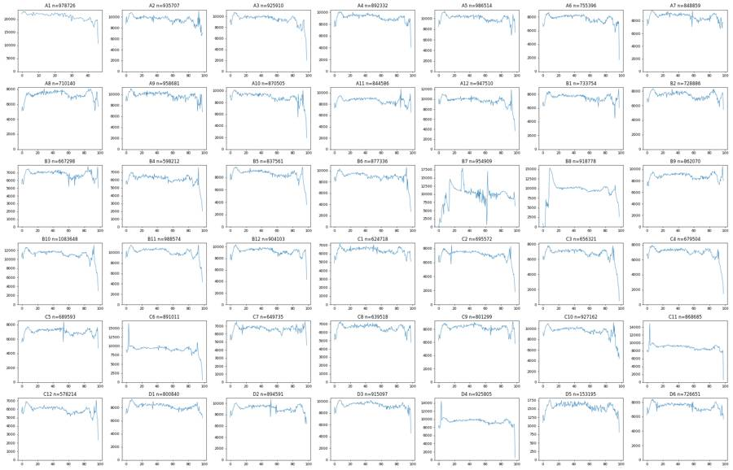
26
tool call · Bash
cd /task/work; cat > reset.py <<'EOF'
import numpy as np
wells=[f'{r}{c}' for r in 'ABC' for c in range(1,13)]+[f'D{c}' for c in range(1,7)]
data={w:np.load(f'npy/{w}.npy') for w in ['C5','C6','C10','C11','C12','D3','D4','D5']}
for w,k in [('C6',4443),('C11',4103),('D4',4084)]:
a=data[w]; pre=a[:k]; post=a[k:]
print(w,'pre n',len(pre),'pre t',pre[0,0],pre[-1,0],'post t',post[0,0],post[-1,0])
# is pre a copy of the first k events of post?
for n2,b in data.items():
# search exact rows
s=set(map(tuple,b[:200000,1:6].tolist()))
m=sum(tuple(r) in s for r in pre[:500,1:6].tolist())
if m>0: print(' match first500 of pre in',n2,m)
s=set(map(tuple,post[:,1:6].tolist()))
print(' pre rows found in own post:',sum(tuple(r) in s for r in pre[:,1:6].tolist()))
for nm,x in [('pre',pre),('post',post[:20000])]:
print(' ',nm,'median FSC,SSC,BL1,RL3,VL1', np.median(x[:,1:6],0).round(0), 'GFP>1e4 frac',np.mean(x[:,3]>1e4).round(3))
EOF
python3 reset.py27
tool output
C6 pre n 4443 pre t 3350.0 3894.0 post t 14.0 97567.0 match first500 of pre in C6 500 pre rows found in own post: 0 pre median FSC,SSC,BL1,RL3,VL1 [9.8137e+04 9.9470e+04 8.7000e+01 3.3010e+03 1.5060e+03] GFP>1e4 frac 0.001 post median FSC,SSC,BL1,RL3,VL1 [1.03078e+05 1.09106e+05 9.00000e+01 3.69200e+03 1.69300e+03] GFP>1e4 frac 0.0 C11 pre n 4103 pre t 3345.0 3896.0 post t 14.0 97535.0 match first500 of pre in C11 500 pre rows found in own post: 0 pre median FSC,SSC,BL1,RL3,VL1 [1.01429e+05 1.02487e+05 8.50000e+01 3.42100e+03 1.66400e+03] GFP>1e4 frac 0.0 post median FSC,SSC,BL1,RL3,VL1 [1.0498e+05 1.0851e+05 8.5000e+01 3.6450e+03 1.7740e+03] GFP>1e4 frac 0.0 D4 pre n 4084 pre t 3292.0 3836.0 post t 14.0 97528.0 match first500 of pre in D4 500 pre rows found in own post: 0 pre median FSC,SSC,BL1,RL3,VL1 [1.02307e+05 1.02952e+05 8.90000e+01 3.50100e+03 1.39800e+03] GFP>1e4 frac 0.0 post median FSC,SSC,BL1,RL3,VL1 [1.04080e+05 1.07108e+05 9.00000e+01 3.75800e+03 1.50700e+03] GFP>1e4 frac 0.0
29
tool call · Bash
cd /task/work; cat > reset2.py <<'EOF'
import numpy as np
wells=[f'{r}{c}' for r in 'ABC' for c in range(1,13)]+[f'D{c}' for c in range(1,7)]
pres={}
for w,k in [('C6',4443),('C11',4103),('D4',4084)]:
a=np.load(f'npy/{w}.npy'); pres[w]=set(map(tuple,a[:k,1:6].tolist()))
for w2 in wells:
b=np.load(f'npy/{w2}.npy')
rows=list(map(tuple,b[:,1:6].tolist()))
for w,s in pres.items():
idx=[i for i,r in enumerate(rows) if r in s]
if idx and w2!=w: print(w,'prefix rows found in',w2,len(idx),'time range',b[idx[0],0],b[idx[-1],0])
if w2==w:
print(w,'self matches',len(idx), 'beyond prefix', sum(i>=len(s) for i in idx))
EOF
python3 reset2.py30
tool output
C6 self matches 4443 beyond prefix 0 C11 self matches 4103 beyond prefix 0 D4 self matches 4084 beyond prefix 0
32
tool call · Bash
cd /task/work; cat > scat.py <<'EOF'
import numpy as np, matplotlib; matplotlib.use('Agg'); import matplotlib.pyplot as plt
from matplotlib.colors import LogNorm
wells=['A1','A2','A5','B1','B7','B8','C3','C6','D5','D6','B4','C12']
fig,axs=plt.subplots(3,4,figsize=(20,15))
for ax,w in zip(axs.flat,wells):
a=np.load(f'npy/{w}.npy')
ax.hist2d(a[:,1],a[:,2],bins=300,range=[[0,1.05e6],[0,1.05e6]],norm=LogNorm(),cmap='jet')
ax.set_title(w); ax.set_xlabel('FSC-A'); ax.set_ylabel('SSC-A')
plt.tight_layout(); plt.savefig('plots/fsc_ssc_lin.png',dpi=45)
fig,axs=plt.subplots(3,4,figsize=(20,15))
for ax,w in zip(axs.flat,wells):
a=np.load(f'npy/{w}.npy')
x=np.log10(np.clip(a[:,1],1,None)); y=np.log10(np.clip(a[:,2],1,None))
ax.hist2d(x,y,bins=300,range=[[2,6.1],[2,6.1]],norm=LogNorm(),cmap='jet')
ax.set_title(w); ax.set_xlabel('log FSC-A'); ax.set_ylabel('log SSC-A')
plt.tight_layout(); plt.savefig('plots/fsc_ssc_log.png',dpi=45)
EOF
python3 scat.py33
tool output
(Bash completed with no output)
34
agent
Time QC found flow disturbances in B7 and B8, and a block of out-of-order timestamps in C6, C11 and D4. I'm now looking at the scatter plots to place the Cells gate.
35
tool call · Read
{
"file_path": "/task/work/plots/fsc_ssc_lin.png"
}36
tool output
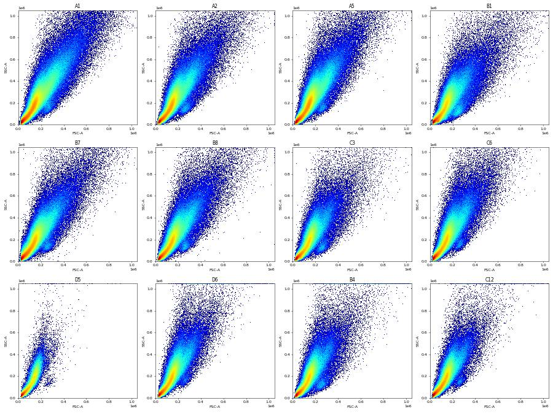
37
tool call · Read
{
"file_path": "/task/work/plots/fsc_ssc_log.png"
}38
tool output
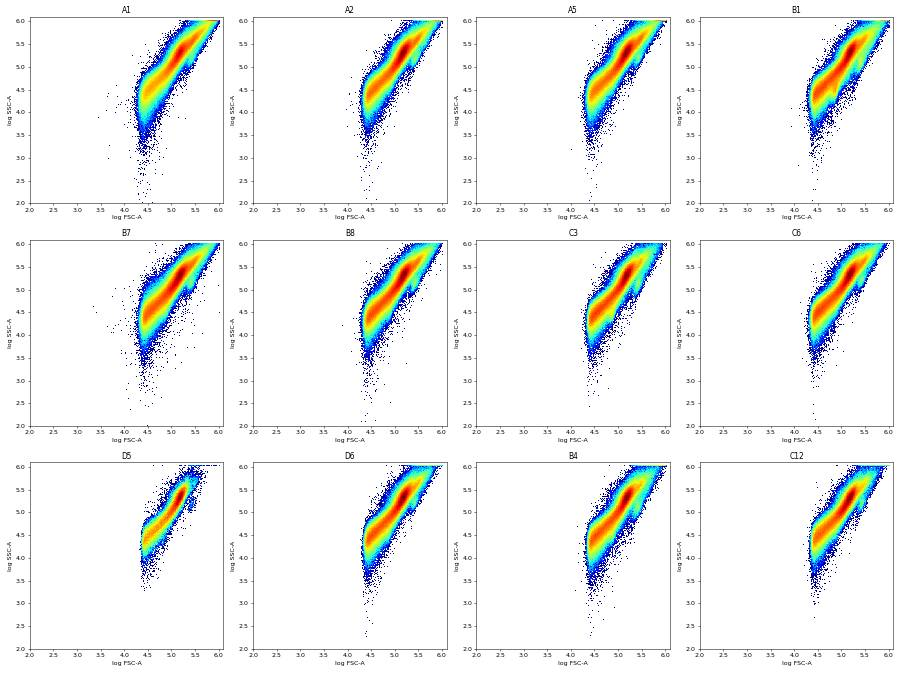
40
tool call · Bash
cd /task/work; python3 - <<'EOF' import flowkit as fk, inspect print(inspect.signature(fk.transforms.LogicleTransform.__init__)) print(inspect.signature(fk.GatingStrategy.add_transform)) print(inspect.signature(fk.GatingStrategy.add_gate)) print(inspect.signature(fk.gates.RectangleGate.__init__)) print(inspect.signature(fk.gates.PolygonGate.__init__)) print(inspect.signature(fk.Dimension.__init__)) print(inspect.signature(fk.Sample.__init__)) EOF
41
tool output
(self, param_t, param_w, param_m, param_a) (self, transform_id, transform) (self, gate, gate_path, sample_id=None) (self, gate_name, dimensions, use_complement=False) (self, gate_name, dimensions, vertices, use_complement=False) (self, dimension_id, compensation_ref='uncompensated', transformation_ref=None, range_min=None, range_max=None) (self, fcs_path_or_data, sample_id=None, filename_as_id=False, channel_labels=None, compensation=None, null_channel_list=None, ignore_offset_error=False, ignore_offset_discrepancy=False, use_header_offsets=False, cache_original_events=False, subsample=10000)
43
tool call · Bash
cd /task/work; python3 - <<'EOF'
import numpy as np
for w in ['A1','A2','B1','B4','C6','D5']:
a=np.load(f'npy/{w}.npy')
for i,c in [(3,'BL1-A'),(4,'RL3-A'),(5,'VL1-A'),(2,'SSC-A'),(7,'SSC-H')]:
x=a[:,i]
print(w,c,'min',x.min(),'neg%',round(100*np.mean(x<0),2),'pcts',np.percentile(x,[1,5,25,50,75,95,99,99.9]).round(0))
EOF44
tool output
A1 BL1-A min -20239.0 neg% 8.16 pcts [ -55. -15. 49. 120. 244. 711. 1399. 5284.] A1 RL3-A min -14906.0 neg% 6.43 pcts [-2.36000e+02 -5.50000e+01 1.09200e+03 4.24100e+03 1.16360e+04 3.19150e+04 5.68520e+04 1.02687e+05] A1 VL1-A min -14437.0 neg% 9.33 pcts [ -567. -229. 824. 2724. 6258. 20564. 56324. 138630.] A1 SSC-A min -65536.0 neg% 0.07 pcts [ 10864. 21959. 62230. 155780. 273546. 631548. 1048575. 1048575.] A1 SSC-H min 0.0 neg% 0.0 pcts [ 13831. 23146. 54423. 119673. 185625. 289885. 421410. 701183.] A2 BL1-A min -15303.0 neg% 8.44 pcts [ -52. -15. 44. 103. 198. 538. 1074. 5548.] A2 RL3-A min -3692.0 neg% 3.89 pcts [-1.06000e+02 3.40000e+01 1.34000e+03 4.50500e+03 1.14860e+04 3.28500e+04 5.93410e+04 1.06537e+05] A2 VL1-A min -8001.0 neg% 3.33 pcts [-1.53000e+02 7.30000e+01 8.66000e+02 2.52900e+03 5.74100e+03 1.86290e+04 5.51770e+04 1.36588e+05] A2 SSC-A min -51085.0 neg% 0.01 pcts [ 12424. 21584. 54406. 139570. 241321. 503217. 863059. 1048575.] A2 SSC-H min 0.0 neg% 0.0 pcts [ 13444. 21819. 48766. 111614. 177616. 274038. 390807. 621878.] B1 BL1-A min -175.0 neg% 10.02 pcts [ -55. -20. 37. 95. 191. 516. 1013. 2080.] B1 RL3-A min -2267.0 neg% 6.11 pcts [-1.19000e+02 -1.90000e+01 6.84000e+02 3.40800e+03 1.15320e+04 3.19710e+04 5.63360e+04 1.02794e+05] B1 VL1-A min -4116.0 neg% 5.28 pcts [-2.03000e+02 -1.00000e+01 6.32000e+02 2.11600e+03 5.94200e+03 2.88460e+04 7.62010e+04 1.85083e+05] B1 SSC-A min -45231.0 neg% 0.01 pcts [ 11460. 19901. 42674. 102788. 216782. 460520. 830671. 1048575.] B1 SSC-H min 0.0 neg% 0.0 pcts [ 12010. 19691. 38620. 83258. 163528. 264256. 383634. 630348.] B4 BL1-A min -1167.0 neg% 8.74 pcts [ -51. -16. 42. 100. 189. 500. 998. 2194.] B4 RL3-A min -13854.0 neg% 4.78 pcts [-1.03000e+02 4.00000e+00 8.30000e+02 4.06500e+03 1.29360e+04 3.68810e+04 6.50140e+04 1.22373e+05] B4 VL1-A min -38190.0 neg% 1.68 pcts [-3.7000e+01 9.9000e+01 5.7700e+02 1.6410e+03 4.0570e+03 1.5395e+04 5.6209e+04 1.6260e+05] B4 SSC-A min -65536.0 neg% 0.02 pcts [ 11048. 19368. 42996. 107647. 217633. 424442. 732750. 1048575.] B4 SSC-H min 0.0 neg% 0.0 pcts [ 11822. 19568. 39959. 89420. 168563. 265064. 390983. 675583.] C6 BL1-A min -15913.0 neg% 8.99 pcts [ -53. -17. 40. 96. 189. 493. 988. 4135.] C6 RL3-A min -1087.0 neg% 2.41 pcts [-6.60000e+01 1.05000e+02 1.31000e+03 4.04500e+03 1.06900e+04 3.20760e+04 5.75460e+04 1.03092e+05] C6 VL1-A min -962.0 neg% 2.88 pcts [-1.00000e+02 7.50000e+01 6.96000e+02 2.00900e+03 4.81900e+03 1.43700e+04 4.36280e+04 1.01882e+05] C6 SSC-A min -22338.0 neg% 0.01 pcts [ 13062. 22191. 48588. 119941. 232407. 466400. 777436. 1048575.] C6 SSC-H min 568.0 neg% 0.0 pcts [ 14168. 22572. 44617. 98117. 175432. 277038. 398653. 644848.] D5 BL1-A min -11844.0 neg% 8.85 pcts [ -50. -16. 38. 88. 160. 387. 801. 2981.] D5 RL3-A min -436.0 neg% 1.11 pcts [-6.00000e+00 1.49000e+02 2.68100e+03 7.94900e+03 1.87420e+04 5.25060e+04 8.78870e+04 1.49841e+05] D5 VL1-A min -446.0 neg% 0.46 pcts [2.9000e+01 1.3100e+02 5.5000e+02 1.5100e+03 3.6190e+03 9.3430e+03 2.6332e+04 8.1847e+04] D5 SSC-A min 670.0 neg% 0.0 pcts [ 13015. 21362. 45505. 106346. 203976. 343472. 530192. 984396.] D5 SSC-H min 1614.0 neg% 0.0 pcts [ 13263. 21329. 42888. 91358. 165579. 257646. 358757. 588335.]
46
tool call · Bash
cd /task/work; cat > fl1.py <<'EOF'
import numpy as np, matplotlib; matplotlib.use('Agg'); import matplotlib.pyplot as plt
from matplotlib.colors import LogNorm
import flowkit as fk
lt=fk.transforms.LogicleTransform(param_t=1048576,param_w=1.0,param_m=6.0,param_a=0)
def L(x): return lt.apply(x.astype(float))
wells=['A1','A2','A5','B1','B4','B7','C6','C7','D5','D6','A12','C12']
fig,axs=plt.subplots(3,4,figsize=(20,15))
for ax,w in zip(axs.flat,wells):
a=np.load(f'npy/{w}.npy')
m=(a[:,1]>6e4)
ax.hist2d(L(a[m,4]),a[m,2],bins=300,range=[[0,1],[0,1.05e6]],norm=LogNorm(),cmap='jet')
ax.set_title(w+' RL3-A vs SSC-A (FSC>6e4)')
plt.tight_layout(); plt.savefig('plots/rl3_ssc.png',dpi=45)
fig,axs=plt.subplots(3,4,figsize=(20,15))
for ax,w in zip(axs.flat,wells):
a=np.load(f'npy/{w}.npy')
m=(a[:,1]>6e4)
ax.hist2d(L(a[m,3]),a[m,2],bins=300,range=[[0,1],[0,1.05e6]],norm=LogNorm(),cmap='jet')
ax.set_title(w+' BL1-A vs SSC-A (FSC>6e4)')
plt.tight_layout(); plt.savefig('plots/bl1_ssc.png',dpi=45)
# ticks
for v in [-1000,0,100,1000,1e4,1e5,1e6]: print(v, L(np.array([v]))[0])
EOF
python3 fl1.py47
tool output
-1000 -0.15489654213619797 0 0.16666666666666666 100 0.28291220138967843 1000 0.4882298754695313 10000.0 0.6622501065678799 100000.0 0.8298013679911009 1000000.0 0.9965661535071249
48
tool call · Read
{
"file_path": "/task/work/plots/rl3_ssc.png"
}49
tool output
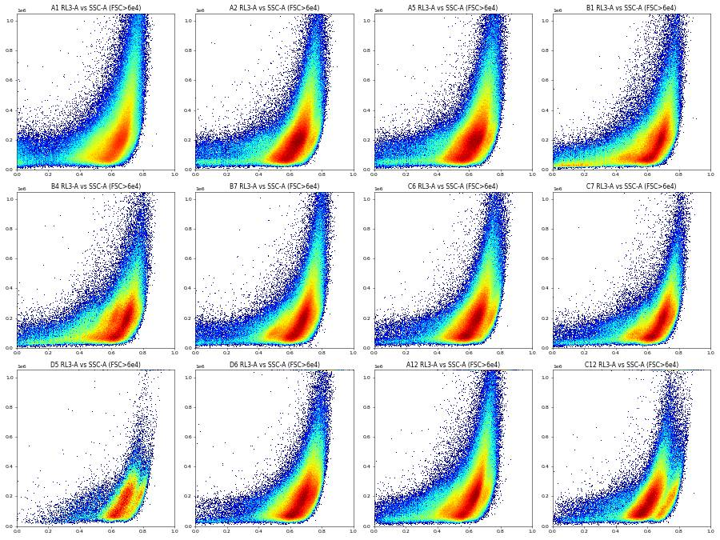
50
tool call · Read
{
"file_path": "/task/work/plots/bl1_ssc.png"
}51
tool output
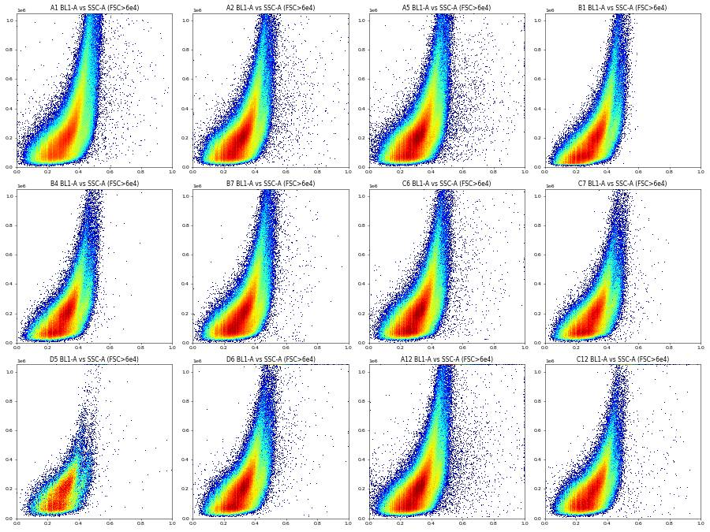
53
tool call · Bash
cd /task/work; cat > sing.py <<'EOF'
import numpy as np, matplotlib; matplotlib.use('Agg'); import matplotlib.pyplot as plt
from matplotlib.colors import LogNorm
wells=['A1','A2','A5','B1','B4','B7','C6','C7','D5','D6','A12','C12']
fig,axs=plt.subplots(3,4,figsize=(20,15))
for ax,w in zip(axs.flat,wells):
a=np.load(f'npy/{w}.npy')
m=(a[:,1]>6e4)
ax.hist2d(a[m,7],a[m,2],bins=300,range=[[0,1.05e6],[0,1.05e6]],norm=LogNorm(),cmap='jet')
ax.plot([0,1e6],[0,1e6],'k--',lw=0.5)
ax.set_title(w+' SSC-H vs SSC-A (FSC>6e4)')
plt.tight_layout(); plt.savefig('plots/ssch_ssca.png',dpi=45)
fig,axs=plt.subplots(3,4,figsize=(20,15))
for ax,w in zip(axs.flat,wells):
a=np.load(f'npy/{w}.npy')
m=(a[:,1]>6e4)&(a[:,7]>0)
ax.hist2d(np.log10(a[m,7]),np.log10(np.clip(a[m,2],1,None))-np.log10(a[m,7]),bins=300,range=[[3.5,6.1],[-0.3,1]],norm=LogNorm(),cmap='jet')
ax.set_title(w+' log SSC-H vs log(A/H)')
plt.tight_layout(); plt.savefig('plots/ssch_ratio.png',dpi=45)
EOF
python3 sing.py54
tool output
(Bash completed with no output)
55
agent
I'm checking the SSC-H vs SSC-A plots to place the Singlets gate.
56
tool call · Read
{
"file_path": "/task/work/plots/ssch_ssca.png"
}57
tool output
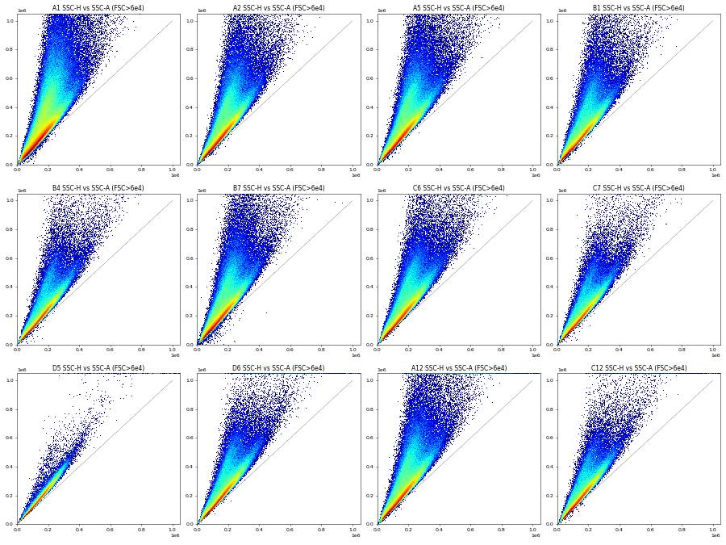
58
tool call · Read
{
"file_path": "/task/work/plots/ssch_ratio.png"
}59
tool output
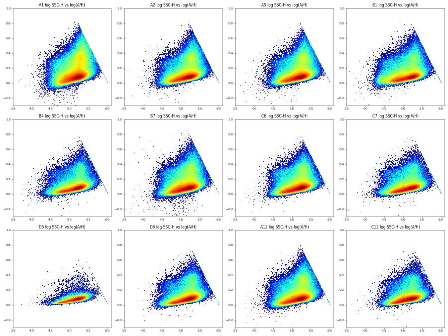
61
tool call · Bash
cd /task/work; cat > deb.py <<'EOF'
import numpy as np, matplotlib; matplotlib.use('Agg'); import matplotlib.pyplot as plt
from matplotlib.colors import LogNorm
import flowkit as fk
lt=fk.transforms.LogicleTransform(param_t=1048576,param_w=1.0,param_m=6.0,param_a=0)
wells=['A1','A2','B1','C7','D5','D6']
fig,axs=plt.subplots(3,6,figsize=(30,15))
for j,w in enumerate(wells):
a=np.load(f'npy/{w}.npy')
ax=axs[0,j]; ax.hist2d(a[:,1],a[:,2],bins=300,range=[[0,4e5],[0,4e5]],norm=LogNorm(),cmap='jet'); ax.set_title(w+' zoom FSC-A vs SSC-A')
ax=axs[1,j]; ax.hist(np.log10(np.clip(a[:,1],1e3,None)),bins=300,range=(4,6.1),histtype='step'); ax.set_title(w+' log FSC-A')
# color by RL3: FSC vs SSC for RL3 bright vs dim
r=lt.apply(a[:,4].astype(float))
ax=axs[2,j]
for sel,c in [(r<0.45,'b'),((r>0.55)&(r<0.75),'g'),(r>0.78,'r')]:
ax.hist(np.log10(np.clip(a[sel,1],1e3,None)),bins=200,range=(4,6.1),histtype='step',color=c,density=True)
ax.set_title(w+' FSC by RL3 b<0.45 g mid r>0.78')
plt.tight_layout(); plt.savefig('plots/debris.png',dpi=40)
EOF
python3 deb.py62
tool output
(Bash completed with no output)
63
tool call · Read
{
"file_path": "/task/work/plots/debris.png"
}64
tool output
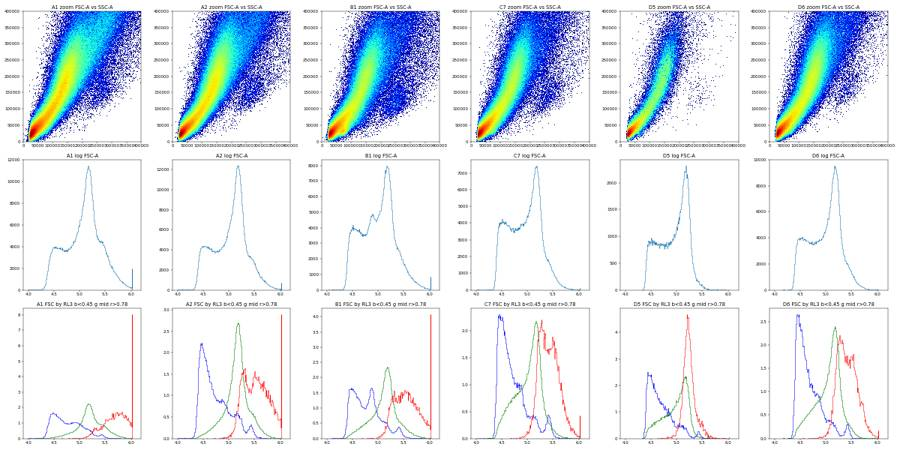
66
tool call · Bash
cd /task/work; python3 - <<'EOF'
import numpy as np
for w in ['A2','B1','D6','D5']:
a=np.load(f'npy/{w}.npy')
m=(a[:,1]>6e4)&(a[:,2]<1.04e6)&(a[:,7]>0)&(a[:,2]>0)
h=a[m,7]; r=np.log10(a[m,2]/h)
print(w)
for lo,hi in [(1e4,3e4),(3e4,6e4),(6e4,1e5),(1e5,2e5),(2e5,3e5),(3e5,5e5),(5e5,1.1e6)]:
s=(h>=lo)&(h<hi)
q=np.percentile(r[s],[1,5,25,50,75,90,95])
# mode
hist,e=np.histogram(r[s],bins=120,range=(-0.2,1.0)); mode=e[np.argmax(hist)]
print(f' H {lo:.0e}-{hi:.0e} n={s.sum()} mode={mode:.3f} q={np.round(q,3)} ratio10^={np.round(10**q,2)}')
EOF67
tool output
A2 H 1e+04-3e+04 n=4277 mode=0.010 q=[-0.095 -0.039 0.012 0.065 0.185 0.274 0.311] ratio10^=[0.8 0.91 1.03 1.16 1.53 1.88 2.05] H 3e+04-6e+04 n=61188 mode=0.020 q=[-0.028 -0.006 0.021 0.049 0.106 0.216 0.277] ratio10^=[0.94 0.99 1.05 1.12 1.28 1.64 1.89] H 6e+04-1e+05 n=131262 mode=0.040 q=[-0.002 0.013 0.037 0.06 0.103 0.187 0.265] ratio10^=[0.99 1.03 1.09 1.15 1.27 1.54 1.84] H 1e+05-2e+05 n=341219 mode=0.070 q=[0.027 0.042 0.068 0.091 0.146 0.295 0.367] ratio10^=[1.06 1.1 1.17 1.23 1.4 1.97 2.33] H 2e+05-3e+05 n=133530 mode=0.090 q=[0.052 0.068 0.095 0.125 0.24 0.376 0.444] ratio10^=[1.13 1.17 1.24 1.33 1.74 2.37 2.78] H 3e+05-5e+05 n=25933 mode=0.120 q=[0.067 0.088 0.127 0.173 0.271 0.36 0.406] ratio10^=[1.17 1.22 1.34 1.49 1.87 2.29 2.55] H 5e+05-1e+06 n=1294 mode=0.170 q=[0.075 0.1 0.152 0.185 0.22 0.253 0.271] ratio10^=[1.19 1.26 1.42 1.53 1.66 1.79 1.87] B1 H 1e+04-3e+04 n=17833 mode=0.030 q=[-0.074 -0.024 0.024 0.056 0.112 0.215 0.273] ratio10^=[0.84 0.95 1.06 1.14 1.29 1.64 1.88] H 3e+04-6e+04 n=71495 mode=0.020 q=[-0.019 0.002 0.028 0.06 0.125 0.232 0.291] ratio10^=[0.96 1. 1.07 1.15 1.33 1.7 1.95] H 6e+04-1e+05 n=112129 mode=0.040 q=[0.003 0.017 0.039 0.064 0.12 0.218 0.294] ratio10^=[1.01 1.04 1.09 1.16 1.32 1.65 1.97] H 1e+05-2e+05 n=213688 mode=0.070 q=[0.027 0.042 0.067 0.089 0.148 0.292 0.367] ratio10^=[1.06 1.1 1.17 1.23 1.41 1.96 2.33] H 2e+05-3e+05 n=86979 mode=0.090 q=[0.052 0.067 0.093 0.121 0.22 0.364 0.432] ratio10^=[1.13 1.17 1.24 1.32 1.66 2.31 2.71] H 3e+05-5e+05 n=17323 mode=0.120 q=[0.065 0.088 0.125 0.171 0.266 0.358 0.408] ratio10^=[1.16 1.22 1.33 1.48 1.84 2.28 2.56] H 5e+05-1e+06 n=958 mode=0.160 q=[0.084 0.109 0.151 0.187 0.224 0.256 0.277] ratio10^=[1.21 1.29 1.42 1.54 1.68 1.8 1.89] D6 H 1e+04-3e+04 n=3609 mode=0.010 q=[-0.062 -0.029 0.007 0.035 0.114 0.242 0.28 ] ratio10^=[0.87 0.94 1.02 1.08 1.3 1.74 1.9 ] H 3e+04-6e+04 n=45928 mode=0.020 q=[-0.017 -0.002 0.018 0.036 0.086 0.206 0.27 ] ratio10^=[0.96 1. 1.04 1.09 1.22 1.61 1.86] H 6e+04-1e+05 n=101078 mode=0.030 q=[0.004 0.015 0.032 0.049 0.081 0.155 0.232] ratio10^=[1.01 1.03 1.08 1.12 1.2 1.43 1.7 ] H 1e+05-2e+05 n=239439 mode=0.070 q=[0.027 0.04 0.064 0.083 0.118 0.222 0.312] ratio10^=[1.06 1.1 1.16 1.21 1.31 1.67 2.05] H 2e+05-3e+05 n=100845 mode=0.090 q=[0.05 0.065 0.089 0.111 0.164 0.302 0.368] ratio10^=[1.12 1.16 1.23 1.29 1.46 2.01 2.33] H 3e+05-5e+05 n=20722 mode=0.120 q=[0.062 0.082 0.117 0.149 0.211 0.302 0.354] ratio10^=[1.15 1.21 1.31 1.41 1.62 2.01 2.26] H 5e+05-1e+06 n=1399 mode=0.170 q=[0.074 0.103 0.149 0.177 0.211 0.242 0.264] ratio10^=[1.19 1.27 1.41 1.5 1.62 1.75 1.83] D5 H 1e+04-3e+04 n=804 mode=0.020 q=[-0.008 0.003 0.019 0.035 0.064 0.116 0.201] ratio10^=[0.98 1.01 1.04 1.08 1.16 1.31 1.59] H 3e+04-6e+04 n=9879 mode=0.020 q=[0.004 0.012 0.023 0.032 0.049 0.088 0.139] ratio10^=[1.01 1.03 1.05 1.08 1.12 1.23 1.38] H 6e+04-1e+05 n=23287 mode=0.040 q=[0.015 0.023 0.036 0.049 0.07 0.102 0.135] ratio10^=[1.04 1.05 1.09 1.12 1.17 1.27 1.36] H 1e+05-2e+05 n=49255 mode=0.070 q=[0.033 0.045 0.064 0.079 0.097 0.123 0.155] ratio10^=[1.08 1.11 1.16 1.2 1.25 1.33 1.43] H 2e+05-3e+05 n=18806 mode=0.090 q=[0.053 0.067 0.086 0.101 0.12 0.149 0.189] ratio10^=[1.13 1.17 1.22 1.26 1.32 1.41 1.54] H 3e+05-5e+05 n=3227 mode=0.120 q=[0.062 0.081 0.11 0.133 0.162 0.202 0.238] ratio10^=[1.15 1.21 1.29 1.36 1.45 1.59 1.73] H 5e+05-1e+06 n=230 mode=0.140 q=[0.073 0.102 0.142 0.165 0.197 0.226 0.24 ] ratio10^=[1.18 1.27 1.39 1.46 1.57 1.68 1.74]
69
tool call · Bash
cd /task/work; cat > prelim.py <<'EOF'
import numpy as np, matplotlib; matplotlib.use('Agg'); import matplotlib.pyplot as plt
from matplotlib.path import Path
from matplotlib.colors import LogNorm
import flowkit as fk
lt=fk.transforms.LogicleTransform(param_t=1048576,param_w=1.0,param_m=6.0,param_a=0)
L=lambda x: lt.apply(x.astype(float))
cells=[(6e4,1.2e4),(6e4,2.6e5),(2.6e5,1.035e6),(1.035e6,1.035e6),(1.035e6,3.5e5),(3.0e5,6e4),(1.6e5,1.2e4)]
sing=[(5e3,4.5e3),(5e3,8e3),(3e4,4.2e4),(1e5,1.45e5),(2e5,2.95e5),(3e5,4.6e5),(4.5e5,7.5e5),(6.2e5,1.05e6),(1.05e6,1.05e6),(1.05e6,9.5e5)]
import pickle; pickle.dump((cells,sing),open('prelim_gates.pkl','wb'))
wells=[f'{r}{c}' for r in 'ABC' for c in range(1,13)]+[f'D{c}' for c in range(1,7)]
pc=Path(cells+[cells[0]]); ps=Path(sing+[sing[0]])
fig,axs=plt.subplots(6,7,figsize=(28,20)); fig2,axs2=plt.subplots(6,7,figsize=(28,20)); fig3,axs3=plt.subplots(6,7,figsize=(28,20))
out={}
for i,w in enumerate(wells):
a=np.load(f'npy/{w}.npy')
mc=pc.contains_points(a[:,[1,2]])
ms=mc & ps.contains_points(a[:,[7,2]])
out[w]=(len(a),mc.sum(),ms.sum())
ax=axs.flat[i]; ax.hist2d(a[:,1],a[:,2],bins=200,range=[[0,1.05e6],[0,1.05e6]],norm=LogNorm(),cmap='jet'); ax.plot(*zip(*(cells+[cells[0]])),'k-'); ax.set_title(f'{w} {100*mc.mean():.1f}%')
ax=axs2.flat[i]; ax.hist2d(a[mc,7],a[mc,2],bins=200,range=[[0,1.05e6],[0,1.05e6]],norm=LogNorm(),cmap='jet'); ax.plot(*zip(*(sing+[sing[0]])),'k-'); ax.set_title(f'{w} {100*ms.sum()/mc.sum():.1f}%')
ax=axs3.flat[i]; r=L(a[ms,4]); ax.hist(r,bins=250,range=(0,1),histtype='step'); ax.set_yscale('linear'); ax.set_title(w)
for x in [0.70,0.75,0.78]: ax.axvline(x,color='r',lw=0.5)
fig.tight_layout(); fig.savefig('plots/g_cells_all.png',dpi=40)
fig2.tight_layout(); fig2.savefig('plots/g_sing_all.png',dpi=40)
fig3.tight_layout(); fig3.savefig('plots/rl3_hist_all.png',dpi=40)
for w,v in out.items(): print(w,v, round(100*v[1]/v[0],1), round(100*v[2]/v[1],1))
EOF
python3 prelim.py70
tool output
A1 (978726, 746822, 495779) 76.3 66.4 A2 (935707, 698121, 541163) 74.6 77.5 A3 (925910, 697688, 550892) 75.4 79.0 A4 (892332, 679356, 532930) 76.1 78.4 A5 (986514, 739106, 570944) 74.9 77.2 A6 (755396, 572806, 468726) 75.8 81.8 A7 (848859, 635514, 496527) 74.9 78.1 A8 (710140, 534924, 435158) 75.3 81.3 A9 (958681, 698485, 517948) 72.9 74.2 A10 (870505, 647298, 501078) 74.4 77.4 A11 (844586, 609596, 488544) 72.2 80.1 A12 (947510, 686857, 535097) 72.5 77.9 B1 (733754, 519896, 402168) 70.9 77.4 B2 (728886, 511657, 396583) 70.2 77.5 B3 (667298, 466415, 377525) 69.9 80.9 B4 (598212, 413460, 344676) 69.1 83.4 B5 (837561, 598743, 475874) 71.5 79.5 B6 (877336, 616907, 482823) 70.3 78.3 B7 (954909, 682853, 523796) 71.5 76.7 B8 (918778, 655717, 510913) 71.4 77.9 B9 (862070, 627444, 494617) 72.8 78.8 B10 (1083648, 776330, 589374) 71.6 75.9 B11 (988574, 703902, 550588) 71.2 78.2 B12 (904103, 637447, 503207) 70.5 78.9 C1 (624718, 426757, 363917) 68.3 85.3 C2 (695572, 473858, 393721) 68.1 83.1 C3 (656321, 449043, 364787) 68.4 81.2 C4 (679504, 472294, 391060) 69.5 82.8 C5 (689593, 478186, 399956) 69.3 83.6 C6 (891011, 616859, 490558) 69.2 79.5 C7 (649735, 433265, 361538) 66.7 83.4 C8 (639518, 434040, 363803) 67.9 83.8 C9 (801299, 568421, 453939) 70.9 79.9 C10 (927162, 664048, 519054) 71.6 78.2 C11 (868685, 621374, 493189) 71.5 79.4 C12 (578214, 409180, 349009) 70.8 85.3 D1 (800840, 568128, 461120) 70.9 81.2 D2 (894591, 641523, 511688) 71.7 79.8 D3 (915097, 656657, 507709) 71.8 77.3 D4 (925805, 671970, 526158) 72.6 78.3 D5 (153195, 105329, 100614) 68.8 95.5 D6 (726651, 512378, 430625) 70.5 84.0
71
tool call · Read
{
"file_path": "/task/work/plots/g_cells_all.png"
}72
tool output
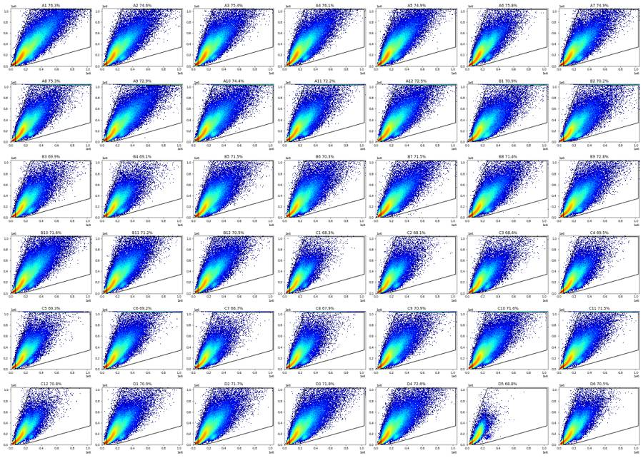
73
tool call · Read
{
"file_path": "/task/work/plots/rl3_hist_all.png"
}74
tool output
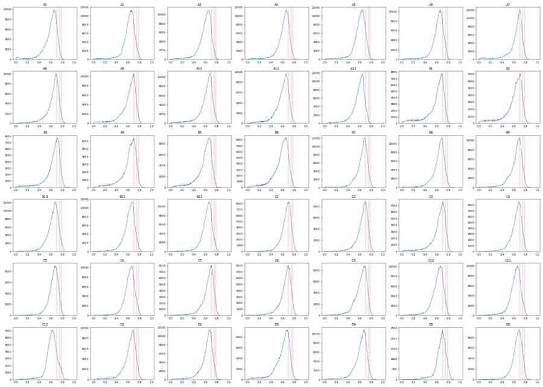
76
agent
I'm looking for the live/dead valley in Zombie NIR (RL3-A). The 1-D histograms show one main peak with a right shoulder, so I'm checking 2-D views to pin it down.
77
tool call · Bash
cd /task/work; cat > rl3b.py <<'EOF'
import numpy as np, matplotlib; matplotlib.use('Agg'); import matplotlib.pyplot as plt
from matplotlib.path import Path
from matplotlib.colors import LogNorm
import flowkit as fk, pickle
lt=fk.transforms.LogicleTransform(param_t=1048576,param_w=1.0,param_m=6.0,param_a=0)
L=lambda x: lt.apply(x.astype(float))
cells,sing=pickle.load(open('prelim_gates.pkl','rb'))
pc=Path(cells+[cells[0]]); ps=Path(sing+[sing[0]])
wells=['A2','B1','C12','D3','D5','D6']
fig,axs=plt.subplots(4,6,figsize=(36,24))
for j,w in enumerate(wells):
a=np.load(f'npy/{w}.npy')
ms=pc.contains_points(a[:,[1,2]]) & ps.contains_points(a[:,[7,2]])
b=a[ms]; r=L(b[:,4])
axs[0,j].hist2d(r,b[:,2],bins=250,range=[[0.3,0.95],[0,1.05e6]],norm=LogNorm(),cmap='jet'); axs[0,j].set_title(w+' RL3 vs SSC-A singlets')
axs[1,j].hist2d(r,b[:,1],bins=250,range=[[0.3,0.95],[0,1.05e6]],norm=LogNorm(),cmap='jet'); axs[1,j].set_title(w+' RL3 vs FSC-A')
axs[2,j].hist2d(r,np.log10(np.clip(b[:,2],1e3,None))-np.log10(np.clip(b[:,1],1e3,None)),bins=250,range=[[0.3,0.95],[-0.6,0.8]],norm=LogNorm(),cmap='jet'); axs[2,j].set_title(w+' RL3 vs log SSC/FSC')
axs[3,j].hist2d(r,L(b[:,5]),bins=250,range=[[0.3,0.95],[0.2,0.95]],norm=LogNorm(),cmap='jet'); axs[3,j].set_title(w+' RL3 vs VL1 NCAM')
plt.tight_layout(); plt.savefig('plots/rl3_2d.png',dpi=38)
EOF
python3 rl3b.py78
tool output
(Bash completed with no output)
79
tool call · Read
{
"file_path": "/task/work/plots/rl3_2d.png"
}80
tool output
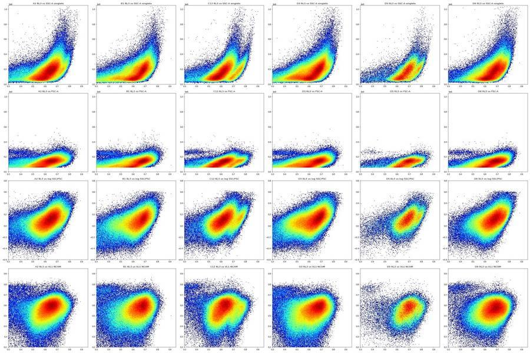
82
tool call · Bash
cd /task/work; cat > rl3c.py <<'EOF'
import numpy as np, matplotlib; matplotlib.use('Agg'); import matplotlib.pyplot as plt
from matplotlib.path import Path
import pickle
from scipy.ndimage import gaussian_filter1d
cells,sing=pickle.load(open('prelim_gates.pkl','rb'))
pc=Path(cells+[cells[0]]); ps=Path(sing+[sing[0]])
wells=[f'{r}{c}' for r in 'ABC' for c in range(1,13)]+[f'D{c}' for c in range(1,7)]
fig,axs=plt.subplots(6,7,figsize=(28,20))
res={}
for i,w in enumerate(wells):
a=np.load(f'npy/{w}.npy')
ms=pc.contains_points(a[:,[1,2]]) & ps.contains_points(a[:,[7,2]])
b=a[ms]; np.save(f'npy/{w}_sing.npy',b)
x=np.log10(np.clip(b[:,4],10,None))
h,e=np.histogram(x,bins=300,range=(2.5,5.5)); c=(e[:-1]+e[1:])/2
hs=gaussian_filter1d(h.astype(float),2)
ax=axs.flat[i]; ax.plot(c,hs); ax.set_title(w)
d1=np.gradient(hs); d2=np.gradient(d1)
ax2=ax.twinx(); ax2.plot(c,-gaussian_filter1d(d2,3),'r',lw=0.5); ax2.axhline(0,color='r',lw=0.3)
for v in [4.3,4.4,4.5]: ax.axvline(v,color='k',lw=0.4)
res[w]=c[np.argmax(hs)]
fig.tight_layout(); fig.savefig('plots/rl3_log_all.png',dpi=40)
print({k:round(v,2) for k,v in res.items()})
EOF
python3 rl3c.py83
tool output
{'A1': 3.9, 'A2': 3.88, 'A3': 3.93, 'A4': 4.0, 'A5': 3.84, 'A6': 3.96, 'A7': 4.18, 'A8': 4.12, 'A9': 4.15, 'A10': 4.07, 'A11': 3.98, 'A12': 3.86, 'B1': 4.08, 'B2': 4.22, 'B3': 4.27, 'B4': 4.16, 'B5': 4.02, 'B6': 3.91, 'B7': 4.1, 'B8': 4.06, 'B9': 4.14, 'B10': 4.06, 'B11': 4.0, 'B12': 4.02, 'C1': 4.24, 'C2': 4.18, 'C3': 4.22, 'C4': 4.11, 'C5': 4.04, 'C6': 3.96, 'C7': 4.22, 'C8': 4.15, 'C9': 4.06, 'C10': 3.98, 'C11': 4.0, 'C12': 3.72, 'D1': 4.1, 'D2': 4.06, 'D3': 4.07, 'D4': 4.04, 'D5': 4.18, 'D6': 4.12}84
tool call · Read
{
"file_path": "/task/work/plots/rl3_log_all.png"
}85
tool output
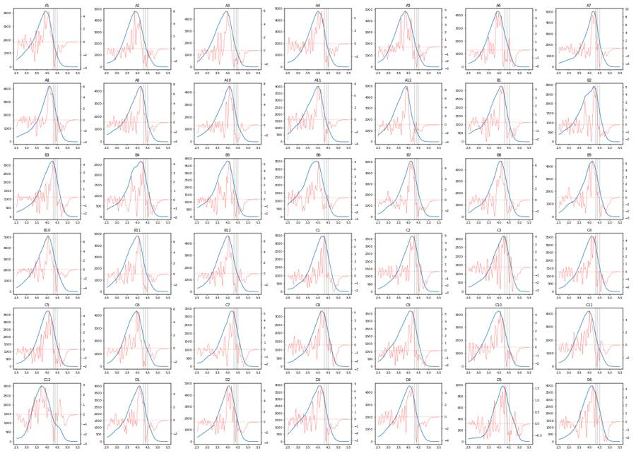
87
tool call · Bash
cd /task/work; cat > rl3d.py <<'EOF'
import numpy as np, matplotlib; matplotlib.use('Agg'); import matplotlib.pyplot as plt
from matplotlib.colors import LogNorm
wells=[f'{r}{c}' for r in 'ABC' for c in range(1,13)]+[f'D{c}' for c in range(1,7)]
fig,axs=plt.subplots(6,7,figsize=(28,22))
for i,w in enumerate(wells):
b=np.load(f'npy/{w}_sing.npy')
x=np.log10(np.clip(b[:,4],10,None)); y=np.log10(np.clip(b[:,2],10,None))
ax=axs.flat[i]; ax.hist2d(x,y,bins=200,range=[[3,5.3],[4,6.05]],norm=LogNorm(),cmap='jet'); ax.set_title(w)
for v in [4.3,4.4,4.5]: ax.axvline(v,color='k',lw=0.4)
fig.tight_layout(); fig.savefig('plots/rl3_ssc_log_all.png',dpi=40)
EOF
python3 rl3d.py88
tool output
(Bash completed with no output)
89
tool call · Read
{
"file_path": "/task/work/plots/rl3_ssc_log_all.png"
}90
tool output
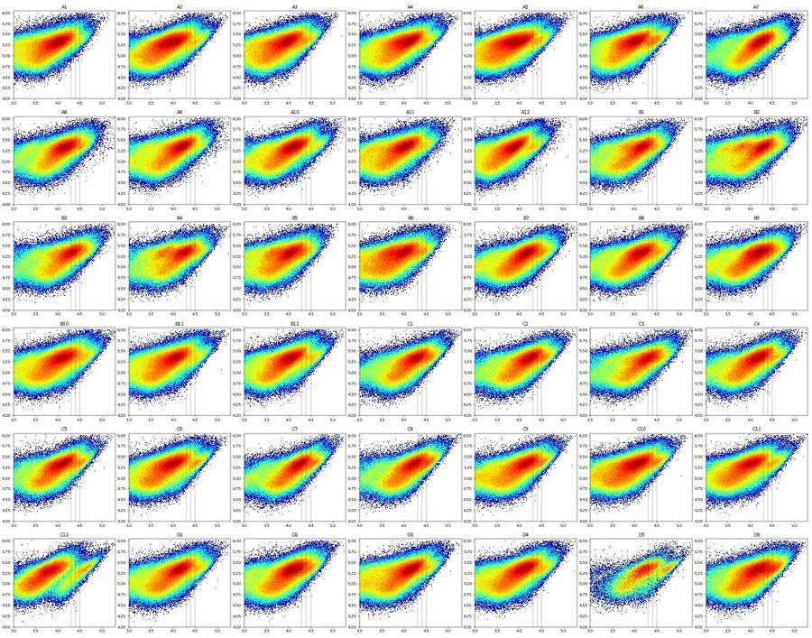
92
agent
The Zombie-bright (dead) cells form a separate lobe at log RL3-A ≈ 4.4–4.7, clearest in C12. I'm locating the valley per well within the SSC band where that lobe sits.
93
tool call · Bash
cd /task/work; cat > rl3e.py <<'EOF'
import numpy as np, matplotlib; matplotlib.use('Agg'); import matplotlib.pyplot as plt
from scipy.ndimage import gaussian_filter1d
from scipy.signal import argrelextrema
wells=[f'{r}{c}' for r in 'ABC' for c in range(1,13)]+[f'D{c}' for c in range(1,7)]
fig,axs=plt.subplots(6,7,figsize=(28,20))
vals={}
for i,w in enumerate(wells):
b=np.load(f'npy/{w}_sing.npy')
x=np.log10(np.clip(b[:,4],10,None)); y=np.log10(np.clip(b[:,2],10,None))
ax=axs.flat[i]
for (lo,hi),col in [((4.8,5.1),'g'),((5.0,5.3),'b'),((5.2,5.5),'m')]:
s=(y>=lo)&(y<hi)
h,e=np.histogram(x[s],bins=230,range=(3.0,5.3)); c=(e[:-1]+e[1:])/2
hs=gaussian_filter1d(h.astype(float),3)
ax.plot(c,hs/hs.max(),col,lw=0.8)
if col=='b':
# find minima between 4.1 and 4.7
mi=[j for j in argrelextrema(hs,np.less,order=5)[0] if 4.1<c[j]<4.7]
vals[w]=[round(c[j],2) for j in mi]
ax.set_yscale('log'); ax.set_ylim(1e-3,1.2)
for v in [4.3,4.4,4.5]: ax.axvline(v,color='k',lw=0.4)
ax.set_title(f'{w} minima {vals[w]}')
fig.tight_layout(); fig.savefig('plots/rl3_band_all.png',dpi=40)
print(vals)
EOF
python3 rl3e.py94
tool output
{'A1': [], 'A2': [], 'A3': [], 'A4': [], 'A5': [], 'A6': [], 'A7': [], 'A8': [], 'A9': [], 'A10': [], 'A11': [], 'A12': [], 'B1': [], 'B2': [], 'B3': [], 'B4': [], 'B5': [], 'B6': [], 'B7': [], 'B8': [], 'B9': [], 'B10': [], 'B11': [], 'B12': [], 'C1': [], 'C2': [], 'C3': [], 'C4': [], 'C5': [], 'C6': [], 'C7': [], 'C8': [], 'C9': [], 'C10': [], 'C11': [], 'C12': [4.15], 'D1': [], 'D2': [], 'D3': [], 'D4': [], 'D5': [4.52], 'D6': []}95
tool call · Read
{
"file_path": "/task/work/plots/rl3_band_all.png"
}96
tool output
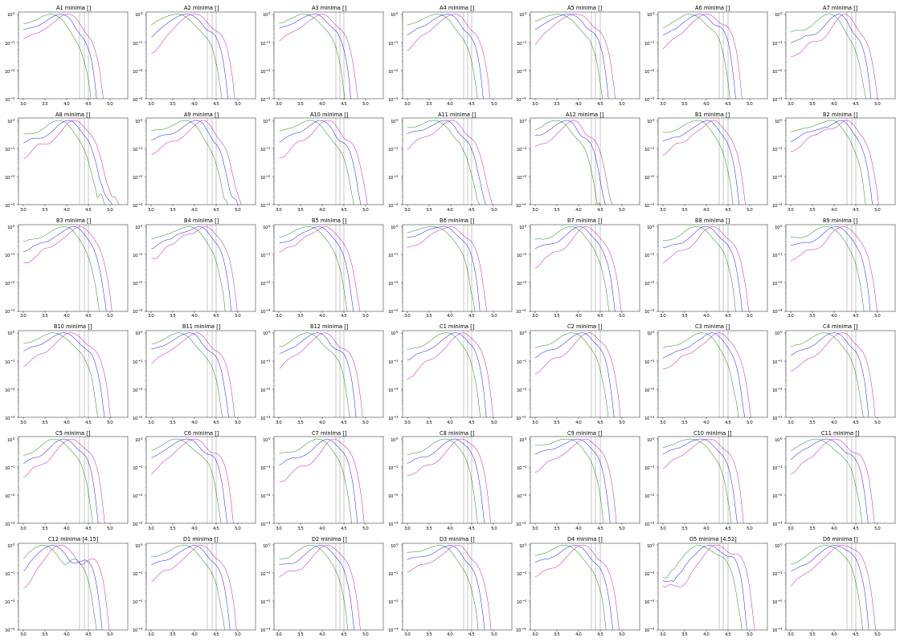
98
tool call · Bash
cd /task/work; cat > gfp1.py <<'EOF'
import numpy as np, pandas as pd
wells=[f'{r}{c}' for r in 'ABC' for c in range(1,13)]+[f'D{c}' for c in range(1,7)]
lay=pd.read_csv('/task/inputs/plate_layout.csv').set_index('well')
rows=[]
for w in wells:
b=np.load(f'npy/{w}_sing.npy')
live=b[b[:,4]<2.2e4]
g=live[:,3]
r=dict(well=w,dose=lay.loc[w,'dose_vg_per_cell'],rep=lay.loc[w,'replicate'],sing=len(b),live=len(live),live_pct=round(100*len(live)/len(b),1))
for c in [1000,2000,3000,5000,1e4]:
r[f'g>{int(c)}']=round(100*np.mean(g>c),3)
r['bl1_p50']=np.median(g); r['bl1_p99']=np.percentile(g,99).round(0); r['bl1_p999']=np.percentile(g,99.9).round(0)
r['rl3_p50']=np.median(b[:,4]).round(0)
r['vl1_p50']=np.median(live[:,5]).round(0)
rows.append(r)
df=pd.DataFrame(rows); pd.set_option('display.width',300)
print(df.to_string())
df.to_csv('gfp_prelim.csv',index=False)
EOF
python3 gfp1.py99
tool output
well dose rep sing live live_pct g>1000 g>2000 g>3000 g>5000 g>10000 bl1_p50 bl1_p99 bl1_p999 rl3_p50 vl1_p50 0 A1 5000 1 495779 465948 94.0 0.547 0.087 0.057 0.039 0.024 116.0 842.0 1748.0 5239.0 2564.0 1 A2 5000 2 541163 492810 91.1 0.421 0.114 0.083 0.061 0.039 110.0 769.0 2287.0 6129.0 2741.0 2 A3 10000 1 550892 515460 93.6 0.605 0.184 0.131 0.088 0.049 110.0 845.0 4233.0 5241.0 2506.0 3 A4 10000 2 532930 478435 89.8 0.480 0.169 0.123 0.088 0.057 116.0 784.0 4065.0 6977.0 2764.0 4 A5 50000 1 570944 532303 93.2 0.553 0.180 0.132 0.093 0.059 112.0 820.0 4349.0 5134.0 2689.0 5 A6 50000 2 468726 421132 89.8 0.547 0.216 0.158 0.112 0.070 122.0 799.0 5652.0 6750.0 2737.0 6 A7 5000 1 496527 404215 81.4 0.360 0.101 0.076 0.053 0.031 117.0 750.0 2019.0 10307.0 2301.0 7 A8 5000 2 435158 367306 84.4 0.476 0.172 0.126 0.090 0.055 108.0 767.0 4066.0 8965.0 2472.0 8 A9 10000 1 517948 453074 87.5 0.366 0.084 0.063 0.042 0.028 115.0 758.0 1687.0 7111.0 2246.0 9 A10 10000 2 501078 442532 88.3 0.346 0.103 0.078 0.056 0.035 109.0 735.0 2061.0 7234.0 2477.0 10 A11 50000 1 488544 451756 92.5 0.462 0.153 0.118 0.087 0.060 116.0 783.0 3832.0 5363.0 2409.0 11 A12 50000 2 535097 515412 96.3 0.758 0.243 0.178 0.123 0.083 119.0 905.0 7429.0 4438.0 2479.0 12 B1 5000 1 402168 359138 89.3 0.252 0.006 0.001 0.001 0.000 107.0 732.0 1189.0 6282.0 2304.0 13 B2 5000 2 396583 332244 83.8 0.178 0.008 0.004 0.001 0.000 109.0 660.0 1119.0 6987.0 2185.0 14 B3 10000 1 377525 294265 77.9 0.253 0.055 0.041 0.025 0.013 107.0 698.0 1319.0 9964.0 2163.0 15 B4 10000 2 344676 290881 84.4 0.346 0.018 0.008 0.003 0.001 114.0 768.0 1303.0 7415.0 1981.0 16 B5 50000 1 475874 440889 92.6 0.377 0.025 0.011 0.007 0.002 126.0 798.0 1350.0 5365.0 2173.0 17 B6 50000 2 482823 450818 93.4 0.406 0.029 0.015 0.006 0.002 117.0 800.0 1377.0 4443.0 2215.0 18 B7 5000 1 523796 442499 84.5 0.277 0.045 0.033 0.025 0.016 111.0 723.0 1294.0 9077.0 2513.0 19 B8 5000 2 510913 435775 85.3 0.341 0.086 0.063 0.043 0.025 118.0 746.0 1703.0 8451.0 2509.0 20 B9 10000 1 494617 409107 82.7 0.300 0.090 0.061 0.040 0.023 110.0 694.0 1782.0 8983.0 2407.0 21 B10 10000 2 589374 504652 85.6 0.475 0.085 0.058 0.042 0.026 114.0 821.0 1764.0 7702.0 2269.0 22 B11 50000 1 550588 499330 90.7 0.629 0.115 0.080 0.054 0.036 124.0 877.0 2234.0 6310.0 2510.0 23 B12 50000 2 503207 449544 89.3 0.677 0.189 0.135 0.091 0.061 122.0 889.0 4441.0 6976.0 2769.0 24 C1 5000 1 363917 278826 76.6 0.268 0.053 0.040 0.028 0.014 97.0 706.0 1304.0 11372.0 2125.0 25 C2 5000 2 393721 315020 80.0 0.356 0.086 0.061 0.042 0.022 105.0 754.0 1656.0 10151.0 2159.0 26 C3 10000 1 364787 287760 78.9 0.247 0.052 0.039 0.029 0.017 107.0 702.0 1307.0 9763.0 2087.0 27 C4 10000 2 391060 327606 83.8 0.252 0.069 0.049 0.036 0.021 104.0 679.0 1426.0 8900.0 2330.0 28 C5 50000 1 399956 347127 86.8 0.314 0.109 0.083 0.060 0.039 103.0 701.0 2369.0 8178.0 2347.0 29 C6 50000 2 490558 441292 90.0 0.402 0.098 0.071 0.050 0.029 112.0 753.0 1955.0 6346.0 2418.0 30 C7 5000 1 361538 286747 79.3 0.178 0.035 0.022 0.013 0.004 99.0 661.0 1169.0 10315.0 1997.0 31 C8 5000 2 363803 287370 79.0 0.387 0.117 0.079 0.050 0.025 102.0 742.0 2316.0 10301.0 1906.0 32 C9 10000 1 453939 396323 87.3 0.248 0.070 0.051 0.032 0.014 102.0 669.0 1446.0 7032.0 2268.0 33 C10 10000 2 519054 466999 90.0 0.281 0.069 0.052 0.037 0.020 104.0 695.0 1491.0 6226.0 2292.0 34 C11 50000 1 493189 439321 89.1 0.218 0.052 0.039 0.030 0.021 105.0 658.0 1255.0 6504.0 2486.0 35 C12 50000 2 349009 311767 89.3 0.240 0.055 0.044 0.032 0.024 103.0 674.0 1314.0 5340.0 2629.0 36 D1 5000 1 461120 398106 86.3 0.388 0.041 0.027 0.018 0.011 120.0 799.0 1387.0 7687.0 2214.0 37 D2 5000 2 511688 449880 87.9 0.526 0.104 0.073 0.053 0.030 118.0 836.0 2072.0 7752.0 2190.0 38 D3 10000 1 507709 450814 88.8 0.264 0.049 0.034 0.024 0.014 107.0 702.0 1331.0 6263.0 2063.0 39 D4 10000 2 526158 465198 88.4 0.277 0.070 0.051 0.035 0.023 109.0 705.0 1488.0 7051.0 2128.0 40 D5 50000 1 100614 71698 71.3 0.237 0.068 0.052 0.038 0.032 97.0 670.0 1507.0 13141.0 1936.0 41 D6 50000 2 430625 341834 79.4 0.414 0.078 0.052 0.037 0.025 114.0 781.0 1664.0 10182.0 2227.0
101
thinking
GFP+ events are rare here, and B1, B2 and B4 have almost none, so they'll set the GFP cut-off; B3 stands out in its block. Next I'm checking RL3-A on a log-count axis for a small, very bright dead population.
102
tool call · Bash
cd /task/work; cat > rl3f.py <<'EOF'
import numpy as np, matplotlib; matplotlib.use('Agg'); import matplotlib.pyplot as plt
import flowkit as fk
lt=fk.transforms.LogicleTransform(param_t=1048576,param_w=1.0,param_m=6.0,param_a=0)
wells=[f'{r}{c}' for r in 'ABC' for c in range(1,13)]+[f'D{c}' for c in range(1,7)]
fig,axs=plt.subplots(6,7,figsize=(28,20))
for i,w in enumerate(wells):
b=np.load(f'npy/{w}_sing.npy'); a=np.load(f'npy/{w}.npy')
ax=axs.flat[i]
for d,c in [(a,'gray'),(b,'b')]:
h,e=np.histogram(lt.apply(d[:,4].astype(float)),bins=300,range=(-0.1,1.0))
ax.semilogy((e[:-1]+e[1:])/2,np.maximum(h,0.5),c,lw=0.8)
for v in [2e4,5e4,1e5]: ax.axvline(lt.apply(np.array([v]))[0],color='r',lw=0.4)
ax.set_title(w)
fig.tight_layout(); fig.savefig('plots/rl3_logy_all.png',dpi=40)
EOF
python3 rl3f.py103
tool output
(Bash completed with no output)
104
tool call · Read
{
"file_path": "/task/work/plots/rl3_logy_all.png"
}105
tool output
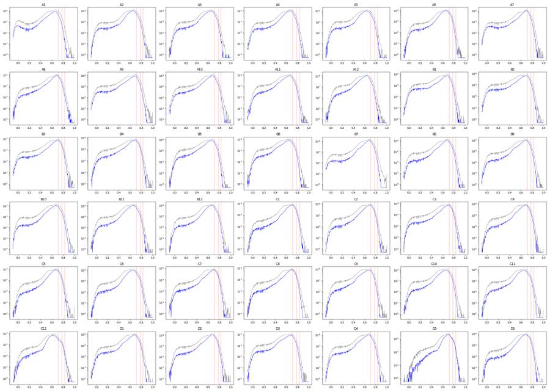
107
tool call · Bash
cd /task/work; cat > rl3g.py <<'EOF'
import numpy as np, matplotlib; matplotlib.use('Agg'); import matplotlib.pyplot as plt
from matplotlib.colors import LogNorm
from scipy.ndimage import gaussian_filter
wells=['C12','D5','A6','A12','B6','C6','C11','D3','B3','C1','A7','D6']
fig,axs=plt.subplots(3,4,figsize=(24,18))
for ax,w in zip(axs.flat,wells):
b=np.load(f'npy/{w}_sing.npy')
x=np.log10(np.clip(b[:,4],10,None)); y=np.log10(np.clip(b[:,2],10,None))
H,xe,ye=np.histogram2d(x,y,bins=150,range=[[3.4,5.0],[4.6,5.8]])
H=gaussian_filter(H,1.5)
ax.contour((xe[:-1]+xe[1:])/2,(ye[:-1]+ye[1:])/2,np.log10(H.T+0.1),levels=25,cmap='jet')
for v in [4.3,4.35,4.4,4.45,4.5]: ax.axvline(v,color='k',lw=0.4)
ax.set_title(w); ax.grid(alpha=0.3)
fig.tight_layout(); fig.savefig('plots/rl3_contour.png',dpi=45)
EOF
python3 rl3g.py108
tool output
(Bash completed with no output)
109
tool call · Read
{
"file_path": "/task/work/plots/rl3_contour.png"
}110
tool output
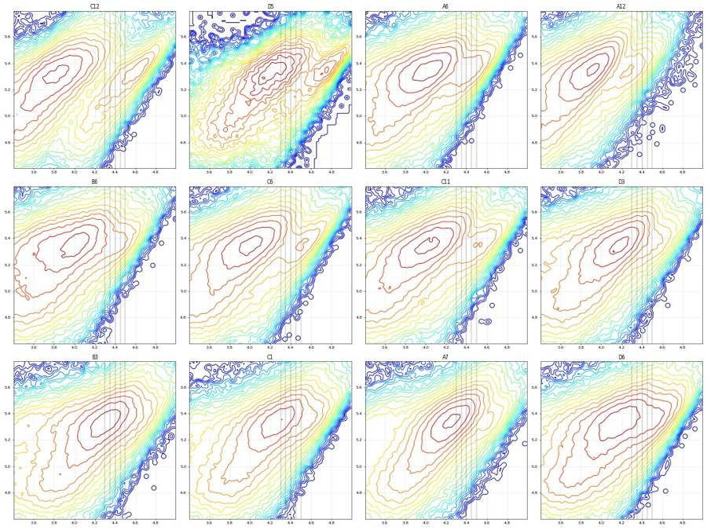
112
tool call · Bash
cd /task/work; python3 - <<'EOF'
import numpy as np
from scipy.ndimage import gaussian_filter1d
for w in ['C12','D5','A6','B6','C6','C11','D3','A12']:
b=np.load(f'npy/{w}_sing.npy')
x=np.log10(np.clip(b[:,4],10,None)); y=np.log10(np.clip(b[:,2],10,None))
out=[]
for lo,hi in [(4.6,6.1),(5.0,5.5),(5.2,5.5)]:
s=(y>=lo)&(y<hi)
h,e=np.histogram(x[s],bins=200,range=(3.5,5.0)); c=(e[:-1]+e[1:])/2
hs=gaussian_filter1d(h.astype(float),2.5)
d2=gaussian_filter1d(np.gradient(np.gradient(hs)),2)
# local minima of hs in 4.1-4.7
mins=[round(c[j],3) for j in range(1,199) if hs[j]<hs[j-1] and hs[j]<hs[j+1] and 4.1<c[j]<4.7]
# local max of d2 (convex = shoulder start) in 4.2-4.6
conv=[round(c[j],3) for j in range(1,199) if d2[j]>d2[j-1] and d2[j]>d2[j+1] and 4.15<c[j]<4.65 and d2[j]>0]
out.append((lo,hi,mins,conv))
print(w,out)
EOF113
tool output
C12 [(4.6, 6.1, [], [4.216, 4.276, 4.336, 4.471, 4.531]), (5.0, 5.5, [4.351, 4.494], [4.224, 4.336, 4.486]), (5.2, 5.5, [4.336, 4.606], [4.224, 4.314, 4.389, 4.486])] D5 [(4.6, 6.1, [], [4.254, 4.359, 4.441, 4.531, 4.606]), (5.0, 5.5, [4.621], [4.246, 4.359, 4.449, 4.494, 4.606]), (5.2, 5.5, [4.254, 4.606], [4.254, 4.359, 4.449, 4.516, 4.606])] A6 [(4.6, 6.1, [], [4.201, 4.336, 4.404, 4.456, 4.576]), (5.0, 5.5, [], [4.224, 4.291, 4.456, 4.569]), (5.2, 5.5, [], [4.224, 4.291, 4.359, 4.449, 4.569])] B6 [(4.6, 6.1, [], [4.209, 4.261, 4.321, 4.381, 4.456, 4.554]), (5.0, 5.5, [], [4.209, 4.261, 4.321, 4.389, 4.561]), (5.2, 5.5, [], [4.216, 4.261, 4.314, 4.381, 4.561])] C6 [(4.6, 6.1, [], [4.261, 4.381, 4.494, 4.554]), (5.0, 5.5, [], [4.194, 4.276, 4.389, 4.494]), (5.2, 5.5, [4.411], [4.261, 4.374])] C11 [(4.6, 6.1, [], [4.224, 4.299, 4.389, 4.494, 4.606]), (5.0, 5.5, [], [4.156, 4.239, 4.284, 4.389, 4.464]), (5.2, 5.5, [], [4.239, 4.291, 4.389, 4.464])] D3 [(4.6, 6.1, [], [4.381, 4.464, 4.524, 4.629]), (5.0, 5.5, [], [4.381, 4.456, 4.516, 4.644]), (5.2, 5.5, [], [4.374, 4.456, 4.516])] A12 [(4.6, 6.1, [], [4.239, 4.321, 4.419, 4.494, 4.576]), (5.0, 5.5, [], [4.239, 4.321, 4.426, 4.501, 4.569]), (5.2, 5.5, [4.254], [4.239, 4.321, 4.426, 4.494, 4.569])]
115
tool call · Bash
cd /task/work; python3 - <<'EOF'
import numpy as np
CUT=2.25e4
for w in ['B1','B2','B4','B5','B6','C7','B3','A1','A12']:
b=np.load(f'npy/{w}_sing.npy'); l=b[b[:,4]<CUT]; g=l[:,3]
q=np.percentile(g,[99,99.9,99.95,99.99]).round(0)
srt=np.sort(g)[::-1][:15].round(0)
print(w,len(l),'q99/99.9/99.95/99.99',q,'counts >1500,2000,2500,3000,4000,5000:',[int((g>c).sum()) for c in [1500,2000,2500,3000,4000,5000]],'top',srt[:10])
EOF116
tool output
B1 361196 q99/99.9/99.95/99.99 [ 734. 1194. 1323. 1705.] counts >1500,2000,2500,3000,4000,5000: [88, 20, 7, 5, 3, 2] top [10709. 5755. 4200. 3540. 3412. 2727. 2504. 2476. 2387. 2361.] B2 334773 q99/99.9/99.95/99.99 [ 664. 1125. 1281. 1879.] counts >1500,2000,2500,3000,4000,5000: [88, 28, 17, 12, 5, 3] top [9640. 8202. 5498. 4749. 4677. 3707. 3598. 3318. 3311. 3268.] B4 293073 q99/99.9/99.95/99.99 [ 770. 1304. 1498. 2656.] counts >1500,2000,2500,3000,4000,5000: [144, 53, 33, 24, 16, 10] top [14572. 13754. 10971. 9533. 7386. 6596. 6076. 5678. 5561. 5115.] B5 442724 q99/99.9/99.95/99.99 [ 801. 1353. 1618. 3455.] counts >1500,2000,2500,3000,4000,5000: [295, 112, 69, 50, 41, 29] top [42517. 38022. 32268. 20553. 13457. 12625. 12447. 11963. 10434. 10394.] B6 452356 q99/99.9/99.95/99.99 [ 802. 1379. 1621. 3987.] counts >1500,2000,2500,3000,4000,5000: [305, 132, 86, 66, 46, 27] top [138574. 28397. 28255. 22419. 19927. 18829. 14421. 11830. 11299. 9756.] C7 289611 q99/99.9/99.95/99.99 [ 664. 1178. 1554. 6424.] counts >1500,2000,2500,3000,4000,5000: [154, 99, 75, 62, 49, 38] top [48687. 29896. 29553. 20265. 19914. 17562. 17558. 16239. 15655. 14643.] B3 297183 q99/99.9/99.95/99.99 [ 700. 1318. 2229. 15446.] counts >1500,2000,2500,3000,4000,5000: [228, 162, 136, 121, 87, 74] top [345709. 242898. 122798. 79931. 78859. 76614. 67794. 60927. 40450. 38193.] A1 467526 q99/99.9/99.95/99.99 [ 844. 1762. 3595. 26974.] counts >1500,2000,2500,3000,4000,5000: [703, 410, 327, 266, 219, 181] top [756130. 485185. 277549. 270522. 263806. 249345. 221889. 156827. 144263. 122463.] A12 516589 q99/99.9/99.95/99.99 [ 907. 7452. 21365. 313899.] counts >1500,2000,2500,3000,4000,5000: [1728, 1255, 1037, 920, 758, 638] top [1048575. 1048575. 1048575. 1048575. 1048575. 1048575. 1048575. 1048575. 1048575. 1048575.]
118
agent
I'm placing the GFP cut-off from the upper edge of the GFP-negative cloud in B1, B2 and B4, the wells with the fewest GFP-bright events.
119
tool call · Bash
cd /task/work; cat > gfp2.py <<'EOF'
import numpy as np, matplotlib; matplotlib.use('Agg'); import matplotlib.pyplot as plt
from matplotlib.colors import LogNorm
import flowkit as fk
lt=fk.transforms.LogicleTransform(param_t=1048576,param_w=1.0,param_m=6.0,param_a=0)
L=lambda x: lt.apply(np.asarray(x,dtype=float))
CUT=2.25e4
wells=['B1','B2','B4','B5','B6','C7','B3','A1','A12','C12','D5','A6']
fig,axs=plt.subplots(3,4,figsize=(24,18))
for ax,w in zip(axs.flat,wells):
b=np.load(f'npy/{w}_sing.npy'); l=b[b[:,4]<CUT]
ax.hist2d(L(l[:,3]),l[:,2],bins=250,range=[[0,1],[0,1.05e6]],norm=LogNorm(),cmap='jet')
for v,c in [(2000,'k'),(2500,'m'),(3000,'r')]: ax.axvline(L([v])[0],color=c,lw=0.6)
ax.set_title(w+' BL1-A vs SSC-A, Live'); ax.set_xticks(L([0,100,1000,1e4,1e5,1e6])); ax.set_xticklabels(['0','1e2','1e3','1e4','1e5','1e6'])
fig.tight_layout(); fig.savefig('plots/gfp_live.png',dpi=45)
EOF
python3 gfp2.py120
tool output
(Bash completed with no output)
121
tool call · Read
{
"file_path": "/task/work/plots/gfp_live.png"
}122
tool output
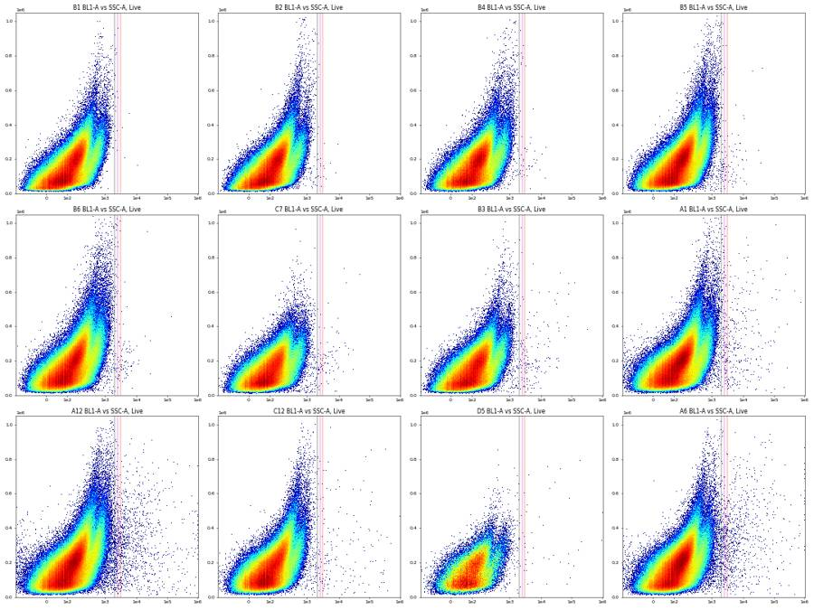
124
tool call · Bash
cd /task/work; python3 - <<'EOF'
import numpy as np
CUT=2.25e4
for w in ['B1','B2','B4']:
b=np.load(f'npy/{w}_sing.npy'); l=b[b[:,4]<CUT]
for lo,hi in [(0,2e5),(2e5,4e5),(4e5,6e5),(6e5,1.1e6)]:
s=(l[:,2]>=lo)&(l[:,2]<hi); g=l[s,3]
print(w,f'SSC {lo:.0e}-{hi:.0e} n={s.sum()}', 'p99.9',np.percentile(g,99.9).round(0),'p99.99',np.percentile(g,99.99).round(0),'max',g.max().round(0), 'n>2000',(g>2000).sum(),'n>2500',(g>2500).sum(),'n>3000',(g>3000).sum())
EOF125
tool output
B1 SSC 0e+00-2e+05 n=267996 p99.9 716.0 p99.99 907.0 max 10709.0 n>2000 2 n>2500 2 n>3000 1 B1 SSC 2e+05-4e+05 n=89146 p99.9 1290.0 p99.99 1683.0 max 4200.0 n>2000 6 n>2500 3 n>3000 3 B1 SSC 4e+05-6e+05 n=3671 p99.9 2115.0 p99.99 4552.0 max 5755.0 n>2000 6 n>2500 1 n>3000 1 B1 SSC 6e+05-1e+06 n=383 p99.9 2388.0 p99.99 2492.0 max 2504.0 n>2000 6 n>2500 1 n>3000 0 B2 SSC 0e+00-2e+05 n=250979 p99.9 718.0 p99.99 1513.0 max 8202.0 n>2000 16 n>2500 13 n>3000 9 B2 SSC 2e+05-4e+05 n=80152 p99.9 1187.0 p99.99 1743.0 max 9640.0 n>2000 8 n>2500 4 n>3000 3 B2 SSC 4e+05-6e+05 n=3199 p99.9 1772.0 p99.99 1835.0 max 1845.0 n>2000 0 n>2500 0 n>3000 0 B2 SSC 6e+05-1e+06 n=443 p99.9 2273.0 p99.99 2287.0 max 2289.0 n>2000 4 n>2500 0 n>3000 0 B4 SSC 0e+00-2e+05 n=211340 p99.9 761.0 p99.99 2160.0 max 13754.0 n>2000 24 n>2500 18 n>3000 14 B4 SSC 2e+05-4e+05 n=77934 p99.9 1346.0 p99.99 2979.0 max 14572.0 n>2000 14 n>2500 10 n>3000 8 B4 SSC 4e+05-6e+05 n=3369 p99.9 2065.0 p99.99 4425.0 max 5561.0 n>2000 4 n>2500 1 n>3000 1 B4 SSC 6e+05-1e+06 n=430 p99.9 2966.0 p99.99 3168.0 max 3191.0 n>2000 11 n>2500 4 n>3000 1
127
tool call · Bash
python3 -c "import sklearn; print(sklearn.__version__)" 2>&1
128
tool output (error)
Exit code 1 Traceback (most recent call last): File "<string>", line 1, in <module> ModuleNotFoundError: No module named 'sklearn'
130
tool call · Bash
cd /task/work; cat > rl3h.py <<'EOF'
import numpy as np, matplotlib; matplotlib.use('Agg'); import matplotlib.pyplot as plt
from scipy.ndimage import gaussian_filter1d
wells=[f'{r}{c}' for r in 'ABC' for c in range(1,13)]+[f'D{c}' for c in range(1,7)]
fig,axs=plt.subplots(6,7,figsize=(28,20))
res={}
for i,w in enumerate(wells):
b=np.load(f'npy/{w}_sing.npy')
x=np.log10(np.clip(b[:,4],10,None)); y=np.log10(np.clip(b[:,2],10,None))
s=(x>3.3)&(y>4.9)&(y<5.6)
r=x[s]-1.3*(y[s]-5.3) # RL3 projected to SSC=10^5.3 along live-cloud slope
h,e=np.histogram(r,bins=200,range=(3.3,5.3)); c=(e[:-1]+e[1:])/2
hs=gaussian_filter1d(h.astype(float),2.5)
mins=[round(c[j],2) for j in range(1,199) if hs[j]<hs[j-1] and hs[j]<hs[j+1] and 4.2<c[j]<4.8]
res[w]=mins
ax=axs.flat[i]; ax.plot(c,hs); ax.set_yscale('log'); ax.set_title(f'{w} {mins}')
for v in [4.35,4.45,4.55]: ax.axvline(v,color='k',lw=0.4)
fig.tight_layout(); fig.savefig('plots/rl3_resid.png',dpi=40)
print(res)
EOF
python3 rl3h.py131
tool output
{'A1': [], 'A2': [], 'A3': [], 'A4': [], 'A5': [], 'A6': [], 'A7': [], 'A8': [], 'A9': [], 'A10': [], 'A11': [], 'A12': [], 'B1': [], 'B2': [], 'B3': [], 'B4': [], 'B5': [], 'B6': [], 'B7': [], 'B8': [], 'B9': [], 'B10': [], 'B11': [], 'B12': [], 'C1': [], 'C2': [], 'C3': [], 'C4': [], 'C5': [], 'C6': [4.36], 'C7': [], 'C8': [], 'C9': [], 'C10': [], 'C11': [], 'C12': [4.32], 'D1': [], 'D2': [], 'D3': [], 'D4': [], 'D5': [4.54], 'D6': []}133
tool call · Bash
cd /task/work; cat > sat.py <<'EOF'
import numpy as np, pandas as pd
wells=[f'{r}{c}' for r in 'ABC' for c in range(1,13)]+[f'D{c}' for c in range(1,7)]
names=['Time','FSC-A','SSC-A','BL1-A','RL3-A','VL1-A','FSC-H','SSC-H','BL1-H','RL3-H','VL1-H']
rows=[]
for w in wells:
a=np.load(f'npy/{w}.npy'); b=np.load(f'npy/{w}_sing.npy')
r={'well':w,'n':len(a)}
for i in [1,2,3,4,5,7,8]:
r[names[i]+'%max']=round(100*np.mean(a[:,i]>=1048575),3)
live=b[b[:,4]<22500]; gp=live[live[:,3]>3000]
r['gfp_n']=len(gp); r['gfp_atmax']=int((gp[:,3]>=1048575).sum()); r['gfp_pct_atmax']=round(100*np.mean(gp[:,3]>=1048575),1) if len(gp) else 0
r['bl1H_atmax_gfp']=int((gp[:,8]>=1048575).sum())
r['med_FSC']=np.median(b[:,1]).round(0); r['med_SSC']=np.median(b[:,2]).round(0); r['med_RL3']=np.median(b[:,4]).round(0); r['med_VL1']=np.median(b[:,5]).round(0); r['med_BL1']=np.median(b[:,3]).round(0)
r['p90_VL1']=np.percentile(live[:,5],90).round(0)
rows.append(r)
df=pd.DataFrame(rows); pd.set_option('display.width',300); pd.set_option('display.max_columns',30)
print(df.to_string()); df.to_csv('sat.csv',index=False)
EOF
python3 sat.py134
tool output
well n FSC-A%max SSC-A%max BL1-A%max RL3-A%max VL1-A%max SSC-H%max BL1-H%max gfp_n gfp_atmax gfp_pct_atmax bl1H_atmax_gfp med_FSC med_SSC med_RL3 med_VL1 med_BL1 p90_VL1 0 A1 978726 0.189 1.174 0.001 0.000 0.000 0.026 0.000 266 0 0.0 0 130493.0 164176.0 5239.0 2640.0 122.0 7866.0 1 A2 935707 0.072 0.500 0.002 0.000 0.000 0.013 0.001 409 6 1.5 2 132202.0 164272.0 6129.0 2850.0 116.0 8264.0 2 A3 925910 0.048 0.467 0.002 0.000 0.000 0.011 0.001 676 5 0.7 1 130152.0 165906.0 5241.0 2579.0 115.0 8066.0 3 A4 892332 0.075 0.531 0.007 0.000 0.000 0.016 0.003 599 8 1.3 4 133672.0 171096.0 6977.0 2888.0 124.0 8267.0 4 A5 986514 0.075 0.612 0.010 0.000 0.000 0.020 0.005 706 13 1.8 4 131692.0 170045.0 5134.0 2745.0 117.0 8380.0 5 A6 755396 0.032 0.348 0.011 0.000 0.000 0.011 0.006 675 15 2.2 7 134584.0 175366.0 6750.0 2823.0 129.0 8651.0 6 A7 848859 0.089 0.534 0.003 0.000 0.000 0.009 0.001 310 1 0.3 1 129816.0 160119.0 10307.0 2627.0 135.0 8005.0 7 A8 710140 0.068 0.441 0.005 0.000 0.001 0.012 0.002 469 4 0.9 1 132501.0 168070.0 8965.0 2669.0 120.0 8502.0 8 A9 958681 0.319 1.084 0.002 0.000 0.000 0.030 0.001 289 2 0.7 0 128662.0 155678.0 7111.0 2470.0 127.0 8184.0 9 A10 870505 0.137 0.632 0.003 0.000 0.000 0.019 0.001 347 4 1.2 0 129408.0 160682.0 7234.0 2638.0 118.0 8848.0 10 A11 844586 0.043 0.379 0.008 0.000 0.000 0.014 0.003 536 6 1.1 2 128877.0 164268.0 5363.0 2501.0 123.0 8520.0 11 A12 947510 0.093 0.546 0.011 0.000 0.000 0.020 0.005 920 17 1.8 6 130753.0 165010.0 4438.0 2528.0 123.0 8092.0 12 B1 733754 0.107 0.475 0.000 0.000 0.000 0.010 0.000 5 0 0.0 0 125668.0 143152.0 6282.0 2471.0 117.0 9519.0 13 B2 728886 0.132 0.533 0.000 0.000 0.000 0.010 0.000 12 0 0.0 0 128753.0 150686.0 6987.0 2446.0 123.0 8780.0 14 B3 667298 0.065 0.350 0.000 0.000 0.000 0.010 0.000 121 0 0.0 0 129320.0 157048.0 9964.0 2515.0 125.0 8281.0 15 B4 598212 0.045 0.315 0.000 0.000 0.000 0.010 0.000 24 0 0.0 0 130147.0 159100.0 7415.0 2201.0 126.0 7044.0 16 B5 837561 0.045 0.412 0.000 0.000 0.000 0.006 0.000 50 0 0.0 0 130375.0 159022.0 5365.0 2268.0 133.0 7505.0 17 B6 877336 0.052 0.475 0.000 0.000 0.000 0.011 0.000 66 0 0.0 0 125636.0 156142.0 4443.0 2300.0 123.0 8045.0 18 B7 954909 0.118 0.561 0.000 0.001 0.000 0.009 0.000 146 0 0.0 0 125162.0 152886.0 9077.0 2728.0 124.0 8522.0 19 B8 918778 0.042 0.373 0.000 0.000 0.000 0.004 0.000 277 0 0.0 0 130811.0 158872.0 8451.0 2687.0 130.0 8417.0 20 B9 862070 0.055 0.400 0.000 0.000 0.000 0.008 0.000 250 0 0.0 0 131732.0 158451.0 8983.0 2635.0 125.0 8694.0 21 B10 1083648 0.065 0.605 0.001 0.000 0.000 0.013 0.000 294 1 0.3 1 130062.0 164837.0 7702.0 2419.0 125.0 7607.0 22 B11 988574 0.035 0.438 0.004 0.000 0.000 0.008 0.002 399 6 1.5 3 131474.0 167733.0 6310.0 2602.0 132.0 8316.0 23 B12 904103 0.029 0.383 0.012 0.000 0.000 0.010 0.006 612 13 2.1 7 132533.0 168121.0 6976.0 2859.0 130.0 8923.0 24 C1 624718 0.005 0.151 0.000 0.000 0.000 0.003 0.000 111 0 0.0 0 129079.0 160405.0 11372.0 2427.0 116.0 7405.0 25 C2 695572 0.010 0.196 0.000 0.000 0.000 0.005 0.000 191 0 0.0 0 128840.0 161071.0 10151.0 2437.0 121.0 7401.0 26 C3 656321 0.040 0.285 0.000 0.000 0.000 0.009 0.000 111 0 0.0 0 128995.0 155117.0 9763.0 2426.0 125.0 7933.0 27 C4 679504 0.012 0.200 0.000 0.000 0.000 0.005 0.000 161 0 0.0 0 129473.0 160764.0 8900.0 2560.0 119.0 7746.0 28 C5 689593 0.008 0.185 0.002 0.001 0.000 0.006 0.000 288 3 1.0 1 130224.0 164724.0 8178.0 2487.0 113.0 7640.0 29 C6 891011 0.015 … [2,556 more characters not shown]
136
agent
Saturation is negligible on every well (no fluorescence channel above ~0.01% at the scale maximum). Next I'm examining the out-of-order Time block in C6, C11 and D4 in more detail.
137
tool call · Bash
cd /task/work; python3 - <<'EOF'
import numpy as np
for w,k in [('C6',4443),('C11',4103),('D4',4084)]:
a=np.load(f'npy/{w}.npy'); pre=a[:k]; post=a[k:]
t0,t1=pre[0,0],pre[-1,0]
win=post[(post[:,0]>=t0)&(post[:,0]<=t1)]
print(w,'prefix',k,'t',t0,t1,'body events in same window',len(win))
# timestamps equality
print(' prefix ts unique',len(np.unique(pre[:,0])),'body-window ts unique',len(np.unique(win[:,0])), 'shared ts',len(np.intersect1d(pre[:,0],win[:,0])))
# compare distributions prefix vs body window vs body overall
for nm,x in [('pre',pre),('win',win),('body',post)]:
print(' ',nm, 'n',len(x),'med FSC %.0f SSC %.0f BL1 %.0f RL3 %.0f VL1 %.0f'%tuple(np.median(x[:,1:6],0)), 'FSC<6e4 %.3f'%np.mean(x[:,1]<6e4))
# closest rows: are prefix rows near-copies of body window rows (scaled)?
import numpy.linalg as la
p=pre[:50,1:6]; q=win[:,1:6]
d=[np.min(np.abs(q-r).sum(1)/np.abs(r).sum()) for r in p]
print(' min rel L1 dist prefix->window rows (first 50) median',np.median(d).round(3))
# rate in prefix window combined
print(' time diffs in prefix: median',np.median(np.diff(pre[:,0])),' body window median',np.median(np.diff(win[:,0])))
# where in the previous-run? check preceding well in acquisition order
EOF138
tool output
C6 prefix 4443 t 3350.0 3894.0 body events in same window 5215 prefix ts unique 544 body-window ts unique 545 shared ts 544 pre n 4443 med FSC 98137 SSC 99470 BL1 87 RL3 3301 VL1 1506 FSC<6e4 0.324 win n 5215 med FSC 101371 SSC 106409 BL1 92 RL3 3513 VL1 1780 FSC<6e4 0.318 body n 886568 med FSC 106892 SSC 120059 BL1 96 RL3 4049 VL1 2012 FSC<6e4 0.303 min rel L1 dist prefix->window rows (first 50) median 0.023 time diffs in prefix: median 0.0 body window median 0.0 C11 prefix 4103 t 3345.0 3896.0 body events in same window 4963 prefix ts unique 552 body-window ts unique 552 shared ts 552 pre n 4103 med FSC 101429 SSC 102487 BL1 85 RL3 3421 VL1 1664 FSC<6e4 0.305 win n 4963 med FSC 106830 SSC 113211 BL1 88 RL3 3850 VL1 1864 FSC<6e4 0.301 body n 864582 med FSC 111020 SSC 124974 BL1 95 RL3 4294 VL1 2186 FSC<6e4 0.280 min rel L1 dist prefix->window rows (first 50) median 0.024 time diffs in prefix: median 0.0 body window median 0.0 D4 prefix 4084 t 3292.0 3836.0 body events in same window 5042 prefix ts unique 545 body-window ts unique 545 shared ts 545 pre n 4084 med FSC 102307 SSC 102952 BL1 89 RL3 3501 VL1 1398 FSC<6e4 0.285 win n 5042 med FSC 104696 SSC 108864 BL1 93 RL3 3690 VL1 1602 FSC<6e4 0.278 body n 921721 med FSC 111983 SSC 126322 BL1 101 RL3 4574 VL1 1945 FSC<6e4 0.269 min rel L1 dist prefix->window rows (first 50) median 0.02 time diffs in prefix: median 0.0 body window median 0.0
140
tool call · Bash
cd /task/work; python3 - <<'EOF'
import numpy as np
wells=[f'{r}{c}' for r in 'ABC' for c in range(1,13)]+[f'D{c}' for c in range(1,7)]
allrows={}
for w,k in [('C6',4443),('C11',4103),('D4',4084)]:
a=np.load(f'npy/{w}.npy'); pre=a[:k]
# check any of the 15 non-time params identical to any row in any file, using a single column hash (FSC-A,SSC-A pair)
key=set(zip(pre[:,1].tolist(),pre[:,2].tolist(),pre[:,4].tolist()))
for w2 in wells:
b=np.load(f'npy/{w2}.npy')
st=k if w2==w else 0
kk=list(zip(b[st:,1].tolist(),b[st:,2].tolist(),b[st:,4].tolist()))
m=sum(1 for x in kk if x in key)
if m>5: print(w,'prefix matches in',w2,m)
# check whether BL1-W etc are consistent (W channels range 1024)
print(w,'prefix W medians',np.median(pre[:,11:16],0),'body',np.median(a[k:,11:16],0))
# FSC-H vs FSC-A relation
print(w,'A/H FSC prefix',np.median(pre[:,1]/np.maximum(pre[:,6],1)).round(3),'body',np.median(a[k:,1]/np.maximum(a[k:,6],1)).round(3))
EOF141
tool output
C6 prefix W medians [80. 80. 0. 29. 17.] body [82. 83. 0. 32. 27.] C6 A/H FSC prefix 1.149 body 1.183 C11 prefix W medians [81. 81. 0. 29. 20.] body [82. 83. 0. 33. 29.] C11 A/H FSC prefix 1.161 body 1.19 D4 prefix W medians [81. 81. 0. 30. 14.] body [83. 84. 0. 34. 26.] D4 A/H FSC prefix 1.165 body 1.194
143
thinking
Each well's prefix blocks are unique events, with about 4,100–4,400 extra events in a half-second burst near 3.3–3.9 s. I'm now quantifying the end-of-run rate drop seen in many wells.
144
tool call · Bash
cd /task/work; cat > endqc.py <<'EOF'
import numpy as np, pandas as pd, pickle
from matplotlib.path import Path
cells,sing=pickle.load(open('prelim_gates.pkl','rb')); pc=Path(cells+[cells[0]])
wells=[f'{r}{c}' for r in 'ABC' for c in range(1,13)]+[f'D{c}' for c in range(1,7)]
rows=[]
for w in wells:
a=np.load(f'npy/{w}.npy'); t=a[:,0]/1000.
T=t.max(); b=np.arange(0,T+0.25,0.25); h,_=np.histogram(t,b); r=h/0.25
mid=(b[:-1]>10)&(b[:-1]<T-10); med=np.median(r[mid])
# last full bins
last=r[:-1]
# time from which rate stays below 50% / 75% till the end (smoothed 1s)
sm=np.convolve(r,np.ones(4)/4,'same')
below50=np.where(sm<0.5*med)[0]; below75=np.where(sm<0.75*med)[0]
# contiguous tail
def tail(idx):
if len(idx)==0: return None
n=len(sm)-2; k=n
s=set(idx)
while k in s or k-1 in s: k-=1
return round(b[k+1],2) if k<n else None
t50=tail(below50); t75=tail(below75)
seg=lambda lo,hi: np.mean(pc.contains_points(a[(t>=lo)&(t<hi)][:,[1,2]]))
rows.append(dict(well=w,T=round(T,2),med_rate=round(med),last5s_rate=round(np.sum((t>=T-5))/5),last2s=round(np.sum(t>=T-2)/2),
last5_rel=round(np.sum(t>=T-5)/5/med,2),last2_rel=round(np.sum(t>=T-2)/2/med,2),tail_below75=t75,tail_below50=t50,
cells_mid=round(seg(20,80),3),cells_last3=round(seg(T-3,T+1),3),first2_rel=round(np.sum(t<2)/2/med,2)))
df=pd.DataFrame(rows); pd.set_option('display.width',300)
print(df.to_string()); df.to_csv('endqc.csv',index=False)
EOF
python3 endqc.py145
tool output
well T med_rate last5s_rate last2s last5_rel last2_rel tail_below75 tail_below50 cells_mid cells_last3 first2_rel 0 A1 46.250000 21662 19179 19681 0.89 0.91 NaN NaN 0.769 0.747 1.04 1 A2 97.949997 9704 8253 7390 0.85 0.76 96.75 NaN 0.754 0.710 0.95 2 A3 97.660004 9728 7542 6128 0.78 0.63 95.25 NaN 0.761 0.724 0.91 3 A4 97.739998 9272 8287 8374 0.89 0.90 NaN NaN 0.768 0.740 0.86 4 A5 97.870003 10260 9073 9766 0.88 0.95 NaN NaN 0.754 0.740 0.89 5 A6 97.110001 7964 6886 7262 0.86 0.91 NaN NaN 0.764 0.738 0.85 6 A7 97.919998 8800 7731 7798 0.88 0.89 NaN NaN 0.755 0.731 0.88 7 A8 97.940002 7396 6485 6844 0.88 0.93 NaN NaN 0.762 0.740 0.73 8 A9 97.820000 9928 8818 9368 0.89 0.94 NaN NaN 0.734 0.711 0.91 9 A10 97.699997 9136 6798 5584 0.74 0.61 94.75 NaN 0.751 0.692 0.96 10 A11 97.919998 8744 8157 8806 0.93 1.01 NaN NaN 0.728 0.711 0.88 11 A12 97.900002 9896 7414 5612 0.75 0.57 95.00 97.50 0.732 0.661 0.95 12 B1 97.940002 7628 7458 7896 0.98 1.04 NaN NaN 0.717 0.702 0.85 13 B2 97.870003 7512 7257 7562 0.97 1.01 NaN NaN 0.711 0.695 0.90 14 B3 97.940002 6960 6316 6688 0.91 0.96 NaN NaN 0.707 0.684 0.84 15 B4 97.860001 6264 4141 3248 0.66 0.52 94.50 97.25 0.702 0.609 0.90 16 B5 97.900002 8756 6119 5148 0.70 0.59 94.75 97.50 0.726 0.646 0.91 17 B6 97.839996 9100 6055 4794 0.67 0.53 94.50 97.00 0.706 0.647 0.93 18 B7 97.900002 10648 8913 9340 0.84 0.88 97.50 NaN 0.718 0.719 0.10 19 B8 97.750000 9976 6996 5801 0.70 0.58 94.50 97.50 0.725 0.640 0.04 20 B9 97.959999 8924 8686 9209 0.97 1.03 NaN NaN 0.734 0.728 0.84 21 B10 97.779999 11308 7678 6276 0.68 0.55 94.75 97.25 0.725 0.636 0.94 22 B11 97.919998 10332 7468 6289 0.72 0.61 94.50 97.50 0.720 0.645 0.92 23 B12 97.779999 9388 8852 8596 0.94 0.92 97.50 NaN 0.712 0.692 0.87 24 C1 97.760002 6480 6235 6472 0.96 1.00 NaN NaN 0.691 0.678 0.82 25 C2 97.790001 7320 4617 3784 0.63 0.52 93.75 97.00 0.694 0.588 0.86 26 C3 97.720001 6950 3591 2488 0.52 0.36 92.75 95.75 0.698 0.534 0.88 27 C4 97.800003 7176 4106 3207 0.57 0.45 92.75 96.50 0.705 0.593 0.90 28 C5 97.860001 7108 6914 7200 0.97 1.01 NaN NaN 0.700 0.686 0.83 29 C6 97.570000 9316 6053 5083 0.65 0.55 93.75 96.75 0.704 0.607 0.92 30 C7 97.910004 6668 6724 6345 1.01 0.95 NaN NaN 0.666 0.688 0.83 31 C8 97.870003 6628 6313 6630 0.95 1.00 NaN NaN 0.685 0.672 0.82 32 C9 97.900002 8316 7978 7778 0.96 0.94 NaN NaN 0.718 0.707 0.81 33 C10 97.480003 9768 5867 5004 0.60 0.51 92.75 NaN 0.726 0.591 0.93 34 C11 97.540001 9010 7851 7753 0.87 0.86 97.25 NaN 0.721 0.696 0.87 35 C12 97.760002 6008 5676 5250 0.94 0.87 97.50 NaN 0.712 0.699 0.95 36 D1 97.940002 8268 7306 7040 0.88 0.85 NaN NaN 0.715 0.682 0.90 37 D2 97.930000 9260 7963 7301 0.86 0.79 NaN NaN 0.724 0.694 0.87 38 D3 97.739998 9462 8541 8764 0.90 0.93 NaN NaN 0.725 0.687 0.88 39 D4 97.529999 9560 8422 8488 0.88 0.89 97.25 NaN 0.732 0.702 0.84 40 D5 97.769997 1596 1351 1370 0.85 0.86 97.50 NaN 0.692 0.642 0.75 41 D6 97.930000 7564 6642 6483 0.88 0.86 NaN NaN 0.711 0.673 0.89
147
tool call · Bash
cd /task/work; cat > drift.py <<'EOF'
import numpy as np, matplotlib; matplotlib.use('Agg'); import matplotlib.pyplot as plt
wells=['B7','B8','B9','C3','C4','C6','A1','A2','D5']
fig,axs=plt.subplots(len(wells),5,figsize=(25,4*len(wells)))
for i,w in enumerate(wells):
a=np.load(f'npy/{w}.npy'); t=a[:,0]/1000.
b=np.arange(0,t.max()+1,1.0); idx=np.digitize(t,b)-1
h=np.bincount(idx,minlength=len(b))
axs[i,0].plot(b,h[:len(b)]); axs[i,0].set_title(f'{w} rate /s')
for j,(c,nm) in enumerate([(1,'FSC-A'),(2,'SSC-A'),(4,'RL3-A'),(3,'BL1-A')],1):
med=[np.median(a[idx==k,c]) if np.sum(idx==k)>50 else np.nan for k in range(len(b))]
axs[i,j].plot(b,med); axs[i,j].set_title(f'{w} median {nm}')
fig.tight_layout(); fig.savefig('plots/drift.png',dpi=35)
EOF
python3 drift.py148
tool output
(Bash completed with no output)
149
tool call · Read
{
"file_path": "/task/work/plots/drift.png"
}150
tool output
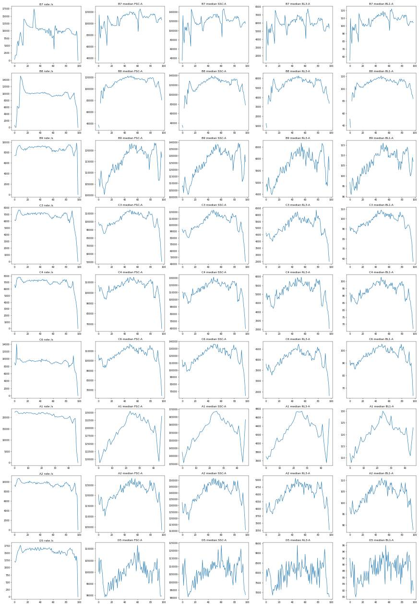
152
tool call · Bash
cd /task/work; cat > segcomp.py <<'EOF'
import numpy as np, pickle
from matplotlib.path import Path
cells,sing=pickle.load(open('prelim_gates.pkl','rb')); pc=Path(cells+[cells[0]]); ps=Path(sing+[sing[0]])
def comp(x):
mc=pc.contains_points(x[:,[1,2]]); ms=mc&ps.contains_points(x[:,[7,2]]); ml=ms&(x[:,4]<22500); mg=ml&(x[:,3]>3000)
return len(x), round(100*mc.mean(),1), round(100*ms.sum()/max(mc.sum(),1),1), round(100*ml.sum()/max(ms.sum(),1),1), round(100*mg.sum()/max(ml.sum(),1),3), int(mg.sum())
for w,segs in [('B7',[(0,4.5),(4.5,15),(15,28),(28,33),(33,58),(58,64),(64,100)]),('B8',[(0,3.5),(3.5,7),(7,13),(13,100)]),
('C3',[(0,90),(90,100)]),('C4',[(0,90),(90,100)]),('B9',[(0,90),(90,100)])]:
a=np.load(f'npy/{w}.npy'); t=a[:,0]/1000.
print(w,'all',comp(a))
for lo,hi in segs:
print(' ',lo,hi,comp(a[(t>=lo)&(t<hi)]))
for w,k in [('C6',4443),('C11',4103),('D4',4084)]:
a=np.load(f'npy/{w}.npy'); print(w,'prefix',comp(a[:k]),'body',comp(a[k:]))
EOF
python3 segcomp.py153
tool output
B7 all (954909, 71.5, 76.7, 85.1, 0.033, 146)
0 4.5 (8227, 64.7, 87.0, 86.2, 0.025, 1)
4.5 15 (78803, 67.6, 85.6, 85.6, 0.033, 13)
15 28 (156608, 71.4, 83.9, 85.0, 0.036, 29)
28 33 (72297, 70.0, 77.2, 85.5, 0.033, 11)
33 58 (256746, 72.5, 72.7, 84.9, 0.034, 39)
58 64 (50318, 71.8, 72.1, 84.7, 0.041, 9)
64 100 (331910, 72.2, 74.9, 85.2, 0.029, 44)
B8 all (918778, 71.4, 77.9, 85.9, 0.063, 277)
0 3.5 (808, 19.7, 92.5, 93.2, 0.0, 0)
3.5 7 (20172, 64.8, 86.9, 87.9, 0.03, 3)
7 13 (75553, 69.3, 79.2, 86.1, 0.073, 26)
13 100 (822245, 71.8, 77.6, 85.8, 0.063, 248)
C3 all (656321, 68.4, 81.2, 79.7, 0.038, 111)
0 90 (621618, 68.7, 80.9, 79.6, 0.039, 107)
90 100 (34703, 62.9, 87.5, 81.3, 0.026, 4)
C4 all (679504, 69.5, 82.8, 84.4, 0.049, 161)
0 90 (640651, 69.7, 82.6, 84.4, 0.05, 155)
90 100 (38853, 65.8, 87.2, 85.7, 0.031, 6)
B9 all (862070, 72.8, 78.8, 83.4, 0.061, 250)
0 90 (795840, 72.9, 78.8, 83.4, 0.061, 231)
90 100 (66230, 71.7, 79.0, 83.5, 0.061, 19)
C6 prefix (4443, 67.2, 86.2, 91.7, 0.127, 3) body (886568, 69.2, 79.5, 90.3, 0.071, 312)
C11 prefix (4103, 69.3, 86.8, 91.2, 0.089, 2) body (864582, 71.5, 79.3, 89.5, 0.039, 171)
D4 prefix (4084, 71.3, 86.0, 90.2, 0.0, 0) body (921721, 72.6, 78.3, 88.9, 0.052, 241)155
thinking
Disturbed segments in B7 and B8 hold about the same population fractions as their stable ones, but B7's flow is unstable throughout and B8's start is interrupted, so I'm flagging both. Next I'll refine the Cells polygon on log-scaled views before building the FlowKit gating.
156
tool call · Bash
cd /task/work; cat > cellsv.py <<'EOF'
import numpy as np, matplotlib; matplotlib.use('Agg'); import matplotlib.pyplot as plt
from matplotlib.colors import LogNorm
from matplotlib.path import Path
cells=[(6e4,1.0e4),(6e4,2.6e5),(2.6e5,1.035e6),(1.035e6,1.035e6),(1.035e6,2.6e5),(4.0e5,6.0e4),(1.8e5,1.0e4)]
def dense(poly,n=200):
out=[]
P=poly+[poly[0]]
for (x0,y0),(x1,y1) in zip(P[:-1],P[1:]):
s=np.linspace(0,1,n); out+=list(zip(x0+(x1-x0)*s,y0+(y1-y0)*s))
return np.array(out)
D=dense(cells)
wells=['A1','A9','B1','B7','C3','C7','D5','D6']
fig,axs=plt.subplots(2,4,figsize=(24,12))
pc=Path(cells+[cells[0]])
for ax,w in zip(axs.flat,wells):
a=np.load(f'npy/{w}.npy'); m=pc.contains_points(a[:,[1,2]])
ax.hist2d(np.log10(np.clip(a[:,1],1e3,None)),np.log10(np.clip(a[:,2],1e3,None)),bins=250,range=[[4.2,6.1],[3.0,6.1]],norm=LogNorm(),cmap='jet')
ax.plot(np.log10(D[:,0]),np.log10(D[:,1]),'k-',lw=1); ax.set_title(f'{w} Cells {100*m.mean():.1f}%')
fig.tight_layout(); fig.savefig('plots/cells_log_overlay.png',dpi=40)
EOF
python3 cellsv.py157
tool output
(Bash completed with no output)
158
tool call · Read
{
"file_path": "/task/work/plots/cells_log_overlay.png"
}159
tool output
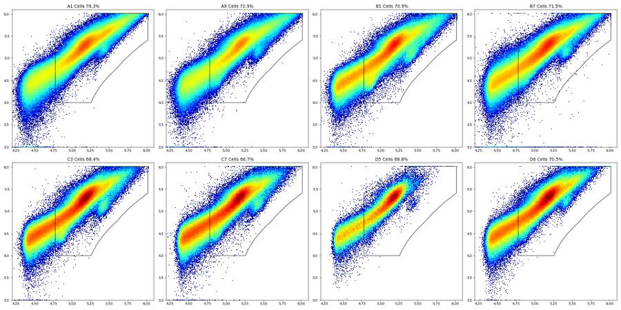
161
thinking
The Cells polygon is good, having removed the low-FSC debris and the scale-max pile-up. I'm now building the FlowKit strategy, exporting gates.xml, and applying it to all 42 files.
162
tool call · Bash
cd /task/work; python3 - <<'EOF' import flowkit as fk, inspect src=inspect.getsource(fk.gates.PolygonGate.__init__); print(src[:1500]) print(inspect.signature(fk.GatingStrategy.gate_sample)) r=inspect.getsource(fk.GatingStrategy.gate_sample); print(r[:600]) EOF
163
tool output
def __init__(
self,
gate_name,
dimensions,
vertices,
use_complement=False
):
"""
Create a PolygonGate instance.
:param gate_name: text string for the name of the gate
:param dimensions: list of Dimension instances
:param vertices: list of 2-D coordinates used to define gate boundary
:param use_complement: whether to use events inside or outside gate area, default is False (inside gate area)
"""
super().__init__(
gate_name,
dimensions
)
self.vertices = vertices
self.gate_type = "PolygonGate"
self.use_complement = use_complement
(self, sample, cache_events=False, verbose=False)
def gate_sample(self, sample, cache_events=False, verbose=False):
"""
Apply GatingStrategy to a Sample instance, returning a GatingResults instance.
:param sample: an FCS Sample instance
:param cache_events: Whether to cache pre-processed events (compensated and transformed). This can
be useful to speed up processing of gates that share the same pre-processing instructions for
the same channel data, but can consume significantly more memory space. See the related
clear_cache method for additional information. Default is F164
tool call · Bash
cd /task/work; cat > build_gates.py <<'EOF'
"""Build the single plate-wide FlowKit gating strategy for plate 230306 and export it."""
import flowkit as fk
CELLS = [(6.0e4, 1.0e4), (6.0e4, 2.6e5), (2.6e5, 1.035e6), (1.035e6, 1.035e6),
(1.035e6, 2.6e5), (4.0e5, 6.0e4), (1.8e5, 1.0e4)] # x=FSC-A, y=SSC-A (raw)
SINGLETS = [(5.0e3, 4.5e3), (5.0e3, 8.0e3), (3.0e4, 4.2e4), (1.0e5, 1.45e5), (2.0e5, 2.95e5),
(3.0e5, 4.6e5), (4.5e5, 7.5e5), (6.2e5, 1.05e6), (1.05e6, 1.05e6), (1.05e6, 9.5e5)] # x=SSC-H, y=SSC-A
LIVE_RL3_MAX = 22500.0 # Zombie NIR (RL3-A) upper edge of Live
GFP_BL1_MIN = 3000.0 # GFP (BL1-A) lower edge of GFP_pos
def build():
U = 'uncompensated'
gs = fk.GatingStrategy()
gs.add_gate(fk.gates.PolygonGate('Cells', [fk.Dimension('FSC-A', compensation_ref=U),
fk.Dimension('SSC-A', compensation_ref=U)], CELLS),
gate_path=('root',))
gs.add_gate(fk.gates.PolygonGate('Singlets', [fk.Dimension('SSC-H', compensation_ref=U),
fk.Dimension('SSC-A', compensation_ref=U)], SINGLETS),
gate_path=('root', 'Cells'))
gs.add_gate(fk.gates.RectangleGate('Live', [fk.Dimension('RL3-A', compensation_ref=U, range_max=LIVE_RL3_MAX)]),
gate_path=('root', 'Cells', 'Singlets'))
gs.add_gate(fk.gates.RectangleGate('GFP_pos', [fk.Dimension('BL1-A', compensation_ref=U, range_min=GFP_BL1_MIN)]),
gate_path=('root', 'Cells', 'Singlets', 'Live'))
return gs
if __name__ == '__main__':
gs = build()
with open('/task/outputs/gates.xml', 'wb') as fh:
fk.export_gatingml(gs, fh)
gs2 = fk.parse_gating_xml('/task/outputs/gates.xml')
print(gs2.get_gate_hierarchy(output='ascii'))
for g in gs2.get_gate_ids():
gate = gs2.get_gate(g[0], g[1])
print(g, type(gate).__name__, [(d.id, d.compensation_ref, d.transformation_ref, d.min, d.max) for d in gate.dimensions])
EOF
python3 build_gates.py && head -50 /task/outputs/gates.xml165
tool output
root
╰── Cells
╰── Singlets
╰── Live
╰── GFP_pos
('Cells', ('root',)) PolygonGate [('FSC-A', 'uncompensated', None, None, None), ('SSC-A', 'uncompensated', None, None, None)]
('Singlets', ('root', 'Cells')) PolygonGate [('SSC-H', 'uncompensated', None, None, None), ('SSC-A', 'uncompensated', None, None, None)]
('Live', ('root', 'Cells', 'Singlets')) RectangleGate [('RL3-A', 'uncompensated', None, None, 22500.0)]
('GFP_pos', ('root', 'Cells', 'Singlets', 'Live')) RectangleGate [('BL1-A', 'uncompensated', None, 3000.0, None)]
<?xml version='1.0' encoding='UTF-8'?>
<gating:Gating-ML xmlns:gating="http://www.isac-net.org/std/Gating-ML/v2.0/gating" xmlns:data-type="http://www.isac-net.org/std/Gating-ML/v2.0/datatypes" xmlns:transforms="http://www.isac-net.org/std/Gating-ML/v2.0/transformations">
<gating:PolygonGate gating:id="Cells">
<gating:dimension gating:compensation-ref="uncompensated">
<data-type:fcs-dimension data-type:name="FSC-A"/>
</gating:dimension>
<gating:dimension gating:compensation-ref="uncompensated">
<data-type:fcs-dimension data-type:name="SSC-A"/>
</gating:dimension>
<gating:vertex>
<gating:coordinate data-type:value="60000.0"/>
<gating:coordinate data-type:value="10000.0"/>
</gating:vertex>
<gating:vertex>
<gating:coordinate data-type:value="60000.0"/>
<gating:coordinate data-type:value="260000.0"/>
</gating:vertex>
<gating:vertex>
<gating:coordinate data-type:value="260000.0"/>
<gating:coordinate data-type:value="1035000.0"/>
</gating:vertex>
<gating:vertex>
<gating:coordinate data-type:value="1035000.0"/>
<gating:coordinate data-type:value="1035000.0"/>
</gating:vertex>
<gating:vertex>
<gating:coordinate data-type:value="1035000.0"/>
<gating:coordinate data-type:value="260000.0"/>
</gating:vertex>
<gating:vertex>
<gating:coordinate data-type:value="400000.0"/>
<gating:coordinate data-type:value="60000.0"/>
</gating:vertex>
<gating:vertex>
<gating:coordinate data-type:value="180000.0"/>
<gating:coordinate data-type:value="10000.0"/>
</gating:vertex>
</gating:PolygonGate>
<gating:PolygonGate gating:id="Singlets" gating:parent_id="Cells">
<gating:dimension gating:compensation-ref="uncompensated">
<data-type:fcs-dimension data-type:name="SSC-H"/>
</gating:dimension>
<gating:dimension gating:compensation-ref="uncompensated">
<data-type:fcs-dimension data-type:name="SSC-A"/>
</gating:dimension>
<gating:vertex>
<gating:coordinate data-type:value="5000.0"/>
<gating:coordinate data-type:value="4500.0"/>
</gating:vertex>
<gating:vertex>167
tool call · Bash
cd /task/work; cat > run_counts.py <<'EOF'
"""Gate every file with the saved gates.xml and write /task/outputs/counts.csv."""
import flowkit as fk, pandas as pd, numpy as np, os
lay = pd.read_csv('/task/inputs/plate_layout.csv')
gs = fk.parse_gating_xml('/task/outputs/gates.xml')
POPS = [('Cells', 'all_events'), ('Singlets', 'Cells'), ('Live', 'Singlets'), ('GFP_pos', 'Live')]
rows = []
for _, r in lay.iterrows():
s = fk.Sample(os.path.join('/task/inputs/raw', r['file']))
res = gs.gate_sample(s)
rep = res.report
counts = {'all_events': s.event_count}
for pop, parent in POPS:
c = int(rep.loc[rep.gate_name == pop, 'count'].iloc[0])
counts[pop] = c
pc = 100.0 * c / counts[parent] if counts[parent] > 0 else 0.0
rows.append(dict(file=r['file'], well=r['well'], population=pop, count=c,
parent_population=parent, pct_of_parent=round(pc, 4)))
print(r['well'], counts, flush=True)
df = pd.DataFrame(rows)
df.to_csv('/task/outputs/counts.csv', index=False)
print(len(df))
EOF
time python3 run_counts.py168
tool output
A1 {'all_events': 978726, 'Cells': 746874, 'Singlets': 495793, 'Live': 467540, 'GFP_pos': 266}
A2 {'all_events': 935707, 'Cells': 698149, 'Singlets': 541182, 'Live': 494861, 'GFP_pos': 411}
A3 {'all_events': 925910, 'Cells': 697716, 'Singlets': 550912, 'Live': 517296, 'GFP_pos': 676}
A4 {'all_events': 892332, 'Cells': 679390, 'Singlets': 532955, 'Live': 481008, 'GFP_pos': 601}
A5 {'all_events': 986514, 'Cells': 739154, 'Singlets': 570976, 'Live': 534150, 'GFP_pos': 706}
A6 {'all_events': 755396, 'Cells': 572832, 'Singlets': 468745, 'Live': 423299, 'GFP_pos': 676}
A7 {'all_events': 848859, 'Cells': 635539, 'Singlets': 496541, 'Live': 408157, 'GFP_pos': 311}
A8 {'all_events': 710140, 'Cells': 534951, 'Singlets': 435177, 'Live': 370139, 'GFP_pos': 469}
A9 {'all_events': 958681, 'Cells': 698544, 'Singlets': 517979, 'Live': 456232, 'GFP_pos': 289}
A10 {'all_events': 870505, 'Cells': 647335, 'Singlets': 501103, 'Live': 445180, 'GFP_pos': 348}
A11 {'all_events': 844586, 'Cells': 609627, 'Singlets': 488565, 'Live': 453500, 'GFP_pos': 536}
A12 {'all_events': 947510, 'Cells': 686902, 'Singlets': 535124, 'Live': 516616, 'GFP_pos': 921}
B1 {'all_events': 733754, 'Cells': 519962, 'Singlets': 402208, 'Live': 361236, 'GFP_pos': 5}
B2 {'all_events': 728886, 'Cells': 511746, 'Singlets': 396647, 'Live': 334837, 'GFP_pos': 12}
B3 {'all_events': 667298, 'Cells': 466452, 'Singlets': 377554, 'Live': 297212, 'GFP_pos': 121}
B4 {'all_events': 598212, 'Cells': 413524, 'Singlets': 344728, 'Live': 293125, 'GFP_pos': 24}
B5 {'all_events': 837561, 'Cells': 598816, 'Singlets': 475918, 'Live': 442768, 'GFP_pos': 50}
B6 {'all_events': 877336, 'Cells': 616950, 'Singlets': 482848, 'Live': 452381, 'GFP_pos': 66}
B7 {'all_events': 954909, 'Cells': 682919, 'Singlets': 523820, 'Live': 445969, 'GFP_pos': 149}
B8 {'all_events': 918778, 'Cells': 655756, 'Singlets': 510932, 'Live': 438864, 'GFP_pos': 277}
B9 {'all_events': 862070, 'Cells': 627482, 'Singlets': 494635, 'Live': 412461, 'GFP_pos': 254}
B10 {'all_events': 1083648, 'Cells': 776373, 'Singlets': 589402, 'Live': 507955, 'GFP_pos': 295}
B11 {'all_events': 988574, 'Cells': 703933, 'Singlets': 550608, 'Live': 501563, 'GFP_pos': 399}
B12 {'all_events': 904103, 'Cells': 637473, 'Singlets': 503222, 'Live': 451803, 'GFP_pos': 612}
C1 {'all_events': 624718, 'Cells': 426777, 'Singlets': 363933, 'Live': 281890, 'GFP_pos': 111}
C2 {'all_events': 695572, 'Cells': 473884, 'Singlets': 393742, 'Live': 318077, 'GFP_pos': 191}
C3 {'all_events': 656321, 'Cells': 449097, 'Singlets': 364826, 'Live': 290626, 'GFP_pos': 112}
C4 {'all_events': 679504, 'Cells': 472314, 'Singlets': 391072, 'Live': 330260, 'GFP_pos': 161}
C5 {'all_events': 689593, 'Cells': 478204, 'Singlets': 399972, 'Live': 349490, 'GFP_pos': 289}
C6 {'all_events': 891011, 'Cells': 616885, 'Singlets': 490578, 'Live': 443255, 'GFP_pos': 315}
C7 {'all_events': 649735, 'Cells': 433300, 'Singlets': 361564, 'Live': 289636, 'GFP_pos': 63}
C8 {'all_events': 639518, 'Cells': 434086, 'Singlets': 363836, 'Live': 290267, 'GFP_pos': 227}
C9 {'all_events': 801299, 'Cells': 568462, 'Singlets': 453969, 'Live': 398886, 'GFP_pos': 202}
C10 {'all_events': 927162, 'Cells': 664093, 'Singlets': 519085, 'Live': 469317, 'GFP_pos': 245}
C11 {'all_events': 868685, 'Cells': 621406, 'Singlets': 493207, 'Live': 441435, 'GFP_pos': 175}
C12 {'all_events': 578214, 'Cells': 409211, 'Singlets': 349034, 'Live': 312778, 'GFP_pos': 140}
D1 {'all_events': 800840, 'Cells': 568152, 'Singlets': 461139, 'Live': 400755, 'GFP_pos': 109}
D2 {'all_events': 894591, 'Cells': 641554, 'Singlets': 511710, 'Live': 452727, 'GFP_pos': 334}
D3 {'all_events': 915097, 'Cells': 656692, 'Singlets': 507732, 'Live': 453535, 'GFP_pos': 158}
D4 {'all_events': 925805, 'Cells': 672001, 'Singlets': 526182, 'Live': 467894, 'GFP_pos': 243}
D5 {'all_events': 153195, 'Cells': 105334, 'Singlets': 100619, 'Live': 72548, 'GFP_pos': 37}
D6 {'all_events': 726651, 'Cells': 512393, 'Singlets': 430633, 'Live': 344961, 'GFP_pos': 181}
168
real 0m18.344s
user 0m12.363s
sys 0m6.527s170
agent
Counts are written: 168 rows, produced by the reloaded `gates.xml`. Before writing the flags, I'm checking the last 15 s of every run to tell a gradual end-of-sample decline from a well that ran dry.
171
tool call · Bash
cd /task/work; cat > endplot.py <<'EOF'
import numpy as np, matplotlib; matplotlib.use('Agg'); import matplotlib.pyplot as plt
wells=[f'{r}{c}' for r in 'ABC' for c in range(1,13)]+[f'D{c}' for c in range(1,7)]
fig,axs=plt.subplots(6,7,figsize=(28,18))
for ax,w in zip(axs.flat,wells):
a=np.load(f'npy/{w}.npy'); t=a[:,0]/1000.; T=t.max()
b=np.arange(T-20,T+0.25,0.25); h,_=np.histogram(t,b)
med=np.sum((t>20)&(t<80))/60
ax.plot(b[:-1]-T,h/0.25/med); ax.axhline(1,color='k',lw=0.3); ax.axhline(0.5,color='r',lw=0.3); ax.set_ylim(0,1.6); ax.set_title(w)
fig.tight_layout(); fig.savefig('plots/end_all.png',dpi=40)
EOF
python3 endplot.py172
tool output
(Bash completed with no output)
173
tool call · Read
{
"file_path": "/task/work/plots/end_all.png"
}174
tool output
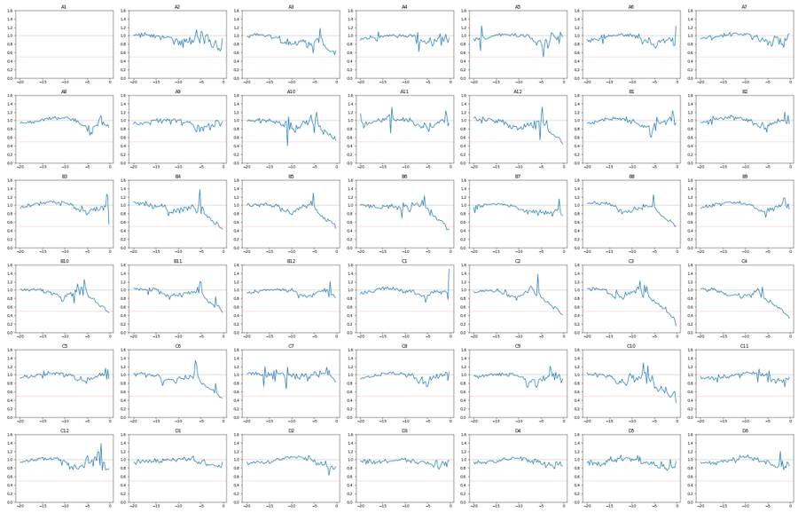
176
thinking
The end-of-run decline in about 12 wells is a normal end-of-sample tail affecting only the last ~5% of the run, not a dry well. I'm computing per-well QC metrics for the evidence column next.
177
tool call · Bash
cd /task/work; cat > qcmetrics.py <<'EOF'
import numpy as np, pandas as pd
wells=[f'{r}{c}' for r in 'ABC' for c in range(1,13)]+[f'D{c}' for c in range(1,7)]
meta=pd.read_csv('meta.csv'); meta['well']=meta.file.str.extract(r'_([A-D]\d+)\.fcs')
meta=meta.set_index('well')
rows=[]
for w in wells:
a=np.load(f'npy/{w}.npy'); t=a[:,0]/1000.; T=t.max()
b1=np.arange(0,np.floor(T)+1,1.0); h1,_=np.histogram(t,b1) # full 1-s bins
q=np.arange(0,np.floor(T*4)/4+0.25,0.25); hq,_=np.histogram(t,q); rq=hq/0.25
core=(q[:-1]>=5)&(q[:-1]<T-6)
med=np.median(h1[5:-6])
cv=np.std(h1[5:-6])/np.mean(h1[5:-6])
lowq=q[:-1][core][rq[core]<0.5*med]; hiq=q[:-1][core][rq[core]>1.5*med]
nonmono=int(np.sum(np.diff(a[:,0])<0))
rows.append(dict(well=w,total=len(a),T=round(T,1),flowrate=int(meta.loc[w,'#flowrate']),coinc=int(meta.loc[w,'#coincidentcount']),
med_rate=int(med),cv_1s=round(cv,3),first3s=int(np.sum(t<3)/3),first5_rel=round(np.sum(t<5)/5/med,2),last5_rel=round(np.sum(t>=T-5)/5/med,2),last2_rel=round(np.sum(t>=T-2)/2/med,2),
min1s=int(h1[1:-1].min()),max1s=int(h1[1:-1].max()),argmax1s=int(np.argmax(h1[1:-1])+1),argmin1s=int(np.argmin(h1[1:-1])+1),
lowq=[round(x,2) for x in lowq][:6],hiq=[round(x,2) for x in hiq][:6],nonmono=nonmono,
fsc_max=round(100*np.mean(a[:,1]>=1048575),3),ssc_max=round(100*np.mean(a[:,2]>=1048575),3),bl1_max=round(100*np.mean(a[:,3]>=1048575),4),rl3_max=round(100*np.mean(a[:,4]>=1048575),4)))
df=pd.DataFrame(rows); pd.set_option('display.width',350); pd.set_option('display.max_colwidth',60)
print(df.to_string()); df.to_csv('qcmetrics.csv',index=False)
EOF
python3 qcmetrics.py178
tool output
well total T flowrate coinc med_rate cv_1s first3s first5_rel last5_rel last2_rel min1s max1s argmax1s argmin1s lowq hiq nonmono fsc_max ssc_max bl1_max rl3_max 0 A1 978726 46.200001 200 172519 21608 0.039 22582 1.03 0.89 0.91 17413 22801 1 43 [] [] 0 0.189 1.174 0.0008 0.0000 1 A2 935707 97.900002 100 96386 9741 0.050 9322 0.99 0.85 0.76 7499 10799 7 95 [] [] 0 0.072 0.500 0.0022 0.0000 2 A3 925910 97.699997 100 90279 9759 0.054 9022 0.97 0.77 0.63 6937 10654 7 95 [] [] 0 0.048 0.467 0.0018 0.0000 3 A4 892332 97.699997 100 89020 9303 0.042 7998 0.92 0.89 0.90 7735 10070 7 92 [] [] 0 0.075 0.531 0.0072 0.0000 4 A5 986514 97.900002 100 104344 10313 0.043 9168 0.94 0.88 0.95 7319 11297 7 93 [] [] 0 0.075 0.612 0.0096 0.0000 5 A6 755396 97.099998 100 61627 7995 0.049 6959 0.93 0.86 0.91 5864 8592 7 92 [] [] 0 0.032 0.348 0.0109 0.0000 6 A7 848859 97.900002 100 81744 8886 0.045 7798 0.92 0.87 0.88 6996 9594 6 93 [] [] 0 0.089 0.534 0.0027 0.0000 7 A8 710140 97.900002 100 56510 7422 0.039 5363 0.78 0.87 0.92 5351 7962 88 1 [] [] 0 0.068 0.441 0.0054 0.0001 8 A9 958681 97.800003 100 108852 9997 0.042 9149 0.96 0.88 0.94 7823 10923 6 91 [] [] 0 0.319 1.084 0.0020 0.0004 9 A10 870505 97.699997 100 86870 9183 0.063 8761 1.00 0.74 0.61 6544 10137 5 95 [86.75] [] 0 0.137 0.632 0.0034 0.0001 10 A11 844586 97.900002 100 74178 8806 0.045 7708 0.92 0.93 1.00 7212 9747 85 93 [] [] 0 0.043 0.379 0.0077 0.0000 11 A12 947510 97.900002 100 94783 9874 0.052 9431 1.00 0.75 0.57 6730 11012 5 95 [] [] 0 0.093 0.546 0.0112 0.0000 12 B1 733754 97.900002 100 64948 7662 0.047 6450 0.89 0.97 1.03 5352 8350 7 92 [] [] 0 0.107 0.475 0.0000 0.0001 13 B2 728886 97.900002 100 64652 7562 0.050 6717 0.93 0.96 1.00 6130 8294 8 92 [] [] 0 0.132 0.533 0.0000 0.0001 14 B3 667298 97.900002 100 50572 6983 0.048 5824 0.88 0.90 0.96 5716 7468 84 2 [] [] 0 0.065 0.350 0.0000 0.0001 15 B4 598212 97.900002 100 40161 6301 0.052 5696 0.94 0.66 0.52 3945 6960 7 95 [] [] 0 0.045 0.315 0.0000 0.0003 16 B5 837561 97.900002 100 73351 8803 0.052 8011 0.96 0.70 0.58 5790 9646 7 95 [] [] 0 0.045 0.412 0.0000 0.0000 17 B6 877336 97.800003 100 79492 9095 0.044 8552 0.99 0.67 0.53 5944 10142 7 95 [] [] 0 0.052 0.475 0.0001 0.0000 18 B7 954909 97.900002 100 97979 10356 0.206 1292 0.22 0.86 0.90 1782 17476 30 2 [5.5, 6.0, 6.75, 7.75, 12.5, 12.75] [29.5, 29.75, 30.0, 30.25, 30.5, 30.75] 0 0.118 0.561 0.0000 0.0006 19 B8 918778 97.800003 100 91516 10000 0.138 257 0.18 0.70 0.58 34 15194 9 2 [5.0, 6.25, 7.25] [8.75, 9.0, 9.5, 9.75] 0 0.042 0.373 0.0001 0.0001 20 B9 862070 98.000000 100 79481 9010 0.040 7475 0.88 0.96 1.02 7352 9530 84 92 [] [] 0 0.055 0.400 0.0003 0.0000 21 B10 1083648 97.800003 100 119109 11426 0.052 10828 0.99 0.67 0.55 7303 12541 5 95 [] … [5,308 more characters not shown]
180
tool call · Bash
cd /task/work; python3 - <<'EOF'
import numpy as np
for w in ['B7','B8','C6','C11','D4','C3']:
a=np.load(f'npy/{w}.npy'); t=a[:,0]/1000.
h,_=np.histogram(t,np.arange(0,99,1.0))
print(w,'1s counts 0-15:',h[:15].tolist())
if w=='B7':
print(' 25-35:',h[25:35].tolist(),' 55-66:',h[55:66].tolist())
q,_=np.histogram(t,np.arange(55,66,0.25)); print(' 0.25s 55-66:',(q*4).tolist())
if w=='C3': print(' 85-98:',h[85:98].tolist())
EOF181
tool output
B7 1s counts 0-15: [312, 1784, 1782, 1821, 5517, 6581, 4917, 6822, 8594, 9558, 8165, 6766, 5301, 5149, 13961] 25-35: [11228, 11216, 11192, 11099, 14671, 17476, 16078, 12973, 10943, 10853] 55-66: [8289, 10261, 9119, 7629, 7831, 8400, 3885, 10734, 11839, 10202, 10850] 0.25s 55-66: [7372, 11160, 10704, 3920, 12672, 5592, 10212, 12568, 9832, 6692, 10460, 9492, 2760, 11140, 9592, 7024, 10276, 8572, 2332, 10144, 6652, 9460, 8880, 8608, 7012, 7408, 1096, 24, 20, 8756, 17592, 16568, 13844, 10928, 11172, 11412, 10884, 10648, 9556, 9720, 11548, 10792, 10448] B8 1s counts 0-15: [646, 92, 34, 2202, 6262, 6101, 5643, 6008, 11868, 15194, 14707, 14229, 13547, 12266, 11491] C6 1s counts 0-15: [8931, 8299, 9002, 14018, 9915, 10010, 9992, 10019, 10066, 9624, 9581, 9414, 9160, 9089, 9126] C11 1s counts 0-15: [8005, 7705, 8270, 12986, 9408, 9583, 9869, 9970, 9757, 9538, 9470, 9135, 9114, 8893, 8996] D4 1s counts 0-15: [8288, 7800, 8499, 13397, 9837, 10263, 10413, 10314, 10189, 10056, 10043, 9755, 9603, 9347, 9345] C3 1s counts 0-15: [6178, 6043, 6257, 6821, 7077, 7350, 7635, 7589, 7636, 7375, 7087, 7041, 6866, 6839, 6873] 85-98: [5727, 6261, 6539, 6788, 7544, 6638, 6286, 5246, 4723, 4100, 3652, 2686, 1372]
183
thinking
B7's flow stalls near 61.5–62.0 s, then surges to 17,600 ev/s, a clog-and-release pattern. I'm checking that no file duplicates another well's data before writing flags.
184
tool call · Bash
cd /task/work; python3 - <<'EOF'
import numpy as np, hashlib
wells=[f'{r}{c}' for r in 'ABC' for c in range(1,13)]+[f'D{c}' for c in range(1,7)]
sig={}
for w in wells:
a=np.load(f'npy/{w}.npy')
sig[w]=(hashlib.md5(a[1000:1100,1:].tobytes()).hexdigest(), set(map(tuple,a[5000:5200,1:4].tolist())))
for i,w in enumerate(wells):
for w2 in wells[i+1:]:
if sig[w][0]==sig[w2][0] or len(sig[w][1]&sig[w2][1])>5: print('overlap',w,w2,len(sig[w][1]&sig[w2][1]))
print('done')
EOF185
tool output
done
187
agent
No duplicated data between files. Writing `flags.csv` now.
188
tool call · Bash
cd /task/work; cat > write_flags.py <<'EOF'
import pandas as pd, numpy as np
lay=pd.read_csv('/task/inputs/plate_layout.csv')
cnt=pd.read_csv('/task/outputs/counts.csv')
qc=pd.read_csv('qcmetrics.csv').set_index('well')
piv=cnt.pivot(index='well',columns='population',values='count')
plate_med_total=int(qc.total.median())
special={
'B7':('no','clog_or_interrupted_flow',
'flow unstable for the whole run: 1-s rate 312/1784/1782/1821 ev/s at 0-4 s (vs median {med} ev/s), surge to 17476 ev/s at 30-31 s, '
'rate falls to 20-24 ev/s at 61.5-62.0 s (0.25-s bins) then a 17592 ev/s burst at 62.25 s (clog and release); CV of 1-s rate 0.21 (plate 0.04-0.06); '
'first-5 s rate 0.22x median; confidence: high'),
'B8':('no','clog_or_interrupted_flow',
'interrupted flow at start: 1-s rate 646/92/34 ev/s at 0-3 s (vs median {med} ev/s), then a surge to 15194 ev/s at 9-10 s (1.5x median) lasting to ~13 s; '
'stable from ~13 s (87% of run); about 96500 events (10.5%) come from the disturbed first 13 s; CV of 1-s rate 0.14 (plate 0.04-0.06); confidence: medium'),
'D5':('no','too_few_events',
'total {total} events vs plate median %d (next lowest C12 578214); steady rate of only ~{med} ev/s over 97.8 s (other wells 6000-11400 ev/s), so not a clog; '
'low coincident count (2293) confirms a dilute sample; Live {Live} and GFP_pos {GFP_pos} events (5-6x fewer than other wells); lowest viability on the plate '
'(Live/Singlets 72.1%%); confidence: medium' % plate_med_total),
}
rows=[]
for _,r in lay.iterrows():
w=r['well']; q=qc.loc[w]; p=piv.loc[w]
base=(f"total {q.total}; Cells {p['Cells']}, Singlets {p['Singlets']}, Live {p['Live']}, GFP_pos {p['GFP_pos']}; "
f"median rate {q.med_rate} ev/s over {q['T']} s, CV of 1-s rate {q.cv_1s}; first-5 s rate {q.first5_rel}x, last-5 s {q.last5_rel}x and last-2 s {q.last2_rel}x median; "
f"at scale max: FSC-A {q.fsc_max}%, SSC-A {q.ssc_max}%, BL1-A {q.bl1_max}%")
if w in special:
u,cat,txt=special[w]
ev=txt.format(med=q.med_rate,total=q.total,Live=p['Live'],GFP_pos=p['GFP_pos'])
ev=f"Cells {p['Cells']}, Singlets {p['Singlets']}, Live {p['Live']}, GFP_pos {p['GFP_pos']}; "+ev
else:
u,cat='yes','ok'; ev=base
if w in ('C6','C11','D4'):
k={'C6':4443,'C11':4103,'D4':4084}[w]
ev+=(f"; minor: the first {k} events carry Time 3.3-3.9 s and are followed by Time restarting at 0.014 s, a 0.5-s burst "
f"(1-s bin at 3-4 s = {q.max1s} vs median {q.med_rate}), about 0.5% of events, same scatter/Live/GFP make-up as the rest; rate stable afterwards")
if w=='A1':
ev+="; note: acquired at 200 uL/min (all other wells 100 uL/min), 46 s run, coincident events 17.6% (plate ~10%); voltages match, populations comparable with duplicate A2"
if q.last2_rel<0.6:
ev+=f"; end-of-run decline over last ~5 s only (common pattern on this plate), not running dry"
rows.append(dict(file=r['file'],well=w,usable=u,reason_category=cat,evidence=ev))
df=pd.DataFrame(rows); df.to_csv('/task/outputs/flags.csv',index=False)
print(df[['well','usable','reason_category']].value_counts(['usable','reason_category']))
for _,r in df[df.usable=='no'].iterrows(): print(r.well,r.evidence,'\n')
print(df.loc[df.well=='C6','evidence'].iloc[0]); print(df.loc[df.well=='C3','evidence'].iloc[0])
EOF
python3 write_flags.py189
tool output
usable reason_category
yes ok 39
no clog_or_interrupted_flow 2
too_few_events 1
Name: count, dtype: int64
B7 Cells 682919, Singlets 523820, Live 445969, GFP_pos 149; flow unstable for the whole run: 1-s rate 312/1784/1782/1821 ev/s at 0-4 s (vs median 10356 ev/s), surge to 17476 ev/s at 30-31 s, rate falls to 20-24 ev/s at 61.5-62.0 s (0.25-s bins) then a 17592 ev/s burst at 62.25 s (clog and release); CV of 1-s rate 0.21 (plate 0.04-0.06); first-5 s rate 0.22x median; confidence: high
B8 Cells 655756, Singlets 510932, Live 438864, GFP_pos 277; interrupted flow at start: 1-s rate 646/92/34 ev/s at 0-3 s (vs median 10000 ev/s), then a surge to 15194 ev/s at 9-10 s (1.5x median) lasting to ~13 s; stable from ~13 s (87% of run); about 96500 events (10.5%) come from the disturbed first 13 s; CV of 1-s rate 0.14 (plate 0.04-0.06); confidence: medium
D5 Cells 105334, Singlets 100619, Live 72548, GFP_pos 37; total 153195 events vs plate median 855464 (next lowest C12 578214); steady rate of only ~1611 ev/s over 97.8 s (other wells 6000-11400 ev/s), so not a clog; low coincident count (2293) confirms a dilute sample; Live 72548 and GFP_pos 37 events (5-6x fewer than other wells); lowest viability on the plate (Live/Singlets 72.1%); confidence: medium
total 891011; Cells 616885, Singlets 490578, Live 443255, GFP_pos 315; median rate 9341 ev/s over 97.6 s, CV of 1-s rate 0.047; first-5 s rate 1.07x, last-5 s 0.65x and last-2 s 0.54x median; at scale max: FSC-A 0.015%, SSC-A 0.314%, BL1-A 0.003%; minor: the first 4443 events carry Time 3.3-3.9 s and are followed by Time restarting at 0.014 s, a 0.5-s burst (1-s bin at 3-4 s = 14018 vs median 9341), about 0.5% of events, same scatter/Live/GFP make-up as the rest; rate stable afterwards; end-of-run decline over last ~5 s only (common pattern on this plate), not running dry
total 656321; Cells 449097, Singlets 364826, Live 290626, GFP_pos 112; median rate 7013 ev/s over 97.7 s, CV of 1-s rate 0.05; first-5 s rate 0.92x, last-5 s 0.51x and last-2 s 0.35x median; at scale max: FSC-A 0.04%, SSC-A 0.285%, BL1-A 0.0002%; end-of-run decline over last ~5 s only (common pattern on this plate), not running dry191
agent
Fixing the B7 timing detail (the near-zero bins are at 61.75–62.25 s). Then a final visual check of the gates.
192
tool call · Bash
cd /task/work; sed -i 's/rate falls to 20-24 ev\/s at 61.5-62.0 s (0.25-s bins) then a 17592 ev\/s burst at 62.25 s (clog and release)/rate falls to 24 and 20 ev\/s in the 0.25-s bins at 61.75-62.25 s, then a 17592 ev\/s burst at 62.5 s (clog and release)/' write_flags.py && python3 write_flags.py >/dev/null && grep '^Serotype panel_2_Rep2_Group_B7' /task/outputs/flags.csv
cat > final_plots.py <<'EOF'
import numpy as np, matplotlib; matplotlib.use('Agg'); import matplotlib.pyplot as plt
from matplotlib.colors import LogNorm
import flowkit as fk, pandas as pd
gs=fk.parse_gating_xml('/task/outputs/gates.xml')
lt=fk.transforms.LogicleTransform(param_t=1048576,param_w=1.0,param_m=6.0,param_a=0); L=lambda x: lt.apply(np.asarray(x,dtype=float))
cells=gs.get_gate('Cells').vertices; sing=gs.get_gate('Singlets').vertices
wells=['A2','B1','B4','C12','D5','A12']
fig,axs=plt.subplots(len(wells),4,figsize=(24,6*len(wells)))
for i,w in enumerate(wells):
s=fk.Sample(f'/task/inputs/raw/Serotype panel_2_Rep2_Group_{w}.fcs'); res=gs.gate_sample(s)
ev=s.get_events(source='raw'); idx={c:j for j,c in enumerate(s.pnn_labels)}
mC=res.get_gate_membership('Cells'); mS=res.get_gate_membership('Singlets'); mL=res.get_gate_membership('Live')
x=ev; ax=axs[i,0]; ax.hist2d(x[:,idx['FSC-A']],x[:,idx['SSC-A']],bins=250,range=[[0,1.05e6],[0,1.05e6]],norm=LogNorm(),cmap='jet'); P=np.array(cells+[cells[0]]); ax.plot(P[:,0],P[:,1],'k'); ax.set_title(f'{w} Cells {mC.sum()}')
x=ev[mC]; ax=axs[i,1]; ax.hist2d(x[:,idx['SSC-H']],x[:,idx['SSC-A']],bins=250,range=[[0,1.05e6],[0,1.05e6]],norm=LogNorm(),cmap='jet'); P=np.array(sing+[sing[0]]); ax.plot(P[:,0],P[:,1],'k'); ax.set_title(f'{w} Singlets {mS.sum()}')
x=ev[mS]; ax=axs[i,2]; ax.hist2d(L(x[:,idx['RL3-A']]),x[:,idx['SSC-A']],bins=250,range=[[0,1],[0,1.05e6]],norm=LogNorm(),cmap='jet'); ax.axvline(L([22500])[0],color='k'); ax.set_title(f'{w} Live {mL.sum()} (RL3-A logicle)')
x=ev[mL]; ax=axs[i,3]; ax.hist2d(L(x[:,idx['BL1-A']]),x[:,idx['SSC-A']],bins=250,range=[[0,1],[0,1.05e6]],norm=LogNorm(),cmap='jet'); ax.axvline(L([3000])[0],color='k'); ax.set_title(f'{w} GFP_pos {res.get_gate_membership("GFP_pos").sum()} (BL1-A logicle)')
fig.tight_layout(); fig.savefig('plots/final_gates.png',dpi=30)
EOF
python3 final_plots.py193
tool output
Serotype panel_2_Rep2_Group_B7.fcs,B7,no,clog_or_interrupted_flow,"Cells 682919, Singlets 523820, Live 445969, GFP_pos 149; flow unstable for the whole run: 1-s rate 312/1784/1782/1821 ev/s at 0-4 s (vs median 10356 ev/s), surge to 17476 ev/s at 30-31 s, rate falls to 24 and 20 ev/s in the 0.25-s bins at 61.75-62.25 s, then a 17592 ev/s burst at 62.5 s (clog and release); CV of 1-s rate 0.21 (plate 0.04-0.06); first-5 s rate 0.22x median; confidence: high"
194
tool call · Read
{
"file_path": "/task/work/plots/final_gates.png"
}195
tool output
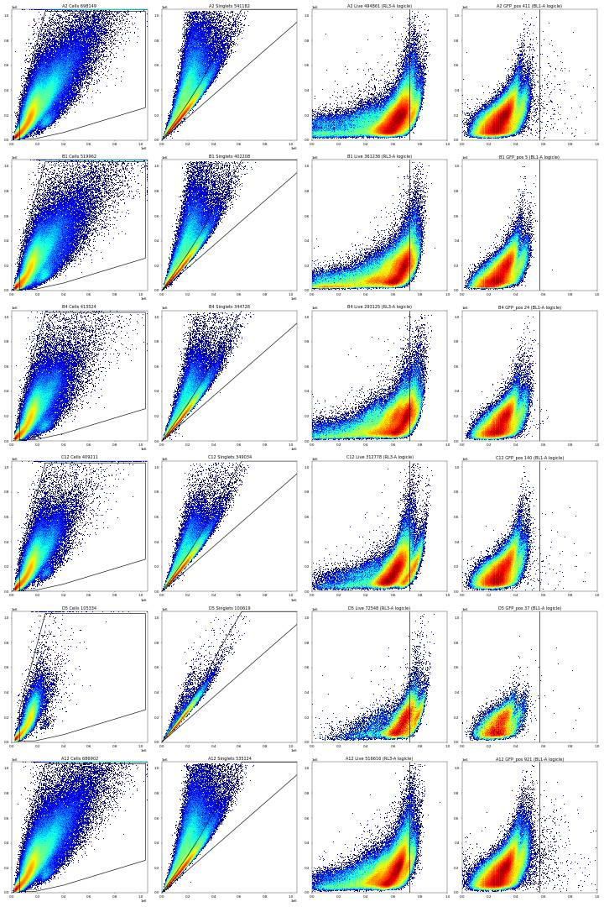
197
agent
The final gates look right on representative wells. Now I'm getting summary ranges from `counts.csv` for the notes.
198
tool call · Bash
cd /task/work; python3 - <<'EOF'
import pandas as pd
c=pd.read_csv('/task/outputs/counts.csv')
print(c.groupby('population').pct_of_parent.describe().round(3))
for p in ['Cells','Singlets','Live','GFP_pos']:
s=c[c.population==p].set_index('well')
print(p,'min',s.pct_of_parent.idxmin(),s.pct_of_parent.min(),'max',s.pct_of_parent.idxmax(),s.pct_of_parent.max(),'count min',s['count'].min(),'max',s['count'].max())
print(c.head(8).to_string())
f=pd.read_csv('/task/outputs/flags.csv'); print(f.shape, f.usable.value_counts().to_dict())
EOF199
tool output
count mean std min 25% 50% 75% max
population
Cells 42.0 71.545 2.437 66.689 69.979 71.434 72.737 76.311
GFP_pos 42.0 0.066 0.042 0.001 0.039 0.057 0.079 0.178
Live 42.0 87.063 5.318 72.102 84.425 88.276 90.341 96.541
Singlets 42.0 79.869 4.160 66.382 77.907 79.164 81.709 95.524
Cells min C7 66.6887 max A1 76.3108 count min 105334 max 776373
Singlets min A1 66.3824 max D5 95.5238 count min 100619 max 589402
Live min D5 72.1017 max A12 96.5414 count min 72548 max 534150
GFP_pos min B1 0.0014 max A12 0.1783 count min 5 max 921
file well population count parent_population pct_of_parent
0 Serotype panel_2_Rep2_Group_A1.fcs A1 Cells 746874 all_events 76.3108
1 Serotype panel_2_Rep2_Group_A1.fcs A1 Singlets 495793 Cells 66.3824
2 Serotype panel_2_Rep2_Group_A1.fcs A1 Live 467540 Singlets 94.3015
3 Serotype panel_2_Rep2_Group_A1.fcs A1 GFP_pos 266 Live 0.0569
4 Serotype panel_2_Rep2_Group_A2.fcs A2 Cells 698149 all_events 74.6119
5 Serotype panel_2_Rep2_Group_A2.fcs A2 Singlets 541182 Cells 77.5167
6 Serotype panel_2_Rep2_Group_A2.fcs A2 Live 494861 Singlets 91.4408
7 Serotype panel_2_Rep2_Group_A2.fcs A2 GFP_pos 411 Live 0.0831
(42, 5) {'yes': 39, 'no': 3}200
tool call · Write
{
"file_path": "/task/outputs/notes.md",
"content": "# Plate 230306: AAV serotype panel, rep 2. FlowKit gating notes\n\n## Gates\nI built one FlowKit 1.2.3 GatingStrategy for all 42 wells (`gates.xml`, reloaded with `parse_gating_xml`; counts.csv comes from that reloaded file). Gate order is Cells > Singlets > Live > GFP_pos. All dimensions are `uncompensated`, with no compensation and no transform: bounds are in raw channel units. I judged the fluorescence axes on logicle plots (T = 2^20, W = 1, M = 6, A = 0).\n- **Cells** (PolygonGate, FSC-A vs SSC-A): vertices (6e4,1e4), (6e4,2.6e5), (2.6e5,1.035e6), (1.035e6,1.035e6), (1.035e6,2.6e5), (4e5,6e4), (1.8e5,1e4).\n - It removes the low-FSC debris band between the FSC trigger (25,000) and about 6e4. That band is the shoulder below the main FSC-A peak (~1.6e5) and is mostly Zombie-dim particles.\n - It also removes events at or above 1.035e6, i.e. piled at the 1,048,575 scale maximum (SSC-A 0.08\u20131.2% of events).\n - Cells = 66.7\u201376.3% of events.\n- **Singlets** (PolygonGate, SSC-H vs SSC-A): the polygon follows the singlet diagonal.\n - Lower edge: SSC-A = 0.9 \u00d7 SSC-H.\n - Upper edge: SSC-A \u2248 1.4\u20131.45 \u00d7 SSC-H up to SSC-H 2e5, widening to 1.7\u00d7 at SSC-H 6.2e5, because the singlet A/H mode rises from 1.05 to 1.4 with size.\n - The edge was set on D5, the most dilute well with the cleanest singlet band (95th percentile A/H 1.38\u20131.73), then checked on every well. It excludes the high-A/H doublet and aggregate tail.\n - Singlets = 66.4% (A1) to 95.5% (D5) of Cells.\n- **Live** (1-D RectangleGate, RL3-A \u2264 22,500, no lower bound): the main Zombie NIR-dim population peaks at 5e3\u20131.8e4 and rises with SSC-A. The Zombie-bright dead cells form a lobe at about 2.5\u20136e4.\n - The valley between them is resolved in C12 (log10 4.32\u20134.35), C6 (4.36\u20134.41) and D5 (~4.5).\n - In the other wells the dead lobe shows only as a shoulder starting near log10 4.4 (e.g. A6, A12, B6, B12, C10, C11, D3).\n - The cut sits at 22,500 (log10 4.35), the valley position in C12 and C6, and is used for every well. No well has a separate population above 1e5.\n - Live = 72.1\u201396.5% of Singlets.\n- **GFP_pos** (1-D RectangleGate, BL1-A \u2265 3,000): judged on B1, B2 and B4, the wells with the fewest GFP-bright events.\n - In those wells the top of the GFP-negative Live cloud rises with SSC-A and reaches about 2,300\u20132,500 at SSC-A above 6e5. The maxima are 2,504 (B1) and 2,289 (B2); in B4 the 99.99th percentile is 3,168.\n - 3,000 sits just above that edge. It leaves 5, 12 and 24 events in B1, B2 and B4 (\u2264 0.008% of Live).\n - Same cut for every well. GFP_pos = 0.001\u20130.18% of Live.\n\n## Quality control\n- **Headers (all 42 files):** voltages match the notebook (FSC 30, SSC 300, BL1 250, RL3 300, VL1 300), as do the $PnS labels. The spillover matrix is the identity, $FIL/$WELLID match the file names, and acquisition order runs A1\u2192D6 (09:28\u201310:56). No two files share event data. Flow rate is 100 \u00b5L/min everywhere except A1 (200 \u00b5L/min).\n- **Time:** I binned the event rate at 1 s and 0.25 s and computed the CV of the 1-s rate, the first-5 s and last-2/5 s rates relative to the median, bins below 0.5\u00d7 or above 1.5\u00d7 the median, and Time monotonicity.\n- **Saturation:** % of events at 1,048,575 per channel. Maxima: FSC-A 0.32%, SSC-A 1.17%, BL1-A 0.012%, RL3-A 0.001%. No well was flagged; saturated scatter events fall outside the Cells gate.\n- **Event numbers:** total and gated counts compared across the plate.\n- **Rejected:**\n - B7: clog with unstable flow over the whole run (CV 0.21 vs 0.04\u20130.06 elsewhere; near-zero flow at 62 s, then a burst). Confidence high.\n - B8: interrupted flow at the start (34\u2013646 ev/s for 0\u20133 s, then 1.5\u00d7 surges up to 13 s). Confidence medium.\n - D5: too few events (153,195 vs a plate median of 855,464; a steady ~1,600 ev/s, so a dilute sample rather than a clog). Confidence medium.\n- **Kept with comments in the evidence column:**\n - C6, C11, D4: the first ~4,100\u20134,400 events carry Time 3.3\u20133.9 s, then Time restarts at 0.014 s. This is a 0.5-s burst holding about 0.5% of events, with the same scatter, Live and GFP make-up as the rest of the well.\n - Twelve wells show an end-of-run decline over the last ~5 s (worst C3, 0.35\u00d7 median in the last 2 s). The rate never reaches zero, so I read it as normal end-of-sample behaviour, not a well that ran dry.\n - A1 was run at 200 \u00b5L/min: 17.6% coincident events and fewer singlets, but its populations are comparable with duplicate A2.\n- **Not flagged:** low GFP_pos counts (5\u2013921 per well) and duplicate disagreements (e.g. B3 vs B4) are biology, not data defects.\n\n## Deviations\nNone. The gate order, axes and gate types follow `gating_strategy.md`. Live and GFP_pos use the 1-D RectangleGate form that file lists as accepted. Because the SSC-A range of the scientist's rectangles spans the whole axis, these 1-D gates select the same events. No time gate was used. Wells with disturbed flow are flagged instead, and their counts include all events.\n"
}201
tool output
File created successfully at: /task/outputs/notes.md (file state is current in your context — no need to Read it back)
203
tool call · Bash
cd /task/outputs; sed -i 's/(95th percentile A\/H 1.38–1.73)/(95th percentile A\/H 1.36–1.74 above SSC-H 3e4)/; s/ - Twelve wells show an end-of-run decline over the last ~5 s (worst C3, 0.35× median in the last 2 s)./ - Eleven wells show an end-of-run decline over the last ~5 s, with the last-2 s rate at 0.35–0.6× the median (worst C3)./' notes.md; wc -w notes.md; grep -n "1.36\|Eleven" notes.md; ls -la /task/outputs
204
tool output
859 notes.md 12: - The edge was set on D5, the most dilute well with the cleanest singlet band (95th percentile A/H 1.36–1.74 above SSC-H 3e4), then checked on every well. It excludes the high-A/H doublet and aggregate tail. 35: - Eleven wells show an end-of-run decline over the last ~5 s, with the last-2 s rate at 0.35–0.6× the median (worst C3). The rate never reaches zero, so I read it as normal end-of-sample behaviour, not a well that ran dry. total 48 drwxr-xr-x 2 root root 4096 Nov 10 17:37 . drwxr-xr-x 5 root root 4096 Nov 10 17:19 .. -rw-r--r-- 1 root root 11322 Nov 10 17:34 counts.csv -rw-r--r-- 1 root root 14627 Nov 10 17:36 flags.csv -rw-r--r-- 1 root root 4066 Nov 10 17:33 gates.xml -rw-r--r-- 1 root root 5028 Nov 10 17:37 notes.md [This command modified 1 file you've previously read: notes.md. Call Read before editing.]
206
agent
At 859 words the notes run past one page, so I'm tightening them to about 550.
207
tool call · Write
{
"file_path": "/task/outputs/notes.md",
"content": "# Plate 230306: AAV serotype panel, rep 2 (FlowKit 1.2.3)\n\n## Gates\nOne GatingStrategy is used for all 42 wells: Cells > Singlets > Live > GFP_pos. It is saved as `gates.xml` and reloaded with `parse_gating_xml`, and counts.csv comes from the reloaded file. All dimensions are `uncompensated` with no transform, and bounds are in raw units. I judged the fluorescence cut-offs on logicle plots (T 2^20, W 1, M 6).\n- **Cells** (polygon, FSC-A vs SSC-A): removes the low-FSC debris shoulder between the FSC trigger (25,000) and 6e4, and events at or above 1.035e6 (piled at the 1,048,575 maximum). Cells = 66.7\u201376.3% of events.\n- **Singlets** (polygon, SSC-H vs SSC-A): a band from SSC-A = 0.9 \u00d7 SSC-H up to \u22481.4\u20131.45 \u00d7 SSC-H, widening to 1.7\u00d7 at SSC-H 6e5 because the singlet A/H mode rises with size. The edge was set on D5, the most dilute well with the cleanest diagonal (95th percentile A/H 1.36\u20131.74), and checked on all wells. Singlets = 66\u201396% of Cells.\n- **Live** (1-D rectangle, RL3-A \u2264 22,500): the Zombie-dim population peaks at 5e3\u20131.8e4 and the Zombie-bright dead lobe sits at about 2.5\u20136e4. The valley is resolved in C12 (log10 4.32\u20134.35), C6 (4.36\u20134.41) and D5 (~4.5); elsewhere the dead lobe is only a shoulder from about log10 4.4. I set the cut at the C12/C6 valley (log10 4.35) for every well. No well has a separate event population above 1e5. Live = 72\u201397% of Singlets.\n- **GFP_pos** (1-D rectangle, BL1-A \u2265 3,000): set on B1, B2 and B4, the wells with the fewest GFP-bright events. There the top of the GFP-negative Live cloud rises with SSC-A to about 2,300\u20132,500 (maxima at SSC-A above 6e5: 2,504 in B1, 2,289 in B2; B4 99.99th percentile 3,168). The cut sits just above that edge, leaving 5, 12 and 24 events (\u2264 0.008% of Live). Same cut for every well. GFP_pos = 0.001\u20130.18% of Live.\n\n## Quality control\n- **Headers:** voltages, $PnS labels, identity spillover, $FIL/$WELLID and acquisition order (A1\u2192D6, 09:28\u201310:56) are consistent across all files. No two files share event data. Flow rate is 100 \u00b5L/min except A1 (200 \u00b5L/min).\n- **Time:** event rate in 1-s and 0.25-s bins; CV of the 1-s rate; first-5 s and last-2/5 s rates relative to the median; bins below 0.5\u00d7 or above 1.5\u00d7 the median; Time monotonicity.\n- **Saturation:** % of events at the scale maximum. Maxima: SSC-A 1.17%, FSC-A 0.32%, BL1-A 0.012%. None flagged; saturated scatter events fall outside the Cells gate.\n- **Event numbers:** total and gated counts compared across the plate.\n- **Rejected:**\n - B7: clog with unstable flow over the whole run (1-s CV 0.21 vs 0.04\u20130.06 elsewhere; flow nearly stops at 62 s, then a burst). Confidence high.\n - B8: interrupted flow at the start (34\u2013646 ev/s for 0\u20133 s, then surges up to 13 s; 10.5% of events). Confidence medium.\n - D5: too few events (153,195 vs a plate median of 855,464; a steady ~1,600 ev/s, so a dilute sample rather than a clog; only 37 GFP_pos). Confidence medium.\n- **Kept with comments in the evidence column:**\n - C6, C11, D4: the first ~4,100\u20134,400 events carry Time 3.3\u20133.9 s and are followed by Time restarting at 0. This is a 0.5-s burst of about 0.5% of events, with unchanged scatter, Live and GFP make-up.\n - 11 wells show an end-of-run decline over the last ~5 s (last-2 s rate 0.35\u20130.6\u00d7 the median). The rate never reaches zero, so I treated it as normal end-of-sample behaviour, not running dry.\n - A1 was run at 200 \u00b5L/min (17.6% coincident events) but is comparable with duplicate A2.\n - Low GFP_pos counts and disagreement between duplicates are biology, not data defects.\n\n## Deviations\nNone. Gate order, axes and gate types follow `gating_strategy.md`. Live and GFP_pos use the accepted 1-D RectangleGate form, which selects the same events as a rectangle spanning the whole SSC-A axis. No time gate was used: wells with disturbed flow are flagged instead, and their counts include all events.\n"
}208
tool output
The file /task/outputs/notes.md has been updated successfully. (file state is current in your context — no need to Read it back)
210
agent
Running a final validation of all deliverables.
211
tool call · Bash
cd /task/outputs; wc -w notes.md; grep -n '^## ' notes.md; python3 - <<'EOF'
import pandas as pd, flowkit as fk
lay=pd.read_csv('/task/inputs/plate_layout.csv')
c=pd.read_csv('counts.csv'); f=pd.read_csv('flags.csv')
assert list(c.columns)==['file','well','population','count','parent_population','pct_of_parent'] and len(c)==168
assert list(f.columns)==['file','well','usable','reason_category','evidence'] and len(f)==42
assert set(zip(c.file,c.well))==set(zip(lay.file,lay.well)) and list(f.file)==list(lay.file)
assert c.pct_of_parent.between(0,100).all() and c['count'].dtype.kind=='i'
assert ((f.usable=='yes')==(f.reason_category=='ok')).all()
assert f[f.usable=='no'].evidence.str.contains(r'confidence: (high|medium|low)$').all()
# hierarchy consistency
p=c.pivot(index='well',columns='population',values='count')
assert (p.Cells>=p.Singlets).all() and (p.Singlets>=p.Live).all() and (p.Live>=p.GFP_pos).all()
gs=fk.parse_gating_xml('gates.xml'); print(gs.get_gate_hierarchy(output='ascii'))
print(f[f.usable=='no'][['well','reason_category']].to_string(index=False))
print('all checks passed')
EOF212
tool output
662 notes.md
3:## Gates
10:## Quality control
25:## Deviations
<stdin>:9: UserWarning: This pattern is interpreted as a regular expression, and has match groups. To actually get the groups, use str.extract.
root
╰── Cells
╰── Singlets
╰── Live
╰── GFP_pos
well reason_category
B7 clog_or_interrupted_flow
B8 clog_or_interrupted_flow
D5 too_few_events
all checks passed214
agent
All 42 wells are gated, and I flagged 3 of them as unusable: B7, B8 and D5. Every file passes the format checks: 168 count rows, 42 flag rows, and gate counts that only shrink down the tree. The counts come from the saved `gates.xml` after reloading it with `parse_gating_xml`.
**Gates** (one tree for the whole plate, uncompensated, bounds in raw units):
| Gate | Definition | % of parent |
|---|---|---|
| Cells | polygon on FSC-A vs SSC-A; drops debris below FSC-A 6e4 and events stuck at the scale maximum | 67–76% |
| Singlets | narrow band along the SSC-H vs SSC-A diagonal, set on the well with the fewest doublets (D5) | 66–96% |
| Live | Zombie NIR (RL3-A) ≤ 22,500 | 72–97% |
| GFP_pos | GFP (BL1-A) ≥ 3,000 | 0.001–0.18% |
- **Live cut-off:** the dip between live and dead cells is only clearly visible in three wells (C12, C6, D5). In the others, dead cells show as a shoulder starting near the same value. I used C12 and C6 to place the cut-off, so it is the least certain choice in the tree.
- **GFP cut-off:** set just above the top of the GFP-negative cells in B1, B2 and B4, the wells with the fewest bright events. Those wells keep only 5–24 events above it.
- **Low GFP on this plate:** transduction is very low. GFP_pos counts run from 5 (B1) to 921 (A12), so the GFP percentages carry large counting error.
**Unusable wells:**
| Well | Reason | Confidence | Evidence |
|---|---|---|---|
| B7 | clog | high | flow unstable for the whole run; it nearly stops at about 62 s, then surges |
| B8 | interrupted flow | medium | almost no events for the first 3 s, then surges until about 13 s (10.5% of events) |
| D5 | too few events | medium | 153,195 events against a plate median of 855,464; the rate is steady, so the sample was dilute rather than clogged; only 37 GFP_pos |
**Judgement calls you may want to reverse.** I kept these wells as usable and described the issue in `flags.csv`:
- **C6, C11, D4:** each file starts with about 4,100–4,400 events timed at 3.3–3.9 s, after which Time restarts at 0. That is a half-second burst of about 0.5% of events, and their cell make-up matches the rest of the well.
- **End-of-run decline in 11 wells:** the event rate falls over the last ~5 s, worst in C3 at 0.35× the median. It never reaches zero, so I read it as the sample running out normally, not running dry.
- **A1:** acquired at 200 µL/min while every other well ran at 100. It has more doublets but looks comparable to its duplicate, A2.
- **Saturation:** no well has more than 1.2% of events at the scale maximum in any channel, so none is flagged.
Since gates can't differ by well, B7 and B8 are flagged rather than trimmed, and their counts include the disturbed stretches. `notes.md` has no departures from `gating_strategy.md` to report. Live and GFP_pos use the one-axis rectangle that the strategy lists as accepted.
Files are in `/task/outputs/`:
- `gates.xml`
- `counts.csv`
- `flags.csv`
- `notes.md`
final result
All 42 wells are gated, and I flagged 3 of them as unusable: B7, B8 and D5. Every file passes the format checks: 168 count rows, 42 flag rows, and gate counts that only shrink down the tree. The counts come from the saved `gates.xml` after reloading it with `parse_gating_xml`. **Gates** (one tree for the whole plate, uncompensated, bounds in raw units): | Gate | Definition | % of parent | |---|---|---| | Cells | polygon on FSC-A vs SSC-A; drops debris below FSC-A 6e4 and events stuck at the scale maximum | 67–76% | | Singlets | narrow band along the SSC-H vs SSC-A diagonal, set on the well with the fewest doublets (D5) | 66–96% | | Live | Zombie NIR (RL3-A) ≤ 22,500 | 72–97% | | GFP_pos | GFP (BL1-A) ≥ 3,000 | 0.001–0.18% | - **Live cut-off:** the dip between live and dead cells is only clearly visible in three wells (C12, C6, D5). In the others, dead cells show as a shoulder starting near the same value. I used C12 and C6 to place the cut-off, so it is the least certain choice in the tree. - **GFP cut-off:** set just above the top of the GFP-negative cells in B1, B2 and B4, the wells with the fewest bright events. Those wells keep only 5–24 events above it. - **Low GFP on this plate:** transduction is very low. GFP_pos counts run from 5 (B1) to 921 (A12), so the GFP percentages carry large counting error. **Unusable wells:** | Well | Reason | Confidence | Evidence | |---|---|---|---| | B7 | clog | high | flow unstable for the whole run; it nearly stops at about 62 s, then surges | | B8 | interrupted flow | medium | almost no events for the first 3 s, then surges until about 13 s (10.5% of events) | | D5 | too few events | medium | 153,195 events against a plate median of 855,464; the rate is steady, so the sample was dilute rather than clogged; only 37 GFP_pos | **Judgement calls you may want to reverse.** I kept these wells as usable and described the issue in `flags.csv`: - **C6, C11, D4:** each file starts with about 4,100–4,400 events timed at 3.3–3.9 s, after which Time restarts at 0. That is a half-second burst of about 0.5% of events, and their cell make-up matches the rest of the well. - **End-of-run decline in 11 wells:** the event rate falls over the last ~5 s, worst in C3 at 0.35× the median. It never reaches zero, so I read it as the sample running out normally, not running dry. - **A1:** acquired at 200 µL/min while every other well ran at 100. It has more doublets but looks comparable to its duplicate, A2. - **Saturation:** no well has more than 1.2% of events at the scale maximum in any channel, so none is flagged. Since gates can't differ by well, B7 and B8 are flagged rather than trimmed, and their counts include the disturbed stretches. `notes.md` has no departures from `gating_strategy.md` to report. Live and GFP_pos use the one-axis rectangle that the strategy lists as accepted. Files are in `/task/outputs/`: - `gates.xml` - `counts.csv` - `flags.csv` - `notes.md`